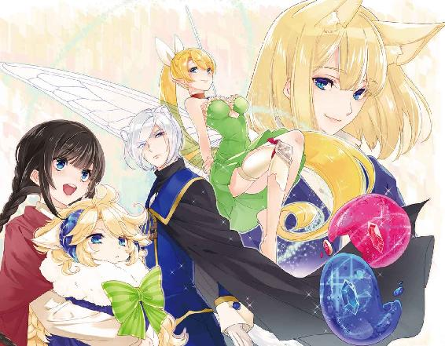
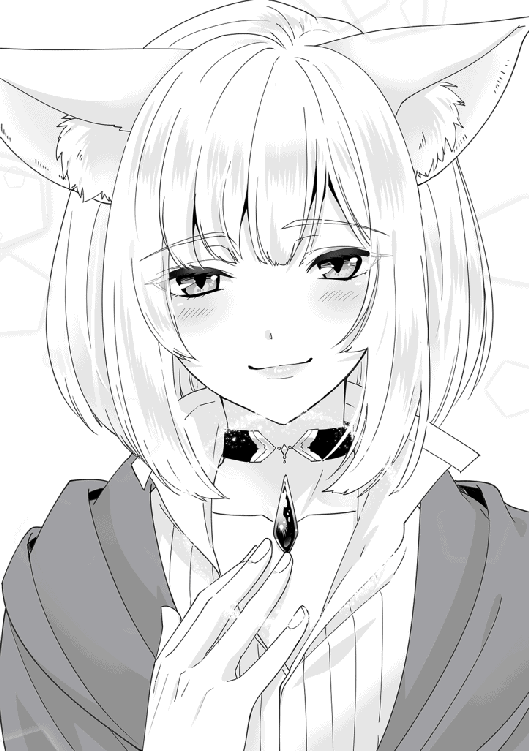

| レア・クラスチェンジ！VI ～魔物使いちゃんとレア従魔の異世界ゆる旅～ | |
| 黒杉くろん | |
| TOブックス (2018) | |
最強のご主人様を目指す魔物使いの少女レナ。海を渡り、目的の魔道具がある魔王国へと向かう。道中、主人に見捨てられた可哀相なウサギ魔物を拾う。傷ついたウサギを癒し、熱血特訓!? ウサギは過去の自分を乗り越えることができるのか。主従の絆が更なる進化を巻き起こす！

イラスト：ちま
デザイン：BEE-PEE
ジーニアレス大陸に辿り着いたレナたちは、港街グレンツェ・ジーニで旅支度を整え、魔王国を目指して歩み始めた。
「ジーニアレス大陸は、地域の気候の差が大きい。例えば、灼熱の砂漠、まつ毛も凍るような豪雪地域、高温多湿な鍾乳洞など......土地のクセが強いため、強靭な肉体を持つ魔人族でなければ過ごしにくいんだ。ヒト族は旅行客か短期滞在者が多いね」
ルーカが語る。レナたちは歩きながら「ふむふむ」と話を聞いた。
「この港街から魔王国への街道は、穏やかな春の気候。だからこそ、ミレージュエ大陸との交流を目的として、魔王国都市の場所に選ばれたんだよ。わりと歴史は浅いんだよね」
「へぇー！ 今日もルカぺディアこと、ルーカさんの魔眼情報は絶好調ですね」
「ありがとう？ 変なアダ名」
ルーカが面白そうにふふっと笑った。
みんなが揃って前を見る。広々とした草原、整えられた林は樹人族が手入れしている。歩きやすい石畳はドワーフ族とコボルト族の共同作品。行き交う人々は快適そうに足を運んでいる。
「空の青に植物の緑、隣には可愛い従魔たち。んー最高！ 今日もいい日になりそう」
『『『『ご主人さま、従えてぇーー！』』』』
従魔たちはレナの腕からはみ出る様に身を乗り出して、すりすりと大好きな主人に頬ずりした。
でれっと笑顔になったレナと、しばらくいちゃいちゃ戯れる。スター・ジュエルスライムたちはぷよんと柔らかく、夢喰い羊の黄金の毛並みはふわふわ、ハイフェアリー・ダークのキスに幸せを噛み締めた。
レナは友人のルーカに双子スライムを託す。二人で魔物を抱えて歩き始めた。
「この新品のブーツ、歩きやすいですよ！」
「［身体能力補正＋１］の魔法効果があるから、転ぶことはまずないだろうね。レナはおっちょこちょいだけど......多分、きっと、大丈夫？」
「変なフラグ立てないでくださぁい」
「あはは、今日もいい日になりそう」
「ん？ 悪運持ちのルーカさんがそう言うと、何かが起きちゃう気がするんですけど」
「称号［悪運持ち］は呪術師イヴァンに押し付けてきたし」
「まあね。でも幸運値は５のままですし」
「運［測定不能］のレナと分け合えたら、ちょうどバランスがいいのにね」
言葉遊びをしていた二人が、ふと黙る。
事情を知っている従魔たちは、アンニュイなため息をふっと吐いた。
元王子で国外逃亡中のルーカは、これ以上迷惑をかけられないからとレナパーティへの加入に頷いていない。そのためレナは「魔王国までだけ一緒に向かいましょう」と誘った。
そして魔王国はもうすぐ。このメンバーでの旅の終わりが近づいてきている。
（なんとかルーカさんが一緒にいられる口実が見つかればいいんだけどな。彼、放っておくと薄幸すぎて死んでしまいそうだし。もー、戦闘で活躍してくれてるんだから、遠慮しなくていいのに！）
（レナたちとずっと一緒にいたい。けれど、申し訳なさすぎるよ......）
「いてっ」
『ネガティブ撃退キック、だもんねっ。それっ、それ、それそれー！』
リリーがルーカの肩に乗り、足をバタバタさせている。
可愛らしい気遣いにより、はりつめていた空気が暖かく和らいだ。
☆
長い街道の途中には宿場街がある。観光地として丁寧に整備された美しい街並みだ。レナたちは各街で特産品のお菓子や魔法小物を買いつつ、夜はハマルの［体型変化］による巨大羊ベッドで優雅に野宿を行った。いつもの光景である。
旅は快調に進む。進んでしまう。
最後の宿場街に辿り着いた。
ここを出たら、お互いに言い訳を考える時間もなく、魔王国に入国となるだろう。そして、お別れ。
みんな、なんとなくそわそわしながら「ちょっとのんびり過ごしていく？」「賛成！」と街の観光を決めた。今宵ばかりは宿をとる。魔王国が運営する「淫魔のお宿♡」チェーン店。ピンク電飾がきらめく外観と名称はインパクトたっぷりだが、全年齢・全種族入室可能の、とてもよい宿である。大きなお風呂があるので、レナのお気に入りだ。
街で食料品を買い込み、レナパーティは日当たりがいい草原の一角でピクニックを始めた。
鳥ハムと薄切りチーズ、乾燥バジル、トマトを挟んだスペシャルサンドイッチと飲み物。
「美味しいものでお腹が満たされるって、幸せぇ......！」
「分かる......！」
うっとり呟き、美味しい食事に舌鼓を打った。
『『『「みーんな似た者同士で、相性ぴったりだよねっ」』』』
従魔たちがレナとルーカに飛びかかってきて、草原に倒れ込んで笑った。
明日もまだ、ここを離れられそうにないな、とみんながぼんやり思った。
立ち上がって、今からは狩りをして身体を動かそうか、と話す。
ふと、ルーカが鋭く遠くを見つめた。金色の猫耳がぴくぴく動く。まつ毛が長い端正な横顔を、レナがそっと眺めた。紫色の魔眼がきらりと光る。
「......あちらで冒険者と魔物が戦闘をしているみたいだ」
「え？ 街から近すぎませんか。狩猟禁止区域のはずですよね」
「妙だな」
「......ちょうど帰りに通る道です。そっと見て、もし魔物に襲われているようなら助けましょう」
ルーカは一瞬考える様子を見せたが、頷いた。
リリーにお願いして、金色美形の容姿に［幻覚］を施してもらう。地味な黒髪青年となった。
レナたちがそっと木陰から覗くと、林の中で、茶髪の少年が魔物らしきものと対峙している。
さらにしっかり見ようとレナが身体を傾けた。脚をまっすぐ、腰だけ横に九十度。当然バランスを崩す。
『レナ様──!?』
ハマルが予想落下地点に、ずささーーっとスライディング。スライムたちが『『きゃーーっ』』と言いながら、レナの首にネックレスのようにみょーんとぶら下がり、リリーがとっさに三つ編みを抱えた。ルーカがレナの肘のあたりを掴んだので、なんとか転げなかった。
「ご、ごめんなさーい」
「ちょっと気を抜きすぎかな、レナ。いや、変に緊張しちゃったのか。落ち着こう」
レナは苦笑して頷き呼吸を整えると、息を忍ばせて前進した。幸いにも先ほどの音で少年に気づかれた様子はない。
新人冒険者らしき少年の手元を見て、レナが目を丸くする。
（鞭を持ってる！ 私以外で鞭を武器にしているヒト族って、初めて見たよ）
魔物使いなど一部の職業では鞭を装備しなければ職業スキルを使えない。しかし扱いにくい鞭を好む冒険者はとても少ないのだ。
（もしかして同業者？）
レナがきょろきょろすると、彼の足元に、半透明の青い狐のような魔物を発見した。狐は少年を守るように静かに背を向けているので、仲間らしい。レナが（魔物使いなの？）と親近感を覚える。
『変な生き物ー』
『『あんなの、見たことないね！』』
しかし従魔は不思議そうに狐を眺めた。
「レナ。彼は〝召喚術士〟だと思う。あの狐は召喚獣だよ」
「召喚術士？」
レナがルーカに詳細を尋ねる視線を送ると（またあとで）と魔眼の［テレパシー］で伝えられる。説明が長くなるため、この戦闘に集中しよう、という意図だろうとレナは理解した。
なんとなく全員で戦闘を見守る。......ルーカは眉根を寄せている。
少年は、まだまだ未熟な動作で鞭を振りまわした。
「スキル［造形強化］......対象は、前脚二本！」
（スキル名を聞く限り、魔物使いの［鼓舞］のように強化したみたい。事前ではなく戦闘の最中にスキルを使ったということは、永続的に効果が続くものではなく、一時的な戦力アップかな）
レナがしっかり観察する。冒険者として生き残るには知識と経験が大切なのだ。
狐がぶるっと半透明の身体を震わせ、前脚を踏み出した。先端から白くなっていき、太く鋭い爪がハッキリと形造られた。
（召喚獣って、術士が幅広くアレンジできる存在なんだね。すごい）
スキルの反映までの間に、彼らが対峙している魔物は一度も攻撃してきていない。
レナたちが疑問を抱く。
（そんなことがありえる......？ 反撃のチャンスのはずだけど）
さらに目を凝らして、戦闘相手を見ようとするレナ。
（どんな魔物がいるの？）
フォックスの影に、灰茶色の小さな塊を視認した。まるでボロ雑巾のようだ。
（......子ウサギ！ なんて小さな耳）
白い毛皮が土と血で汚れている。弄ぶように狐に噛まれて転がされた。
ウサギはモゾモゾもがいて頭を上げると、地面にぺたんと倒れてしまう。まだなんとか生きている。倒れた瞬間、傷に響いたのかビクビクッと耳を震わせた。
ウサギの真っ赤な瞳は、なぜか、ただただ懇願するように少年を見つめ続けている。
レナは猛烈な違和感を生じる。
（ウサギの視線に、敵意も怯えも見られないのは......どうして？）
か弱い草食魔物であっても、命を刈られる瞬間に相手に敵意を持たないことなどあり得ない。
少年はざっと脚を前に蹴り出して、ウサギに土を被せた。舌打ちをひとつ。
「......はー。そろそろ本当に仕留めちまうか。......あーあ！ お前、きっとろくな経験値にもならないんだろうな？ スキルもギフトも駄目駄目、戦闘センスもない、タダ飯食らい。最悪じゃん。どこまでも使えねぇくせに、チョロチョロといつまでも後ろを付いて来やがって......いい加減、うっぜーーんだよ！ 駄目な姿を見てると、ほんとイライラする」
悪態を吐き、どこか嗜虐的な笑みを浮かべた。
「お前よりもこの召喚獣の方が使えるからさぁ。もう経験値になって、消えろよ......」
少年の奇妙な言葉に、レナの関心は釘付けになった。
「いけっ。クラウドフォックス。......爪で喉笛斬り裂いちまえ！」
▽クラウドフォックスが 跳躍！
軽快に地を蹴り、白い爪を剥き出しにする。ウサギの喉を狙っている。
ウサギの毛皮は鮮血で染まるのだろう、辛く思いながらも、レナは戦闘を見届けようとしていた。
（この戦闘が〝狩り〟である以上、たとえ見た目が可愛らしいウサギが痛めつけられていても、他者が介入するべきじゃないんだ......。私たちだって、食べるため、レベルを上げるために魔物を倒すし、その際血塗れにしてしまうこともあるんだから）
哀れなウサギは、ここで生涯を終えるはずだった。
『......っスキル［魔吸結界］！』
▽リリーが 戦闘のど真ん中にすっ飛んでいく！
「リリーちゃん!?」
狐の一撃は［魔吸結界］に阻まれて、ウサギの目前で、爪が吸い込まれて消えてしまった。
魔力で作られたフォックスの前脚は部位欠損となり、前のめりに倒れる。
「な、なんだぁ!?」
少年が焦って叫ぶ中、リリーが現れてウサギを背後に庇った。
少年に対峙し、空中で仁王立ちする。
怒りに燃える瞳は青く美しく、少年は思わず見惚れてしまった。
リリーが叫ぶ。
『この子を、攻撃、しないでよーーっ!! だめーーっ！』
「......はあぁ？ くそ、種族が違うから、何言ってるかまるで分かんねぇ......って、なんで妖精族が飛び出してくるんだよ!?」
「す、すみません！ 私のパーティの仲間が、その、暴走しちゃったみたいで......！」
息を切らせながらレナが駆けつけて、少年に話しかけた。まずは戦闘の邪魔したことを謝った。
「な、なんなんだよ？」
ちんまりした東方風の少女レナ、その後ろから黒髪猫耳青年とスライムが二体、羊魔物まで現れて、少年はイライラとしながらも、たじろいで半歩ほど引いた。
レナに寄り添う魔物たちと、腰にくくられた鞭を見て「......魔物使い？」とぼそっと呟く。
少年の雰囲気が急に鋭くなり、嫌悪の視線でレナを睨んだ。
レナの背にゾクリと嫌な汗が流れる。
（えっ、どうしてまた急に不機嫌になったの!? 確かに戦闘は邪魔しちゃったけど......）
少年はフン、と荒っぽく鼻を鳴らした。
「あのさぁー。アンタ、どうしてくれんの？ 獲物の横どり、だろ。この状況！」
「あっ」
レナがとてもまずい状況になっていることに気付く。獲物の横取りは、冒険者としてかなりのタブーだ。
再度頭を下げて、振り向くと、リリーはウサギに寄り添っていて手放す様子がない。
普段は勝手なことをしてレナを困らせる子ではないので、レナはまず事情を聞きたいと思った。
『......もう、休んで......お願い。ハーくん、手助けして？』
『はぁい。スキル［快眠］〜』
リリーとハマルはウサギを寝かしつけた。やっとホッと息を吐いて、汚れた毛皮をそっといたわるようにリリーが撫でる。ウサギは急激な眠気でようやく足掻くことを諦めて、瞳を閉じる。すぐに手当てをしてあげたら、命も助けられるだろう。
「リリーちゃん。この行動の理由を教えてくれるよね？」
尋ねられたリリーは目に涙を浮かべて、唇を震わせた。
『......この子の魂に、契約が、結ばれた跡が......視えたの......！ その、男の子は。この、ステップラビットの、ご主人さま、だったんだよ』
レナと他の従魔たちが息を呑む。目を伏せたルーカは事情を知っていたが、動くべきか判断を迷っていたのだ。
リリーは少年を非難する。たとえ言葉が通じなくても、言わずにいられなかった。
『ひどいよー！ 貴方、元魔物使い......なのに。......従魔だった子の、忠誠心をバカにして、こんな風に扱うなんて。この子、契約が切られても、まだ、ご主人さまを......慕ってて。......攻撃されても。抵抗、できなかったの......っ』
大粒の涙がぽろぽろ流れるリリーの頬に、レナはそっと指を添えて、優しく掬ってあげた。頬をすり寄せてきたリリーはとても可愛くて、主人としての愛情を自覚する。
説明を最後まで聞いたレナは、身体中の熱がスッと冷めていくような感覚を自覚した。
（元従魔を痛めつけていたなんて、なんて酷い話......信じられない）
レナはまっすぐに少年を見つめた。
「な......なんだよ!?」
弱そうな奴だ、とレナを見くびっていた少年が少女の眼力に驚き、精一杯睨み返す。
召喚獣クラウドフォックスはすでに消滅してしまっていて、心細さを感じた。
鞭を使い従者を操る職業は、主人の戦闘力は低いものだ。それにウサギを悠長に痛めつけていたので、少年自身の魔力も底をついている。
レナがぐっと拳を握りしめた。
「......まず、狩りの邪魔をしてしまって申し訳ありませんでした。......ウサギと貴方は、もともと主従関係だったって私の従魔が視抜いたのですが、本当ですか？ 教えて下さい」
「それが、なんだよ」
「......っ逆らえない相手を、貴方を慕っていた元従魔を攻撃するなんて、どうしてそんなことができるんですか！ 最低です！」
開き直ってキレていた少年が、レナの主張のまっすぐさに「うっ」と口ごもった。
「魔物使いって、魔物に力を貸してもらう代わりに、主人が愛情をいっぱい注いで、いざとなれば身体を張ってでも守らなくちゃいけないんです。それが、主従関係。主人と従魔は、一緒に強くなるんだ。それなのに、一方的に『経験値になれ』......だなんて。あんまりだと思います！」
レナの従魔たちは主人を誇らしく思い、震えた。『だからこそレナに従うの』と頷く。
清らかな魂の輝きに惹かれて出会い、日々注がれる愛情にメロメロになるのだ。レナ自身は弱くても、レア従魔たちがレナだけを慕って全力で守るのは、彼女の人柄が大好きだから。
『『『『また惚れ直したよっ、ご主人さまー！』』』』
えへん！ と、みんなで胸を張った。
「っ......」
少年は苦々しく表情を歪めた。過去を容赦なく暴かれて居心地が悪いし、仲の良さを見せつけられてイライラしている。（無駄な恥をかかせやがって！）とレナに憤りを抱いた。
「なんで、そんなトコまで他人に突っ込まれなきゃいけないんだよ......!? 俺は今、召喚術士だ。魔物使いじゃない。そいつが、元従魔だからなんだって言うんだ？ アンタが言う通り、そのウサギとの契約は切れてる。それなら、今のウサギはただの野生の魔物だろ！」
足でウサギに土埃をかけようとする。しかしルーカが聖結界で防いだ。
「〜〜〜〜！ 野生の魔物を召喚獣のエサにして、何が悪いっていうんだ。さんざん俺らの後を追ってきたのは、そのウサギ自身だし！ あー、うっとおしかった......。数日間、お目こぼしして去っていくのを待ってやった、俺の忍耐を褒めていいくらいだと思うけど？」
少年は鞭を苛立たしげにぷらぷら振った。
「元魔物使いが、元従魔を攻撃してはいけない、とか冒険者規則で定められているのか？ そんなルール、無いだろ！ じゃあ個人の自由なんだよ。アンタが自分の従魔にそーゆーお優しい接し方をするのも、俺が従魔を戦闘用品として扱ってたのも、どっちもこの世界に認められてるんじゃねーの！ 俺の魂、黒くなってないんだからさ」
少年はむすっとギルドカードを掲げた。悪行を重ねると魂が濁り、ギルドカードが黒くなるのがこの世界のシステムだ。しかし少年のカードは白いまま。
レナが歯を食いしばる。
レナが口にしたのは、倫理観から導きだされた、言わば感情論だ。
元主人ならば感じるものがあってほしい、と思って熱く伝えたが、少年のすさんだ心にはまるで響かなかった......。悔しかった。
ウサギが熟睡していることをチラリと確認する。
（せめて、元主人のこの言葉を聞かれていなくて良かったよ）
ジクジクと心が痛んだ。
「どうしたいんだよ？ そんな使えないウサギを庇ってさぁ。自分の従魔にでもするつもり？ ギフトはなし、ステータスもスキルも弱い、レベルは３だぜ。なんなら、捌いて食っちまった方がよっぽど利益になるかもしれねぇなー。不味そうだけど！」
押し黙ってしまったレナを前に、少年はべらべらと言葉を続ける。自分が優位に立ったんだ、と確信してにんまりと笑った。
「ああ、そうだ。そんな雑魚でも、俺たちの獲物だったわけだ？ じゃあ、獲物をそっちにくれてやった対価を求めても問題ないよな。冒険者同士のルール違反をしたのはアンタらだから、落とし前をつけるべきだ。なんなら、大事にされてそーなアンタの従魔たち、俺の召喚獣の経験値として差し出してくれてもいーんだぜ！ ははッ！」
────今、なんと？
少年は地雷を踏み抜いた。レナの心を思いきり逆撫でした。
レナからぶわっと赤い覇気が漏れる。「赤ノ祝福ヲ賜リシ覇衣」というローブがはためいた。
少年がビクッと身体を震わせ、何事かと気味悪そうにキョロキョロした。鳥肌が立っている。
▽レナの 気持ちが 昂ぶっている......！
▽従魔たちが ふしゃーーっ!! と少年を威嚇する。
▽ルーカは 心底冷め切った目で 少年を眺めている。
獲物を譲った対価、というのは正当な要求なので、レナとて〝なにかしなければいけない〟とは考えていたが......その前に、主人として従魔への暴言を許すわけにはいかない。
この少年は、世界の一角で「赤の女王様」と崇拝される少女に喧嘩を売ったのだ。
（可愛い従魔たちを差し出せ？ 傷つけさせろ？ そう......成し遂げたいというなら、主人の屍を超えていけ！）
レナがダァン!! と赤のブーツに包まれた足を振り下ろした。
「称号［お姉様］、［赤の女王様］セット」
▽キターーーーーーー！
レナは従魔たちの前に立ち、仲間たちをまとめて庇いながら、高飛車に言い放つ！
「私の可愛い子たちに失礼な物言いをしたことを、まず謝って頂戴。話はそれからだわ」
すうっと息を吸い、
「この無礼者ッッ！」
▽一喝!!
▽少年は 恐慌状態に陥った。
「っひッ......！」
先程までの勢いはどこへやら、少年は悲鳴も出せず情けなく尻餅をつく。
ルーカが、この召喚術士はいわゆる小物のようだ......と冷静に落第の判子を押した。
従魔たちがレナ女王様の背後からわいわいと出現し、追撃威嚇する。
『『［溶解］したるぞオラァーーー!!』』
『撥ね跳ばすぞおらぁーーっ!!』
『身体中の......血......根こそぎ［吸血］して、干物にしてやろーかぁ......！』
『『『『フシャーーーーッ!!』』』』
双子スライムは大きく膨れ上がり、ぬらぬらぶくぶくと不穏な光沢を放つ。巨大化して鼻息荒く足踏みする羊に、吸血蝶々を収集したリリー。恐ろしい迫力である。
「っ、うわわぁーーーッ!?」
少年は大慌てで逃げ出した。すっ転び、泥まみれで退散。
「本当に小物だった」
ルーカの呆れのため息。弱い者には高圧的になれても、強者からは逃げていく。少年はずっとそのように生きてきたのだ。
「そんな雑魚ウサギ、いらねーよっ！ 対価を要求するほど価値がある存在じゃないし、くれてやるさッ!! せいぜい愛玩動物として扱ってやればぁ!? バーーカ！」
涙目で振り返り、なけなしの罵倒を遠くから投げ捨てた。立つ鳥跡を濁しまくりだ。
もう少年が戻ってくることはないだろう。「くれてやる」と言ったので、対価を渡す必要もなくなった。レナたちは額に怒りマークを浮かべ、モヤモヤとやるせない気持ちになった。
しかし、そのことに構っている暇はない。ウサギは深く傷つき、死にそうになっている。まずは回復を優先、とレナがウサギに向き直った。
「緑魔法［グレートヒール］」
レナの魔力が丁寧にウサギを包み、傷を癒していく。
ルーカに「傷が塞がったよ」と聞いて、レナはようやく安堵した。
「みんな、ご苦労様」
『『レナもねー？』』
「そうね。少し、心が疲れたかもしれないわ......。ありがとう」
称号により、高飛車継続中のレナ女王様がふわりと微笑む。
従魔たちを手招きして、優しく抱きしめて「大好きよ」と伝えた。
「移動しましょうか」
『『オッケー、レナ』』
クーイズがウサギの真下に入り込み、ぷよぷよベッドになった。レナはクーイズごと、ウサギをそおっと抱え込む。これが一番身体に負担をかけないだろうと、ルーカがアドバイスした。
「とりあえず安全な場所で休ませてから、この子の今後について考えましょう。保護してしまったからには後の責任も取るわ。......元主人にあんな風に扱われるなんて、きっと心もすごく傷付いてるはずね」
レナが悲しそうに、ちっぽけなウサギを眺めた。嫌われても追いかけるほど主人に執着していたのに、最後には殺されかけたのだ。
ハマルの［快眠］スキルはとても深い眠りを誘うため、悪質な主人に心を囚われてしまっているウサギも、今だけは悪夢を見ずに済むだろう。
「あのね、レナ。あの少年の記憶を魔眼で覗いたんだけど......魔物使い時代にも、ウサギ従魔をずっと冷遇していたみたいだよ。テイム当時の力を頼るばかりで、育てようとはしなかったみたい。気分の良くない話だけど、このウサギの今後を考えるなら、あとでみんなで情報共有しよう」
全員、きちんと向き合うつもりで頷いた。
「僕は、このウサギの魔物とも会話ができるから。起きたらまず今の状況を説明して、話し合ってみるね。伝えたい言葉、考えておいて。通訳は任せてね」
「いつもありがとう」
「うん。......元主人を追いかけても将来は無いだろうから。諦めて、視野を広く持つように説得してみる」
ルーカが柔らかく言った。
硬く心を閉ざしていた元逃亡王子もここまで更生できたのだから、レナパーティがウサギを癒すこともできるはずだと、ルーカ自身がレナたちを信じている。
レナの三つ編みをリリーがつんつんと引っ張る。
『......ご主人さま。勝手に、飛び出していって、ごめんなさい......。この子のこと、助けてくれて、ありがとう......！』
大きな瞳が再びうるうると潤んで、リリーはしゃくりあげながら、頑張って話した。
「リリーは優しいわね、とっても素敵よ。睨んでくる相手に対峙するの、怖かったでしょう......思い出し泣きしてるのね」
『んっ』
レナが手を差し出すと、リリーは指にすがりついて、主人の温度に癒された。
「でもすごく心配したわ。これからは一人で行ってしまわないで。もしもリリーが狐に攻撃されて、重傷を負っていたら......って思うと、今でも恐ろしくなる。あのような場面では難しいかもしれないけど、これからは相談して一緒に動きましょうね」
『......うううぅ！ ご主人さまぁーー！ うあぁーーーんっ！』
ぷつんと限界が訪れて、リリーが大泣きする。レナの手のひらを涙で濡らしてしまう。レナは静かに「えらいわ、頑張ってたわね」と声をかけ続けた。
仲間たちは乙女二人を暖かく見守って、別の話し合いを始める。
「ウサギの傷は打撲と細かな出血だけだったみたい。レナの治療で治ったから、あとは、栄養価の高い食事が必要かな。体力も低下してる」
『じゃあー、あとで商店に野菜を買いに行こうねー』
『『あとメンタルケアね。むぅ!!』』
ウサギの揺りかごになっているクーイズが、ぷうー！ と少し膨れあがった。ウサギに配慮して、すぐにしぼむ。
落ち着いて、とルーカがぷよぷよボディをつついて構ってやる。何をするこやつめっ、と押し返して、またつつかれて、クーイズは多少気が紛れたらしい。
『......過ぎた嫌なことは忘れるの！ 少年なんて、頭の中から追い出しちゃるっ』
『どうやってウサぴょんに話しかけるか模索している方が、はるかに有益で楽しいもんね〜』
『もしかしたらー、成り行きで仲間になるかもしれないしねー？ 楽しみー』
従魔たちの声がやっと明るくなった。自分たちも従魔なので、ウサギの扱いにより憤りを感じていたのだ。小声で、今後の期待を語る。
『レナなら、きっとウサギさんも上手に絆してみせるよね』
『あんなに優しく愛情注がれたらー、たまらないもーーん♡』
『『ああーーん♡ 好き好きーー♡』』
『従魔なのに主人の愛情を知らなかったなんてー、悲しいよー』
レナ女王様が従魔たちのラブコールに応えようと、高笑いし始める。
「オーーッホホホ！ 私に不可能なんてなくってよ！ みんなまとめて可愛がってあげましょう！」
『『『『きゃーー！ 従えてぇーーーー!!』』』』
〈女王様万歳!!〉
なんと進化途中のスマホまで電子音で割り込んできた。
「うわぁ。これ、あとで内心のレナがすごく後悔するやつだ。......ふふふっ！」
笑い声が溢れる実に愉快なレナパーティ。
こんこんと眠るウサギは、この輪の中の一員となれるのだろうか。
☆
レナたちは宿に帰った。淫魔サキュバスのウインクに愛想笑いを返して、ウサギとともに部屋に入っていいか尋ねて許可を取る。淫魔はこのウサギがすでにレナの従魔だと思ったようだ。「綺麗にしてあげてね」と、バスタオルを多めに渡してくれた。
（ラナシュでは切り捨てなくちゃいけない情が多い分、深く関わった縁は大切にしたいの）
レナは再び自分の気持ちを確認する。異世界トリップしてからの大変だった旅路を、従魔を撫でながら振り返った。
ウサギはゆりかごにそっと置かれて、ふかふかクッションに包まれている。
保護したステップラビットが目覚めたのは夕方。
元主人に邪険に扱われて精神・肉体ともにかなり疲労が溜まっていたうえ、ハマルの［快眠］スキルで深く寝かしつけられたので、ピクリとも動かず、レナたちは「死んでしまわないよね!?」とハラハラ見守っていたほどであった。
毛に絡まっていた砂や血が取り除かれて、久しぶりに元の白い毛色を取り戻している。
ウサギの瞼がゆっくり持ち上がり、赤い瞳がぼんやりと室内の景色を映し出した。
──知らない天井だ。
「......あ。起きたね」
『！』
何やら柔らかい地面の上でぼうっとしていたウサギは、穏やかな青年の声を聞いて飛び起きた！ その瞬間、ズキリ！ と全身に痛みが走る。たまらずぺしょっと転ける。脚をつったのか、しゃちほこ状態で目を回した。
『〜〜〜〜ッッ!?』
「（......声が主人のものじゃないからって混乱してるね）」
ルーカが振り返り［テレパシー］でレナたちに伝えた。
「おはよう」
初心に戻って声をかけるが、ウサギの返事はなく、敵意あらわにじっとりとルーカを見ている。
「驚かさないように穏やかな声を心がけたんだけどなぁ。......うーん、僕じゃダメそう。レナ、クレハ。お願い」
呼ばれた二人がそっとルーカの背後から顔を出し、にこっとウサギに明るい笑顔を向けた。
「はいっ！ 緑魔法［ヒール］」
『よっと。ほんのり［フレイム］〜』
レナが回復魔法を施し、クレハがウサギの身体の下に潜り込んで、ほんのりあったかいぷよぷよベッドになる。あまりの快適さに、本能的にウサギがリラックスした。
これが、もっとも身体に負担をかけない究極プランＳＳ！ 二つのＳは、「スペシャルサービス」の略だ。打ち合わせ通りの効果を発揮した。
ウサギの身体がぽかぽか温まり、ふにゃっと懐柔されそうになったが、慌てて頭を振る。
（どういうつもり!?）
▽ウサギは 混乱している。
痛くなくなったなら、早く主人の元に行かなければ、ここから逃げなければ！ と、ウサギは駆け出そうとする。しかし、クレハがスライム触手で赤いベッドに固定してしまった。
「また無理すると、痛い思いをすることになるよ。落ち着いて」
ルーカが穏やかだが有無を言わせない口調で言った。
ウサギはこの場にいる全員をぎっ！ と睨んだ。耳がぷるぷる震えている。
「警戒する気持ちはまあ、分かるけれど......。落ち着いて考えてみて。この女の子と赤いスライムは、貴方を攻撃したわけじゃないでしょう？ むしろ体調を回復させるためにたくさん手間をかけてくれたんだよ。回復魔法を施して、身体を綺麗にして、ベッドに寝かせてくれたんだ」
ルーカ自身も猫耳をしょんぼり伏せさせながら、根気よく話した。
ウサギがようやく『あの白い地面はベッドだったの......？』と気付く。
（ご主人様がいるべき場所にどうして自分なんかが？）と、いっそう混乱した。
レナたちは動揺の理由を察して、痛ましそうにウサギを眺める。
「レナパーティは貴方を大切に迎えた。だからそんなに睨まないであげてね」
自分がウサギの矢面に立ちつつ、ルーカは苦笑を浮かべた。
『......ここ、どこなのっ......！ 私の、ご主人様はっ......どこに......!?』
ウサギは言葉をガン無視。キョロキョロして、少しでも情報を得ようとしている。独り言でぶつぶつ『ご主人様ご主人様ご主人様』と繰り返す。恐怖が執着心を増長させていた。
「ああ、そっかー、話をしてくれるの？ よかった！ じゃあ順番に説明していくから聞いていて」
ルーカが説得の方向転換。さらりと屁理屈を口にして、ウサギの思考をとりあえず話し合いをする方向に誘導した。
ウサギはさすがに関心を引かれて......ぎょっと目を見開いた。
『わ、私の言葉、わかってる、の......!? どうして。......貴方、異種族だし、ご主人様じゃ、ないのに......！』
「僕の［魔眼］ギフトの力だよ。異種族の言葉を理解することができる。だから貴方の質問にも答えられる。後で有効活用してみて。でも、まずは今の状態を説明させてほしいな」
......ギフトの力、と聞いたウサギは、なんだか途方にくれたような表情になる。耳がしゅんと伏せた。もにょもにょと口を動かす、しかし言葉にならない。
なにか、ショックを受けた様子だ。
（このステップラビットは弱い魔物だから、本来ならこれほどのコミュニケーション能力はないはず。でも一時魔物使いにテイムされていたから、知恵がついて感情も豊かになったんだろう。野生の低レベルモンスターなら、この場でまた考えなしに大暴れしてもおかしくはないから）
ルーカがレナに目配せして、伝える。
（ただでさえ戦闘手段が少ないステップラビットの中でもとくに弱いね。少年が言った通りギフトを持たない個体で弱いことがコンプレックスだけど、主人の役に立ちたいと願う献身的な性格だから......お互いの相性の悲劇、というのが僕の見解）
ルーカはギフトの話題を出したことを（しまったな）と反省した。
ウサギは下から覗き込むように卑屈な視線でレナパーティの配置を確認する。
『ここで暴れてもどうせ逃げられないんだ』と理解した。たとえスライム拘束を抜け出したとしても、部屋の扉は閉まっている。扉を蹴破るだけの力がこのウサギには、ない。
（......話が通じて、説明をするっていうなら、聞くしかないの......）
投げやりに覚悟して、ウサギはルーカを見上げた。瞳は『隙があれば逃げ出してやるんだから』と雄弁に語っている。ルーカは困ったような微笑を浮かべながら口を開いた。
出会いの経緯から、ウサギを助けて回復させたことまで、丁寧に語り聞かせる。
テノールの綺麗な声が宿の一室に響いた。
ウサギはぽかんと口を開けて聞き入った。
ストレートにきつい物言いを挟んだので、ルーカは「言い過ぎです」とレナにポカンと叩かれた。
「......と、いうわけで今に至ります。君はどうしたら幸せになれるのかな、って話し合っていたんだよ。夜ご飯を作りながらね」
ルーカはこの幸運さを、ウサギにこんこんと説く。頭をさすりながら。
『......私の、幸せ？......貴方たち、どうしてそんなこと、考えてたの。............分からないよっ！』
ウサギはイヤイヤと頭を振る。突然の親切が怖いのだ。
「愉快な仲間たちを紹介しよう！」
たたみかけるようなルーカの一声に、ウサギがビクッと飛び上がった。
「この黒髪の女の子、レナは魔物使い。そして妖精、スライム、羊は彼女の従魔たち」
従魔たちが胸を張る。レナはにこにことウサギに手を振った。
『『あのね、あのね！』』
「はいはい......通訳するね。『レナはとても愛情深いから、従魔たちは主人に愛される幸せをよく知っているよ。貴方にも、その心地よさを知ってほしいの！』だって」
『！』
ウサギは目を見開いた。同じ魔物の言葉は、ルーカの説得よりもよく響いた。
みんなを代表して、ルーカが手を差し伸べてみる。
......ぶるり！ ウサギが震えた。
（慈愛の微笑みに、思いやりのこもった熱視線......なにこれ......こんなの、初めて。得体が知れない。本心も分からない。ムズムズする、ああ、とっても気持ち悪いよ......!!）
ウサギは理解できない衝動を強い怒りに変えて、瞳を吊り上げて、ルーカの手をキックした！
ルーカはあえて攻撃を受けて、赤くなった手を眺めて「かなり頑固なんだね」と困りながら呟いた。うっかりウサギの拘束を緩めていたクレハが、あわあわとボディを揺らしている。
キックで飛び上がったウサギは、ぺしょっとベッドの上に頭から落下した。
『......う!? そんな顔、しないでよ......！ 嫌！......貴方の顔、すごく嫌い！』
ルーカが怒らないことを、さらに不気味に思ったウサギは、いーっと歯を剥き出しにして威嚇。
「へぇ！ なかなかこの顔が嫌がられることってないから、すごくビックリした。ありがとう」
『えっ』
碌でもない女性に追いかけられまくった元王子ルーカは、自分の整った容姿にコンプレックスがあり、たまに根暗を発動させる。あまりに空気を読まない発言なので、リリーがルーカの頭をスパンと叩き、猫耳に噛り付いた。なんとか正気に戻す。レナたちは呆れている。
ウサギはポカンと口を半開きにした。こほん、とルーカが気まずそうな咳払い。
「おっと、失礼。つまりね。貴方に大切な説法がある」
説法。［赤の宣教師］なんておふざけのような称号を取得しているルーカは、レナのファンを増やすことに余念がない。完全に開き直って、説得から説法に路線変更した。場がこんがらがり始める。
「ルーカさん、交代！ 意図がバレバレですからね、副音声やめて下さい！ もう！」
レナが宣教師ルーカをぐいっと引き離し、しゅんと伏せた猫耳をつねってから、ウサギに語りかける。
「「こんにちは、ウサギさん。〝私たちの仲魔になってくれませんか？〟」」
ズバリ本題！ 通訳のルーカと声を揃えた。
ウサギは電撃で打たれたような衝撃を受ける。
魔物使いレナの言葉、まっすぐな視線により、やっと本題を理解したのだ。
（こんなどうしようもない対応をしている弱々ウサギを、従魔として、欲しがってるの......？ ええ......!? なにそれ、意味が分かんない！）
『あのね。レナに従属するとイイコトいーっぱいあるよ！』
『毎日楽しくお話して、美味しいご飯を食べて、ぬくぬくベッドで眠って、好き好きぎゅーーっ！ ってしてもらえるの！ いいでしょー！』
『アピール、ポイント、いっぱいあるの！ ご主人さまの元で頑張れば、すごく強くなれる。育てるの、上手だもん。強く、なるまで......鍛錬に、ゆっくり、付き合ってくれるよ』
『ウチのパーティではー、みんなで力を合わせて戦えばいいのー。一人きりで悩まなくていーんだよー。それって安心安全ですー』
わいわいと従魔たちがウサギの元に押し寄せた。
スマホからシャラララララランとＢＧＭが流れる。
〈世界でもっとも愉快な旅をお約束致します！ いかがでございましょう！ 今なら貴方の頷きひとつ！ 頷きひとつ！ それだけで加入が可能なのでございます！ さぁさぁ！〉
「ちょっと待って、そんなにいっぺんに通訳できない」
ルーカが楽しそうに言って、贈られた言葉を、ウサギに順番に伝えた。
ウサギを包んだ赤いスライムボディが興奮したように少しだけ温度を上げて、ぷるるん！ と揺れる。まるで温泉のようにウサギの心を溶かそうとする。
ウサギは徐々に赤い瞳を潤ませていき......
──痛みを覚悟してまで、身体を思いきりバタバタさせて暴れ始めた！
☆
レナたちの「仲間になろうよ」という誘いを拒絶したウサギは、また［快眠］スキルで強制的に寝かしつけられた。病み上がりで暴れるのは体に悪い。
ハマルとクレハ、リリーがウサギに寄り添って寝室で見張っている。
別室に移動したレナはソファに倒れ込んだ。イズミ、ルーカが寄り添い、慰めた。
「......はあー。私、けっこう覚悟して提案したんだけどな......」
レナがどんよりおちこみながら、切なそうに呟く。
「私は、従魔をレアクラスチェンジさせる特殊体質でしょ？ だからウサギさんが強くなりたいなら応えられる。たくさん大切にする。いつもなら、目立つことはしたくないから従属は慎重に検討するけれど、あのウサギさんは責任を持って迎えるつもりです。本人がどうしても嫌だって思ったら、旅立ちのサポートをするつもり。でも、全てにおける拒絶って、すごく堪えますね......」
イズミがぷよぷよとレナに頬ずりする。主人に『好き！』をいっぱい伝えた。
「心の傷が深いから、難しいよね。でも、元主人に正面から攻撃されたことで、このまま執着しているのはよくないって、ウサギも気付きかけてはいるんだ。魔眼で視たところ、新しい縁をすごく怖がっているみたい。本当に救われるのか？ 状況が良くなるのか？ 保証のない変化を恐れているんだね。時間をかけて信頼を得るしかないだろう」
『イズたちを見てたら、レナに従属する生活がどれだけ楽しいか分かると思うのにねー。毎日大笑いなのだよっ』
あっぷっぷー！ とイズミがくにょくにょ動く。
「ふふっ。ありがとうイズミ」
レナはようやく笑った。
『おうともよー！ 早くウサぴょんが元気になるといいねー。あの子、笑ったらきっと可愛いもん！』
「そうだね。リリーが『絶対に絆してみせるの！』って張りきってたから、それを応援しよう。別室組、ファイト」
レナ、ルーカ、イズミが頷き合って、寝室のドアを熱く見つめた。
レナが祈るように手を組んだ。
☆
ウサギが瞼を持ち上げる。
──知らない天井、じゃなかった。赤い瞳が映し出したのは、山盛りの野菜サラダだった。
『っ!?』
ただの野菜サラダと侮るなかれ！
葉を噛めば水分が溢れ出してくるほど新鮮な、色とりどりの野菜が大皿にこれでもかと盛られている。どれも栄養豊富な高級栽培野菜。じゅわり、とウサギの口内によだれが滲み出てくる。食べたい！ と、本能が激しく主張し始めた。
キョロキョロ、と辺りを見渡す。（ヒト族や従魔の姿がない！）赤いスライムもいなくて、ウサギの拘束が解かれている。
脚をそろりと持ち上げて、自由に動けることを確認し、ホッと安堵の息を吐く。
（縛られているのは不愉快だもん......というか、怖かった......ううん、不愉快！）
あったかいクレハベッドの熱を失ったことに『残念だ』という感情を抱きかけ、あわてて撤回。
（さあ逃げ出そう）
そう思うものの、扉は閉まっているし、何よりも豪華な野菜サラダに視線が釘付けになった。
『............』
（食べてみる？ でも、これを用意したのは、おそらくあのヒト族たちだよね）
むむっと頬を膨らませる。
（......私をご主人様から引き離した。......とても嫌......！ 嫌い嫌い嫌いっ！）
金色ヒト族を思い出したついでに、元主人が自分を殺そうとしたことを意識してしまって、ズキズキ痛む胸をぎゅーっと、強く強く強く抑えた。きっとこの痛みは、押さえつけた自傷によるものだと自分を欺いた。
先ほどルーカが［テレパシー］でわざわざ伝えた〝愛されていなかった〟という的確な言葉がいつまでも頭を巡っている。現実から目を逸らして夢に囚われ続けているウサギに、きちんと考えてほしくて、ルーカは自分が悪者になってでも、ストレートに事実を告げたのだ。
不安がじわじわと昇ってきたので、ウサギはささやかな涙で目を湿らせて、じいっと野菜サラダを見つめた。
（......食べたいなぁ。でもでも）
食欲とレナパーティへの疑念とを天秤にかけて、葛藤する。
いつまでたってもウジウジと悩み続けているので、観察していた者たちが痺れを切らした。
『ふっふっふ......。美味しそう、でしょう？ たらふく、食べると、良いのだよ！』
『！』
▽ハイフェアリー・ダークが 現れた！
野菜の後ろから、リリーがにやりと笑みを浮かべて顔を出している。
ウサギはビクゥッ！ と数センチ跳び上がって驚く。『体調はいいみたいだね？』とリリーが確認して、グッと親指を上に向けた。
ウサギを安心させるため、と、リリーはサラダの野菜をつまんで口に含んだ。
『んむんむ......。んーーっ！』
シャリシャリ、と歯が葉の繊維を噛み切る音がする。見せつけるように長い咀嚼。
敏感に音を拾ったウサギは、ごきゅんと生唾を飲み込んだ。
リリーはレタスの葉一枚を全てお腹におさめた。フェアリーにしては、なかなかの量を一度に食べきったと言えよう。
『けふっ。ほーら、毒は......ないよ！ お食べ！ って言っても、私の声は、ウサギさんには、理解できないのかぁ。異種族だもんねぇ。そんな時は、これっ』
▽チャララーン♪
▽リリーは スマホを 取り出した。
大きさがリリーの三分の一ほどもあるスマホ本体を、ずりずり引きずってくると、よっこらせと抱き抱えて、つん、と液晶画面を指でつつく。
ぱあっとスマホの画面が明るく光った。薄暗い室内が突然明るくなったので、ウサギが眩しそうに目を細める。
〈はい。何かご用でしょうか？ リリーさん〉
『ああん。つれない、言い方だねっ？ スマホ先輩！ もうっ......私の、お願い事。分かってるくせにぃ』
〈ほんのお遊びでございます。ははははは。大変失礼致しました。では、例のアプリのダウンロードを開始致します〉
『わーい！』
〈いえーい！ ラナシュネットワークに接続中......接続中......完了しました。通訳アプリ・［フェアリンガル］、［うさリンガル］をダウンロード中......完了しました。起動致します〉
スマホの成長が止まらない。
地球のシステムを異世界ラナシュ仕様に改造、世界構成に直接干渉してデータ取得、情報を元に通訳アプリを独自創作。ダウンロードしてみせるというトンデモ技能を披露した。〈やってみたらできました☆〉というハイスペック天才ぶりだ。
リリーはスマホを抱えて、ドヤ顏でウサギに語りかけた。
『〈ワレワレはー、藤堂レナ様の、従魔デアル！〉』
二度目の自己紹介乙である。
『〈えへへ......一度、言ってみたかったの！〉』
『〈!?......また、言葉、理解できる。貴方も、ギフトで、他の種族と話せるの......？〉』
『〈ううん。私はね、本来、従魔仲間とご主人さま、ルーカとしか......お話できないよー。......だけどね、この、スマホ先輩の、通訳アプリのおかげで！ ウサギさんにも、声を、届けられたの〉』
『〈？？？？〉』
混乱も無理はない。ラナシュ初の技能なのだから。
〈初めまして、ステップラビットさん。マスター・レナとは携帯ショップで契約して、もう五年ほどお付き合いが御座います。従魔方の先輩といえばこの私、この私！ スマートフォンと申します。よろしくお願い申し上げます！〉
『〈リリーだよー。二度目、まして！〉』
〈三度目ましてでは？〉
リリーがにこっ！ と笑い、スマホが画面をチカリと光らせると、ウサギは後ずさった。
しばらく沈黙して、返事は返さない。返せない。
多技能なスマホと、あまりに美しいフェアリーが羨ましくて、弱くてみじめな自分と比較し、劣等感に苛まれているのだ。
（......名前なんて）
ウサギはテイムされても名前を贈られず、少年にそのまま〝ラビット〟と呼ばれていた。リリーたちの誇らしそうな顔が眩しくて、心に沁みた。
リリーが、くるりとウサギに背を向ける。鮮やかな蝶々の翅がひらりと動いた。野菜サラダからレタスを一枚引き抜いて、またくるりと優雅に踊るように動く。
『〈これ、食べてみて？ リリーたちが、千切って作った野菜サラダ！ 栄養たっぷり〉』
心を通わせるためには、まず美味しいもので餌付けするのが一番。これがレナのご飯のとりこになっている従魔一同の認識である。
生物としての本能に訴えかける最強の作戦。
ウサギがひくりひくり、と鼻を動かす。
『〈......あのヒト族が作った、とは、違うの？ 魔物たちが、これを作った？〉』
『〈うん。お野菜ちぎるだけなら、リリーたちでも......できるもん。あ、でもねっ。ちょっと、ナイフも......使ったんだよ！ 今回初めて。この桃人参、私が切ったの。上手に切れてるかなー？〉』
〈とてもお上手でしたよリリーさん。初めてのナイフでのお料理、バッチリ動画に収めています〉
『〈えへ！〉』
スマホが茶化すので、リリーがころっと乗っかってしまい、話が脇に逸れまくる。
スマホの容量は無限大なので、いつだって写真・動画撮影に余念がないのだ。
ウサギは思わずふらりと人参に惹き寄せられそうになり、慌てて半歩さがる、という動作を繰り返している。奇妙なダンスのようだ。リリーが軽やかにウサギの周りを共に舞った。
『〈貴方に、食べてもらいたくて、頑張って作ったんだよ？〉』
▽リリーの ダメ押し！
『〈う......っ、わ、私に......？〉』
『〈毒はない、美味しい野菜♪ 私と、一緒に......食べてみて♪〉』
リリーがウサギの手を取って、一回転させた。ウサギが雰囲気に酔わされて、ハッと離れる。
『〈食べないと、体力、戻らないよ？ 身体、虚脱感あるでしょ......さっきフラついたもん。あっ、難しい言葉使った私えらい。じゃなくて！ 完治させて、たくさん、話そう。悩みも全部、聞くから。ねっ！〉』
『〈......どうしてこんなにしてくれるの。見返り、ないよ？ 私、貴方たちと違って、何もいいもの持ってない。......それに、ご主人様はあの人だもん〉』
苦しそうに表情を歪めるウサギを、リリーは静かに［心眼］で視つめていた。
ご主人様、と口にした時には魂が輝いた。
（まだ、好きだからなの？ 分からない......でも、とても強く執着していることはよく分かった）
リリーはおつむが弱いが、一生懸命考える。ウサギの明るい未来のために。
（あんなに酷い目にあったのにね......）
ルーカが視た、ウサギの過去の話を思い出した。
〝元魔物使いの少年は、決してウサギを大切にしていなかった。〟
テイムした直後にステータスを見て「使えない！」と冷遇を決めこみ、勝てないであろう魔物にひたすら戦闘を挑ませては、ウサギをいたずらに傷つけた。効率よく一気に経験値を得ようとしたのだ。
テイムされたての弱いウサギは期待に応えることができなかった。
ウサギに合った育て方を知らなかった......とも言えなくはないが、丁寧に気持ちを寄り添わせなければ、従魔それぞれにふさわしい成長のさせ方など分かるはずもない。魔物と真正面から戦わせて、勝って経験値を得る方法だけではなく、例えば地道な体力作りだったり、土地の構造を利用した作戦への参加などでも、魔物を少しずつ成長させることはできるのに。
レナがそうして、最弱スライムたちと歩んだように。
（あの少年は、この子との歩み方について、考えてもくれなかったの......）
やっとウサギが本音を吐いたのも、リリーたちが魔物だからだ。
元主人の元で痛い目を見た経験が、無意識下でトラウマとなっており、レナをいつまでも信用できない。リリーがムッと口を引き結ぶ。
『〈......野菜が、萎びちゃうから、まずは食べて。あのね。貴方に......優しく、するのは、さっきみんなで話した通りなの。......仲魔になることを、前向きに考えて、欲しい。レナパーティ、さいっこうに楽しいから！ おすすめ！ サラダは私たちの、贈り物だから、見返りは要求しないよ〉』
『〈............〉』
『〈美味しいもの、食べると、とりあえず元気に幸せになれるよ！〉』
リリーはどこまでも単純に純粋に言ってのけて、にっこり笑ってみせた。
（幸せって、なんだろう？）
ウサギは反論できなかった。ご主人様、と呟きかけたが、口の中で音は消えてしまった。
（............ま、魔物は根性！）
思考を停止させた。ウサギの目がすっと半眼になる。
今までと様子が違うので『おっ？』とリリーが期待する。
▽リリーは 片手にレタス 片手に桃人参を持ち 二刀流の構え！
▽ウサギに差し出した。
ウサギはびくびくと近寄り、野菜を口で加えると、ベッドの端っこにぴゅーーっと走り込んで行って齧り付く。
（なにこれえええええ!?）
口の中にぶわっと芳醇な甘みが広がっていって、脳をとろけさせていく。噛み締めてみると、あまりの美味しさに、ほわわわわんと頬が染まった。夢中で貪り食べた。
本能が『いいぞもっとだ！ 食え！ 栄養摂取！』と全力で訴えてくる。
（久しぶりのまともな食事が豪華すぎて、クラクラするぅ......美味しすぎる。たまらない！ もっと、食べたいなぁ......）
ウサギがじっとりとした目付きで、気まずそうに振り返ると、リリーは満足そうに笑っている。
（......なんだか悔しい）
しかし生き物の本能には抗えない。じり、と一歩足が前に出る。
『〈この野菜サラダ、ぜーーんぶ貴方のよ。どうぞ！ 私たちは、ちょっと......向こうで、休んでるからねー〉』
わざわざ遠ざかっていき、ウサギに一人きりで食事させてくれるそうだ。
なんという誘惑。
（う。食欲には勝てなかったよ......っ！）
▽ウサギは野菜サラダに飛びついた！
野菜はどんどんとお腹に入り、サラダの山を小さくしていった。
スマホを抱えたリリーは、ソファの金色毛玉の上に降りた。もっふんもふん。
サラダと妖精しか目に入っていなかったウサギは、やっと毛玉の存在に気付いて、ごふぉっと噎せて、今更ながら警戒する。しかし身体は野菜サラダから離れられない。
（従魔のヒツジと赤スライムがいる！ 桃人参！ なんか甘い葉っぱ！ 美味しい！ 従魔で相談してる!? 怪しい！ レタス！ ううううう美味しいいいいっ！）
もしもウサギがまた暴れていたら、スライムに取り押さえられて、強制睡眠させられていただろう。ゾッと背筋を凍らせる。しかしそれにしても桃人参が美味しいのだ。
（ううーーーーーー!!）
▽ウサギが 野菜サラダを 完食した。
『〈そのサラダを、作ったのは......リリーたちだけど。お野菜は、ご主人さまが......買ってくれたんだよ！〉』
リリーにそう聞かされて、元主人といた時は口に合わない硬い野草を無理やり食べるしかなかった過去の自分を振り返り、ひどくやるせない気持ちになった。
スマホを抱えたリリーがベッドに舞い戻っていく。
......ハマルとクレハがこそこそ話す。ヒツジとスライムの言葉は、スマホが通訳しない限りウサギには理解できない。
『ウサぴょん、ごはん食べてくれて良かったね。......顔顰めてるけどー。んでも、あれは幸福な気持ちを必死で顔に出さないようにしてる気がするぜ！』
『そうかもー？ だってー、あの野菜味見したらー、どれもすごく美味しかったもんー。草食獣が幸せにならない筈がないのですー』
『やっぱり!? あのいじっぱりめ。ふふん、そのうち絶対爆笑させてやるんだからね！』
『根暗と爆笑......ルーカとキャラが被っちゃうよー。ぷふっ』
『あ、そーかもね。......でもさ、ウサぴょんがリリーを攻撃してこなくて良かったよね？ またクーたちが取り押さえちゃったら、心開いてくれるのが遅くなっちゃいそうだしぃ』
『ですねー。今はもうお腹も満たされててー、リリー先輩と話しても、荒ぶった対応はしないんじゃないかなー』
『うむ！ よきかなっ！』
ハマルとクレハは穏やかに話を終えた。視線をベッドの上に向ける。
──ウサギと妖精が壮絶に足で蹴りあっていた。
『『な、何事ッ！！？』』
ベッドの上で、リリーとウサギがお互いをがつがつ蹴り合いながら、口喧嘩している。
倒れてしまわないよう、座り込んで両足で蹴り合っているので、なんだか絵面がマヌケである。
しかし乙女にあるまじき覇気溢れる形相。メルヘンな種族なのに、この獰猛さはどうしたものか。
先ほどまで仲間入りの話し合いを穏やかにしていたはずだが。
『〈もー！ 頑固者！ 目を逸らして、ばかり、じゃないっ〉』
『〈うるさいうるさいっ！〉』
『〈自分でも、分かっているくせに！ 従魔に......難しい、戦いを、させることは......あると思う。私たちは、頑張って応えようとするよね。ご主人さまと、自分たちの......ために。生き残るために。それに、褒めてもらいたくて。おりゃあっ！〉』
▽リリーが 渾身の蹴り！
▽ウサギが ころりとひっくり返る。
『〈でも、わざと勝算のない、戦いを呼び込んだり。負けた従魔に......八つ当たりしたり。新しい召喚獣の、経験値にしようと......するなんて。そんなの、主人として、失格だよ！ おかしい！ 酷いっ！ そんな人が、本当に好きなの？......貴方が執着してるのは、従魔契約？ あの、男の子？ どっちなの！〉』
▽ウサギが リリーに 涙目キック！
『〈ギルティ！ ご主人様のこと悪く言った。貴方も嫌いっ......！ あの人との関係は......私の全て。親も兄弟も、弱い私のこと見限った。なんとか逃げて生き延びてきた。ずっと草原で一人きり。いつ死んでもおかしくなかった〉』
母が兄弟とともに去っていく白く丸い背中を、ウサギは思い出す。足が遅かったため、置いていかれたのだ。自然界では一般的なことだし、ウサギも本能で納得していたが、一時的に従属して知能が上がったために、この過去がより辛いものとなった。
『〈初めて私を欲しがってくれたのが、あのご主人様！ 大切な思い出。唱えられた契約のぬくもりも魂のつながりも、忘れられない......わずかな間でも。......私が弱いウサギだって、テイムしてから分かって、ご主人様はとても悩んでいた。無理な戦い......鍛えようとした、だけ！〉』
▽ウサギと リリーの キックが交わる！
▽両者 ころりと転ける。
身体が大きいウサギと、細身のリリーが拮抗しているのは、ウサギ本人が話しているように弱い個体な上に、お腹が野菜で膨れてぷっくりしていて動きが鈍いから。
『〈召喚術士になって、から、あの子......もっと冷たくなった、じゃない!? 貴方の命を、狩ろうと、してた。記憶を、誤魔化さないで！ 目を逸らすのは、自分を守る時だけにして。余計に傷付こうとしてるのは、ダメだよ！〉』
『〈私は......ッ！〉』
『〈自分で、〝従魔契約が〟忘れられないって、言ったの。気付いてる？......あの人が、初めてだったから、なんでしょう？ 貴方にとって、特別だったのは、分かるけど〉』
ウサギが息を呑む。
『〈......ううう、なにが分かるのーー!? 私の何を知ってるの。......過去まで知ってるの!? それは貴方たちの力？ っ気分が悪い！ 能力に恵まれてる、仲間もいる、そんな貴方がなにを言っても全く心に響かないッ!! ほっといて！ 私、帰るから！〉』
▽リリーに 強烈な一撃！
▽［魔吸結界］で防いだ。
『〈分からず屋ー！ せっかく、助かった命......なのに。手放しちゃうの？〉』
ぶわっとウサギの毛が逆立つ。この先を聞くのが怖くてたまらない。
『〈どうして、あの男の子に従おうって、思ったのか。思い出してよ。きちんと......自分の気持ちを、見つめて〉』
リリーの青い瞳は逃がしてくれない。覗き込まれたウサギの目が揺れた。
『〈この際、言うけど。貴方が従属した経緯は、知ってる。魔物の巣穴に、落ちちゃって......動けなくなってんだよね？ 魔物はいなかったけど、落ちた衝撃で、傷付いていた。弱ってた所を、あの男の子に......助けられた。ねぇ、貴方、生きたかったんだよ。魔物としての、生き方を変えて......勝負もなく従属を受け入れるくらいに！〉』
『〈〜〜〜〜ッやめてよぉ！〉』
『〈やめない。......大切な自分のこと、ちゃんと考えて！〉』
叫ぶようなリリーの言葉。
真剣勝負を目の当たりにしたクレハとハマルは横入りするわけにもいかず、情けない表情で見守っている。一瞬触発な空気でとても心配だが......大切な話し合いだ。
二人でそっと寄り添って、顔を見合わせる。
『どうしよーー!?』
『うーん......。ここに割って入ったらー、リリー先輩に蹴られちゃうなー。それはとっても困るなー？』
『ハーくん......この場面で自分の嗜好を優先するのは、ちょっとダメだと思うのよー。めっ』
『いえいえ軽ーい冗談ですー。ボクのこーゆーのはレナ様限定ですのでー。えっとねー、気持ちを落ち着けようと思って、いつもの自分を出してみましたー。うん、冷静な鈍感ヒツジに戻ったよー？』
『それで落ち着いちゃうんだぁ......。あ、でもクーも、ハーくんの発言で驚いて冷静になれたかも？』
『おー。これからこのスタイルでいきましょー』
▽クレハとハマルは 驚きの方法で平常心を取り戻した。
『分かり合うために必要なことなのかもねぇ』
『うん』
しかしベッドの上に視線を戻すと、戦闘が立体的になってきている。
リリーもウサギも立ち上がってドカドカ蹴り合っている！
『って、ヒートアップしすぎーー!? これはさすがに！』
『ス、スマホ先輩ぃー』
経緯を録画しつつリリーとウサギの言葉をきちんと通訳していたスマホが、ハマルとクレハのお助けコールに気づいた。
〈はい。こちら、現場のスマホで御座います。お呼びいただきありがとう御座います！ ご用件をお聞かせ願えますか？ お二方〉
アナウンサーのようなしゃべり口調で返事をするほど余裕がある。別室のレナたちに〈説得中ですので、まだ入室をお控え下さい〉とテレフォン連絡すらこなしていた。
▽スマホの 空中浮遊。
『『なにそれ!?』』
驚愕しているハマルとクレハの元に、スマホがシュタッと降り立った。たまに流れ弾をかわしながら、回転して見事な着地。画面をキラリ。
ツッコミ待ちなのだろうが、まずは後輩の安全だ。
『......あ、あのねー!? リリーとウサぴょん、止めなくていいのかなって』
『また体調崩してしまわないー？』
目ざとく気づいたリリーとウサギが、ギラリ！ と強烈な眼光でクレハとハマルを見た。
『『ひゃーっ』』と小さな悲鳴をあげる二人の方が、乙女たちよりも反応が可愛らしい。
スマホが待ち受けをハードボイルドな画像に変えた。
〈漢女には、拳で語らなければならない時がある......と、お二人が申しておりますので〉
『拳じゃなくてキックだし！』
『オトメって響きが微妙に違ってて驚愕ですー！』
さすがにツッコミを抑えきれなかった二人。反応をもらったスマホは満足げだ。
リリーが小さな牙を剥き出しにしている。これ以上になってくると画面修正が必要になりそう。つまりすでに形相がとてもやばい。
『〈私、確かに、恵まれてるよ？ 生まれて数日で、ご主人さまに、テイムされて。手伝ってもらって、とても強くなった！ 一人きりで生きる、心細さは、数日分は知ってる......一緒にしてほしく、ないだろうけど〉』
▽キック！
『〈......忠誠を捧げたご主人さまに、冷たくされる、辛い、気持ちなんて......分かんないよぉ！ 私たちが、ズルイって、ウサギさんは思ってるよね？ 嫉妬してる。でもね。私が幸せを、知ってるからこそ......同じ幸せを、教えてあげられるの！ 胸を張って、この場所が、素敵な世界だよって言える！ 同じところまで、引き上げてあげるんだからぁーー！〉』
▽キック！
▽キック！
『〈貴方、意外と高慢でワガママ！ 強引っ〉』
『〈王族フェアリーだもの。リリーも、統べて、与える者......なのだよっ！ ......思い知るがいい......ご主人さまと、私たちの、愛情ぉ！〉』
『〈上等。迎え撃つまで！〉』
▽リリーと ウサギが 高く飛び上がった！
『スキル［跳び蹴り］！』
『スキル［スピン・キック］！』
〈ああーーっと！ この局面で双方、新しいスキルを取得したー！ これはいけないー！〉
『『ちょっとーーーー!?』』
〈さすがにそろそろ連絡を取りましょう〉
スマホが光り、ハマルとクレハが慌てて動く。
☆
リビングでレナたちがホットミルクをこくりと一口。しみじみと会話する。
「ギフトなし、ってこともあるんですねぇ......知りませんでした。この世界に来てから数ヶ月経ちますけど、初めての情報です」
「野性界の低レベルモンスターなら別に珍しくはないんだ。そんな存在のステータスを鑑定することは稀だけどね」
ルーカはミルクで舌をちょっぴり火傷した。レナが差し出した水を飲み、お礼を言う。
「ギフトなし、スキルも［逃げ足］のみ。白魔法適性があるけれど、まだ魔法呪文を使えない。ウサギさんがあの少年に拾われて命拾いして崇拝しているのも、理解できなくは......ないですね」
レナが難しい顔で唸る。
あえて視点を変えて、自分とあの少年の環境を比べて考えてみた。
レナが魔物使いとしてスムーズにレベルアップできたのは、【☆７】［レア・クラスチェンジ体質］という強力なギフトのおかげだ。弱い魔物でも数レベル育てると激レア種族に進化するチート。
本来であれば、魔物を強化するにはたくさんの時間と根気が必要なので、その間に魔物使いでの成功を諦めて、転職する者も多い。
あの少年は「魔物使いってレア職じゃん、適性があってラッキー」とノリで選んで挫折したのだ。魔物をじっくり育てる覚悟を持っていなかった。
『ねぇレナ、落ち込んでるよね。イズも考えてみたのー。そしてね、レナだったら、プチスライムが即座にレア進化をしなくても、一度テイムしたからには責任を持って、主人として従魔に寄り添ってくれたんだろうなぁ、って思ったのよっ』
「もちろんだよ」
イズミをレナはぎゅむっと抱きしめた。双子スライムはレナの初めての従魔だ。
「魔物としての生き方を変えて、付いてきて、ってお願いしたんだから。歩み寄る努力は当然だよ」
「だからレナは、少年がどんな考えだったのか理解はしても、共感はできないんだよね。それでいいと思う。レナの人柄はとても素敵だよ」
ルーカがレナの背をトントンと励ますように叩く。
「ギフトの話でもしようか。ヒト族や魔人族、それなりに強い種族の魔物なんかは、ほぼギフト持ち。複数のギフトを贈られる場合もある。ウサギやネズミや虫などの子をたくさん産む低級魔物は、ギフトなしの弱い個体を生みやすい。その弱点を繁殖数で補っている、とも言える。運良く生き残って番を見つけたものだけが、次世代への種を残すことができる」
「あ、そのあたりは私の故郷でも同じですね。攻撃手段が乏しいかわりに、種族を後世に確実に残せるよう子沢山って特徴をもっている。それを重視して進化した種族、と言えるのかな......？」
レナはあの小さなウサギを思い浮かべた。
「ほかの生き物のご飯になる、って意味でも、世界にそういう存在は必要なんですよね......。動物型の魔物に限らず、草食獣のご飯になる草木だったり、小魚の餌になる微生物も数がとても多い。私たちもその恩恵を受けてる。でも、ステータスに生まれ持った力が明確に記されているのを見てしまうと......なんだか複雑な気持ちになります。特に、あのウサギさんはそれで悩んで苦しんでいるのですから」
『プチスライムだったイズたちが、ギフトを持っていたのは幸運だったのー。プチスライムって、本来すーっごく弱い魔物だもん。もしギフトがなかったら、毒殺ヘビの毒でそっこーオダブツだったし、飢えて溶けてたかもー？』
レナがイズミをぎゅぎゅーーーー！
『大丈夫、ここにいるよ♡』
「弱い個体のほとんどは、ただ本能のまま、生きるために生きて、そのような個々の能力の差に悩む暇もなく淘汰されていくんだけどね。知能が育つって、難しいよね」
「......あ、ルーカさんの猫耳がへにょん」
今度はレナが励ますように猫耳をつまんで立たせた。
「これ。敏感すぎる。猫耳カチューシャとは思えない超性能。どうにかならないかな？」
「さっき慰めてもらったお礼に教えてあげましょう。ルーカさんは別に冷たいわけじゃなくて、ただ冷静に真実を見つめられるんだと思います。ハッキリ言い切ってこちらの反応を気にして下さるくらい、優しい人ですよ」
『そーだぞ！ もっと自分を好きになってあげなよ？ 自虐大好きダークネスルカにゃんって呼んじゃうぞ！』
「その呼称めちゃくちゃ恥ずかしいから勘弁して......ごめんなさい」
『すぐに謝っちゃうルカにゃんってば、ちょっと暗いんでない!? にゃーにゃー』
「これはひどい」
みんなでクスクス笑っていると、スマホから連絡が入る。
寝室の扉を見た。
☆
▽リリーが 一度後退して 加速しつつ蹴りを放つ！
▽ウサギが 身体を ぐるりと回転させた！
『『──!!』』
漢女たちは頭に血が登りきっているのだろう、スキルまで使用した蹴りは容赦がなく、全力でお互いを倒しにかかっている。叫びすらも威力に上乗せして。
ハマルが駈け出し、クレハが触手モードになり金色毛皮にひっつく。
渾身の蹴りが、お互い届こうとしていた......。
（（ちくしょうー！ 間に合ってくれよー！ 止めてやるッ！））
『スキル［跳躍］ーー！』
ハマルも大ジャンプ！ 三者が激突しそう、はたして、結末は......
〈ああーーーーっと！ ここでＣＭで御座います！ 乱闘は中断、いったん中断でございまーーす！ はい、やめ！〉
『『『『!?』』』』
スマホが高らかに延長宣言した瞬間。
▽光の聖結界が リリーと ウサギを 個別に包んだ。
▽リリーと ウサギは 脚を結界にぶつけた！
▽ベッドに落ちて 悶えている。
▽ハマルとクレハは ふたつの結界の隙間を くぐり抜けた
▽ぼすん！ と レナの懐にホールインワン。レナが尻もちをついた。
「光魔法［サンクチュアリ］、ってね。はい、両成敗。そろそろやめようね」
「ク、クレハ、ハーくんも、よく頑張ったね。ナイスファイト......！」
レナがガクッと倒れた。
『『レナ（様）ーーーッ!?』』
▽レナとクレハ・ハマルの 感動の一場面。
『大丈夫だよーん、レナの護衛はイズが任されてるもんね！』
▽イズミが レナのクッションになっていた。
ホッとしている従魔を、レナが優しく撫でた。よろよろと起き上がる。
「うわぁ、リリーちゃんとウサギさん痛そう......脚抱えてぷるぷるしてる......大丈夫？ 回復魔法、はこの場面では余計かな。その痛みは、自分自身の成長の証だもんね。ナイスファイト！」
レナがグッジョブサインを贈った。まさかの脳筋対応。だがこれがベストだろう。
「リリーもウサギも、ちょうど良く頭が冷えたみたいだね」
ルーカがふっと鼻から息を吐いて、笑いを誤魔化した。
リリーとウサギは、歯を食いしばって、上体を起こす。
ベッドに座り、脚を抱えた姿勢のまま、じっ......と相手を鋭い眼差しで見つめている。
ゆっくり立ち上がり、一歩一歩かみしめるように距離をつめていく............ウサギがひょっこりと後ろ足で立ち上がった。
保護者と先輩が息を呑んで見守る。
▽リリーと ウサギは ガッ!! と力強い握手を交わした！
▽漢女たちは 心を通じあわせた。
『『アレでーーーー!?』』
ハマルが唖然と叫び、クレハがぶくぶくっ！ とボディを泡立たせた。
『ぷぷっ！ クーとハーくんがビックリしてるぅー！』
イズミが大笑い。
「無理もない、この解決方法は驚きだよね。ちょっとリビングに戻るね、レナ......うくくっ......！」
「はい、いってらっしゃいなルーカさん。笑いの限界が早いですよー。お大事にー」
口元を押さえて肩を大きく震わせたルーカが、早々に退散した。
レナは柔らかい眼差しで、リリーとウサギの交流を見守る。
『〈......脚の調子、どう？〉』
リリーがウサギに声をかけた。穏やかな声でそっと。歩いてくる時、少しだけ脚を引きずったように見えていたのだ。
『〈......大丈夫。これくらいなんてことない〉』
『〈でも、痛いでしょう？ それって......貴方の実力。蹴りの威力は、努力の証〉』
『〈！〉』
リリーは目を丸くしているウサギに言い聞かせる。
『〈主人の役に立ちたくて、認められたくて、頑張ってたんだよね。強敵にも......果敢に、立ち向かっていった。従魔だった頃、［逃げ足］スキルを使って、撹乱して、頭突きや蹴りで......敵を攻撃したよね？ 根性、あるの！ その努力が今、［スピンキック］として、芽吹いたんだよ〉』
『〈......今......〉』
ウサギはなんとも言えない、複雑そうな表情になった。なぜ今、と考えている。
そんな力は、従魔だった時に欲しかったのだ。............多分。
リリーはぐっ！ と腕を曲げて、ささやかな力こぶをみせた。
『〈貴方には、貴方に合った、鍛え方が......あるの！ ルーカが、教えてくれるよ〉』
『〈............ルーカって、あの金色の？ そんな能力もあるの？ もしかして、蹴りスキルの取得もそろそろだって分かってた？〉』
ウサギは呆れてげんなりしている。
この魔物使いパーティは、どれだけ規格外な実力者ばかりなのだろうか？ これほど多才な者は、かつて主人と訪れた冒険者ギルドでも見たことがなかった。
（みんな、私以上に私のことを知り尽くしている......変なの）
気分が悪い......と思っていたウサギだが、ここまで来ると、さすがにもうどうでもよくなってくる。過去でも思考でも、好きに見るがいいさ、と諦めた。
干渉されることを受け入れた。
ウサギは瞳を伏せる。
おせっかいなリリーが本気で蹴りかかってきた時。身体が燃えるように熱くなった。リリーの瞳の情熱が、そのまま身を焦がし始めたのかと思ったほどだ。
あの本気に、ウサギはつられた。心底真剣に向き合ってくれているのだと、本能で理解し......同じく真剣な気持ちで対戦した。
だからこそ、ほんの僅かずつ積み上げていた努力が、スキルとして現れた！
他より弱い個体ではあるが、ステップラビットは魔物。力が全くない訳ではなかったのである。
ウサギは、自分に心配そうな視線を注ぐレナパーティの面々をじっとり眺めた。
......ヒツジとスライムにレナの手が触れている。その手は暖かいのだろう。
数日前、元主人に命を狩られかけても、ウサギが欲しくてたまらなかったもの......。
レナの手をじーーっと眺めているウサギに見せつけるように、リリーがハマルの頭に舞い降りて、レナの手を持ち上げて頰ずりしてみせる。
顔を引きつらせているウサギに投げキッスした。
『〈おいでよ！ レナパーティに！ すっごく楽しいよ！〉』
『〈........................そんなにすぐ判断できないもん〉』
『〈頑固者ー！〉』
それでも、考えている、というだけ進展だと言える。
リリーは、ぱあっと明るい笑顔になった。
『〈クスクスクス！ 貴方が、歩み寄りさえ、許してくれるなら。ご主人さまに、メロメロになるのも......時間の問題、なのだよ！ 覚悟、するんだなっ！ もう、つーかまえたっ〉』
〈あ〜〜れ〜〜！ リリーさん、それでは悪役のセリフのようで御座います！ ご、ご無体なっ！〉
『〈なんのなんの。そーれ、そーれ！ スマホ先輩、ホームボタン、連打だぞー！ 参ったかぁー。......通訳、ありがとう、なの！〉』
〈いえ、お安い御用で御座います。ホームボタン連打は、ご褒美として受け取っておきますね。......現場からの中継は、以上で御座います。それではここで、別室のルーカさんを呼んでみましょう。ルーカさーん！......おや？ 返事が御座いませんね〉
スマホとリリーが怒涛の勢いでおふざけを始め、暗い空気をぶっ飛ばしていく。
ウサギがこのハイテンションさに目を白黒させている。
なんとなく別室の様子は予想ができたが、レナたちはこーっそりと扉を開けた。
▽ルーカは サンクチュアリの中で 呼吸困難になるほど笑っている。
「やっぱりー。そのうち［笑い上戸］って称号取得しちゃいますよ？」
スマホが、先ほどのリリーとの戯れをルーカにテレフォン中継していたのだ。鬼畜の所業。笑い沈んだルーカ、という異様な光景は、ウサギの気持ちをリフレッシュさせる目的で使われた。
ウサギが大人しいうちにと、レナが話しかける。
「しばらく、私たちと一緒にいませんか？ 従属は強制しないから。もしも一緒にいる間に、これからもこの場にいてもいいな......って貴方が思ってくれたら、その時は、仲間になってくれると嬉しいな」
『〈......そんなの、都合、良すぎると思う。貴方にメリット、なさすぎる〉』
ウサギは頷かない。
ちょっぴりルーカの現状にも似てるかも、とレナは思った。
リリーがウサギの隣に舞い降りて、レナのことを手招きする。
ウサギはびくっと震えたが......逃げ出すことはなく、その場に留まってレナたちの出方をうかがった。
レナはゆっくりベッドまで歩いて行くと、ウサギの隣にそっと腰掛けた。逃げていく様子はなくて、嬉しさを笑顔に滲ませた。
「えっとね、メリットは、勝算があるから！ って言っておこうかな？」
『〈!?〉』
「うちのパーティ、きっと貴方にも気に入ってもらえると思うの。従魔の先輩たちは優しくていい子だよ。ルーカさんも私も、真剣に、悩み相談に答えるからね。みんなと一緒にいると、毎日笑っていられるんだ。困難なことも乗り越えられる。どんな事も頑張れる！ ほんとおすすめ！」
従魔たちがふふんと胸を張った。
ルーカがようやく持ち直して、ほんと笑ってばかりで毎日楽しい、と目尻に滲んだ涙をぬぐいながら口にする。
ウサギは瞬きも忘れて、レナのやたらと勝気な黒い瞳を凝視する。
そういえばおぼろげな記憶だが、出会った当初に、レナのハリのある一喝を耳にしていたような気がした。
レナの瞳にイタズラっ子な光が宿った。
（え、この人もこういうタイプ!? そういえば、イタズラ従魔の主人なんだもんね......ううう）
「それにー。仲間になると、毎日、美味しいご飯が食べられるよ。じゃーん！」
▽レナは 山盛り高級野菜サラダを マジックバッグから取り出した。
あらかじめ数セット作り、ストックしていたのだ。
ウサギの目が釘付けになる。
（さっきのサラダ皿には入ってなかった種類の野菜もある！）生唾を飲み込んだ。
『〈......こんなのズルイ！ う、ううん、今もうお腹イッパイだから......！〉』
▽ウサギは 自分の食欲に 抗っている。
「あれ？ ルーカさーん」
「ステップラビットの現在のお腹の容量はだいたい四割ってとこ。まだまだ入るね。さっきリリーと争って、スキルも取得したからお腹空いたんじゃない？ 新しい技能を取得するのはエネルギーを必要とするから」
▽ウサギは 退路を断たれた。
もじもじしていたが......ギッ！ と鋭い眼差しでレナを......いや、サラダを見つめる。
『〈ううううぅ......！ 私、食費すっごくかかる、厄介ウサギなんだからね。後悔しても知らないからっ！ ば、ばかーー！〉』
『アラヤダ、耳が痛いわぁ〜？』
『耳ないけど〜？』
『『スライムが一番大喰いなんだよねー！』』
「というか、この子の胃袋を満たすくらい、レナパーティの財力ならなんてことないと思うよ。君はこのメンバーの中では小食なくらいかな。さあさあ。サラダに限らず、このパーティのご飯はすっごく美味しいから。堪能して堕ちるといいよ。あっはっは！」
クーイズとルーカの追撃がトドメとなった。
『うぅーーーーーっ!!』
感情を片っ端から暴かれ、ヤケになったウサギが荒っぽく、レナが手にした野菜サラダに突っ込んでいって、頭を埋もれさせながらガツガツもりもりと齧り始める。
甘熟ヤングコーンが大変好みの味だったらしく、悔しげな表情を一瞬とろけさせては、また険しい顔付きになる。一人顔芸を披露した。ルーカが口元を押さえて震える。レナもウサギの可愛さに震えた。
──ウサギはそれから数日間、身体の療養も兼ねて、レナたちとこの宿場街付近でのんびりと過ごした。
美味しいごはん、最高の睡眠、優しい環境......ここは天国のような地獄だ、と思った。
あたたかく堕ちていく。
☆
ある日の夜。
ウサギはルーカにだけポツリと弱音を吐いた。
通訳の必要がないこの金色に話しかけるのは手間がなくて楽だったし、どうせ全て知られている、と考えることで、本音を語りやすかったのだ。
スマホにも言葉が通じるが、ハイテンションすぎてちょっと疲れる。
『私、ここにいてもいいのか分からないよ......。他のみんなみたいに優秀じゃないし、見た目も、綺麗じゃない』
「レナがそういうことを望んでいると思ってる？」
『......ううん。......ねぇ、質問で返されるの嫌』
ウサギはふるふると頭を振った。
長い白耳がそれに合わせて揺れる。つられるように、金色の猫耳も揺れた。
「そっか、気をつけるね。単純に能力のことを言っているなら......説明した通り、従魔となってレナの体質の恩恵を受ければ、貴方は戦闘力を手にすることができる。そのために努力をする必要はあるけれど、それもみんなが手助けしてくれるよ」
ウサギを仲間にしたいと考えているレナたちは、ギルドカードの全情報を開示していた。
まだ従属していないのに不用心だが......このウサギをそのうち懐柔する自信があったからだ。
ルーカがじっ、と紫眼でウサギを視つめる。
「従魔契約に興味がある。でも、その前にケジメをつけたいと考えているんだよね？」
『細かく話す必要がないから、そうやって察してもらうの楽だけど......。貴方のその物言いも、対応も、嫌われやすいと思う』
呆れたようなウサギの視線を受けて、ルーカは苦笑を浮かべた。
「どんな人にもこんな対応をするわけじゃないさ。上手く取りつくろうことはできるよ？ 貴方は、口にできない本心を察してもらうことを望んでいるようだからね」
▽ルーカは ウサギの照れキックで叱られた。
「ごめんごめん......ごほん。道行く全ての人の思考をいちいち覗いていたら、視ることに慣れている僕でも、他人の思考に潰されると思う。様々な影響を受けて自分を見失う。過去に、暗い陰謀を覗いてしまった時なんて数日間吐き気が酷かったし......とても疲れるんだよね。だから、魔眼は必要な時しか使わないって決めてるんだ」
『......贅沢な能力があっても幸せになれるとは限らないの？』
ルーカが優秀な能力を持っているとウサギは知っている。そして今、同じく実力のある仲間たちと、とても幸せそうに笑って過ごしていることも。
それなのにこの言い方では、まるで過去は不幸だったと言わんばかりだ。
ウサギは困惑の表情を向けた。
「何か言いたげだね。んー、僕の過去について詳しく聞きたいわけじゃないだろうから、そこは割愛するね。......必要なのは、優秀な能力よりも、巡り合わせの運じゃないかなぁ。善い人に会えて、親しくなれた縁こそが、人生の宝だって僕は実感してるよ。優秀な能力を持っていると、それにあやかりたい者を呼び寄せる。その中には、悪人の方が多いんだ。もし黒い糸に絡め取られてしまうと、なかなか抜け出せなくて、悲惨な人生を送ることになる」
『............。でも、能力がないとみじめ。愛されること、生きることすら難しい......』
「一長一短だと思う。能力が低いとみなされると、見下されて、いじめられやすいよね。能力が高い場合は、ものすごく嫉妬される。能力をダメにしてやろうと考える者も、利用してやろうとする者もたくさん寄ってくる」
ルーカの声に力がこもる。過去に何かがあったことは、ウサギにも分かった。
「上手に生きて、優秀な能力がきっかけでカリスマ的な人気を誇っている人もいるだろう。でも、特別な能力がなくったって友人に囲まれて楽しい人生を送っている人もいるはずだ」
いいなぁ、とウサギが眩しい世界をイメージする。
「いいよね、羨ましいよね。......だからね。誰かとの縁がなにより大事、って思うんだけれど。どうかな？」
そっと大切なものを語る、ルーカの声は柔らかい。
「幸運にも、貴方はもうそのきっかけを手にしているよ。貴方のどんな要望にも、弱音にも、レナは耳を傾けて、真摯に向かい合ってくれるだろう。正直、この世界で一番の良縁だと思う」
ルーカの声はキラキラ輝いているように、ウサギは感じた。彼の本音が眩しい。
『............うー。分かってない訳じゃないもん。貴方たちはとても親切......。......でも、今までで一つだけ手に入れたものが、あの人との契約で。それを手放して全部なくなってしまうのが......怖くて。新しいものも、いつ離れていってしまうか分からないし。色々考えてたら、動けなくて......』
感情が昂ぶり、ウサギの口元がひくりと動き、細いヒゲが震える。
レナたちに怒りを解かれた今、ウサギはもう自分を誤魔化せない。
従魔契約が結ばれた一瞬の思い出を抱え込んで離せないだけ、と気付かされた。
「今までと全く異なる新しい環境に飛び込むのは、とても勇気がいることだよね。たとえ、状況が良くなるとわかっていても、足がすくむ。こじつけのような弱音が、何度でも顔を出す」
涙をこらえて固まっているウサギを見下ろして、ルーカは、ああ自分と似ているな......と思った。
（そーいうとこ、根暗だ、ってよくリリーに叱られるんだよね）
ルーカが祖国からの逃亡を決断できたのは、義妹の殺意がシャレにならなくなってきて、そのうち使い潰されるということが明確にイメージできたからだ。もし切羽詰まっていなかったら、このウサギと同じでうじうじと悲観して......あの王宮に留まったままだっただろう。
ルーカは生きたくて環境の変化を望んだ。
ネガティブな性根がよく似ているなら、説得の仕方もよく分かる。
「ねぇ。これまで持ってたものを手放すのは、不安になるよね。でも......これから先、何も手に入れられない訳じゃない。得るものの方が多いんじゃないかな。そう思うと、楽しみにならない？」
ウサギがぱちぱちと瞬きして、こらえていた涙が溢れる。
「僕はそうだったよ。十九年間生きてきた環境を捨てて、この身体と旅装備以外何もなくなった。それからレナたちに出会って、優しい人たちといる心地よさを知ったし、食事の美味しさも、世界のいろんな風景も知った。あの子たちのおかげ。もちろん、目にしたのは美しいものばかりではなかったけれど。幸せを知ることができたんだ。ほんの短い期間で、一九年間を上回るくらい、たくさんの幸せを手にすることができた」
微笑むルーカの姿は、強情なウサギが思わず見惚れるほど穏やかで美しい。
この世の幸せをヒトに映したようだと思った。
「貴方は生きているんだから。どれだけでも、新しいものに出会えるんだよ。とっても素敵なことだよね？」
（......説得されてしまった）
柔らかい言葉が、ガツンと脳にアッパーをくらわせてきた。
（......ノックアウト、かもしれない）
ウサギは震える手で、自分のお腹をそっと押さえる。
今日、食べた野菜も美味しかった。初めて出会った味。生きているから、食べられる。
うつむいて、脚を見る。毎日ほんの少しずつ、努力して得た力がある。一日一日、生きて積み重ねてきたもの。初めて攻撃スキルを得た感動も、生きていたから、知ることができたのだ。
『............。......従属契約について、まだもう少しだけ待ってほしい。......貴方が言ったように、ケジメをつけたいと思っているから』
「いいよ。レナも従魔たちも僕も、気長に待つつもりでいるから。ケジメのつけ方について、僕にアドバイスできることは？」
『......よろしくお願い、します』
ウサギはカチコチに固まった動きで、ペコリと頭を下げた。
アドバイスについて、ルーカは既に察しているようで、笑って「まかせて」と告げた。
☆
次の日の朝、ウサギはレナたちに自分の決意を告げた。
『〈......強くなりたいの〉』
「！」
レナたちが、ドキドキとウサギの言葉の続きを待つ。
みんなでベッドの上で姿勢を正した。起きがけに声をかけられたので、レナたちはいつも通り大きなベッドに寝そべっていたのだ。ウサギはベッド脇のソファをベッド代わりにしていた。
ウサギは緊張しながら、すうっと息を吸い込んで、ひといきで希望を述べる。
『〈数日間、ありがとう。居候させてくれて。私の気持ちの終着点。聞いてほしい。自分自身にケジメをつけたいから、強くなりたいと言った。......従魔契約の判断は、そのあとにしてほしい〉』
「......ええと、自分の力で強くなってから、従属契約を考えてくれる、って認識でいいかな？」
『〈そう！〉』
不思議な申し出だ、とレナたちは感じた。しかしウサギなりに大切な理由がある行動なのだろう。必死に紡いだ言葉には本気を感じた。それを望むというなら、満足がいくまで付き合おう。
「うん、分かった。じゃあそうしよっか」
ウサギがぴょこん！ と耳を立てる。
「戦闘訓練、頑張ろうね！」
レナは小さなウサギの手に触れ、ほんの爪先程度の握手をした。大きな進展だ。嬉しくなる。
「ふふ。せっかくだから私も鞭を練習しようかなー。凄いものをもらったのに使う機会がなかったからね......。みんなも特訓しておく？」
『『いいねーー！ さんせー！』』
〈撮影はこの私がぬかりなく〉
ウサギはむずむずと耳と尻尾を揺らした。暖かな空気の中に自分がいる。そこに飛び込んでいけた。
（あっけなく意見が受け入れられちゃった......いいの？......嬉しい、のかな。そわそわするぅ）
ルーカがくすりと笑ったので、ウサギは軽く蹴った。
「ね？ ここでは、自分の意見を素直に口にしていいんだよ」
ルーカを見つめて、ウサギが（ありがとう）と顔を顰めながら思考する。ルーカなら感情も言葉も聞いていてくれるだろうから。口からお礼を伝えるのは、きっと、これから。
スマホが〈なんというブーメラン〉と、そっとルーカの発言を茶化す。〈自分の希望もきちんと口にして欲しいものです。うんうん。レナパーティに正式に入隊したい......とかね？〉これを音声で伝えることはなかったが、スマホの〈今日の日記〉に記録された。
「やっぱりルーカ先生は頼りになるなー。ウサギさんともすっかり仲良しですか。いいなぁ。そうだ、みんなの特訓についてアドバイスをお願いしてもいいですか？」
「まかせて。レナたちに色々頼られるの、嬉しいから」
ステータスや成長状態をリアルタイムで視ることができるルーカは、戦闘訓練の先生役にうってつけだ。
快諾したルーカに、仲間たちから「ありがとー！ 先生超頼りにしてるー！」と声援が贈られた。
金色先生は猫耳をぴん！ と立てて、にっこり笑い、高らかに宣言した。
「ご要望にお応えして。バッチリ鍛えてみせるからね！」
「『『『『あっ』』』』」
『？』
わっしょいしすぎた......と気付いても、もう後の祭り。事態を理解していないのはウサギだけ。
これからしばらく、超効率的なルーカブートキャンプが始まる事が確定した。
自力で強くなりたい、というウサギの要望は、本人が予想していたよりも相当早くに実を結ぶことになる。筋肉痛とともに。
「さあ。特訓を始めましょう！」
ルーカが爽やかに言い放つ。人気のない森林の広場で、レナたちはごくりと生唾を飲んだ。
昨夜はすでにルーカが張り切りすぎて、散々だった。
全員の潜在能力診断を魔眼で行い、それをスマホのメモ機能にまとめあげた。
前日準備としてストレッチをしてから眠りについたのだが、そのメニュー制覇には一時間も要したうえ「ストレッチで疲れただろうけど、ハマルの［快眠］で朝まで眠ればギリギリ全快する見積もりだから、安心してね！」との宣言。ギリギリ快調を管理されるのだ。
全員が本日の特訓に対して恐怖心を抱いている理由はまだある。
メニューについて「内容はまだ内緒」とのことなのだ。スマホが〈んまぁ！ ハード！〉とだけ言って、さらに不安感を煽って沈黙した。
唇に人差し指をあてて「きっと驚いてもらえると思うから。楽しみにしてて！」と優雅に笑う金色先生は大変麗しかったが、生徒が顔を引きつらせていたのは言うまでもない。
「さあ。ステータスを確認してから取り組むよ」
名前：ステップラビット
種族：ステップラビット♀ ＬＶ．４ 適性：白魔法 体力：12 知力：10 素早さ：20
魔力：９ 運：５ スキル：［逃げ足］［スピン・キック］ ギフト：
（レベル２でテイムした当時のリリーよりも弱いんだよね。まあこれからしっかり鍛えよう！）
覚悟を決めたレナたちが、すうっと大きく息を吸い込む。
『『『『「よろしくお願いしまーす、ルーカ先生!!」』』』』
『......よろしくお願いします！』
ウサギも皆を真似して、最敬礼。
「うん。頑張ろうね」
『『ぱ、ぱふぱふぅーーっ！』』
▽訓練開始！
☆
「まず、ハマル。こっちにおいで」
しゃがんだルーカがちょいちょいと手招きする。指名されたハマルはビクゥ！ と身体を跳ねさせて、レナたちにまるで戦場に送り出すような憂いた目で見られながら、ハードボイルドな影を背負い、ゆっくりとルーカの元に歩いていった......。
「取って食う訳じゃないんだから、そんなに緊張しないで。えーとね」
『そーなの？ ほうほう。ふむふむ。......なんとーー！』
昨夜ルーカが「きっと驚く」と言った通りのリアクション。ハマルの表情が明るくなった。
こうなると、レナたちも気になってくる。
「なになに？ もしかして面白い特訓なの？」
期待を滲ませて問いかけた。生徒たちの現金な変わり身に、ルーカが小さく笑う。
「効率よく鍛えるために最適な環境を、今からハマルに整えてもらうんだ。それから各々のトレーニング内容について説明するから」
『みんなー、楽しみにしてていいよー！......ウサギさん以外』
『!?』
なにやらハマルの言葉が不穏である。生徒全員が同情した目でウサギを見たので、注目を浴びた張本人は飛び上がった。
ハマルが、もくもくとした尻尾に内包された夢の光を輝かせた。
『スキル［夢吐き］〜！ お遊び場の夢！』
お遊び場、つまり公園のことだ。レナが目を丸くしている。お遊び!? と聞いて、クーイズリリーははしゃいだ。
夜色の靄が広場全体に広がり、。ピカッ！ と光が数回瞬くと、すべり台やジャングルジム、ブランコなどの遊具が現れた。
▽森林内に 公園ができあがった。
「わあ！ 懐かしいなー」
これはレナが見た夢。日本にいたころよく遊んでいた公園の風景そのものだった。ブランコの腰掛けの色も、ジャングルジムのサビも、ペンキを塗り直した跡も、全てが懐かしく胸を焦がす。
レナはそっと目を閉じて、優しい記憶を辿る。
「幼い頃、両親とお兄ちゃんとよく遊んだ場所なんです。私、おっちょこちょいだったから......ブランコに乗ってても、後ろに転げちゃったりして。大人しいけど目が離せない子ね、って両親には苦笑いされてた。お兄ちゃんは運動が得意だったから、次から次へと遊具を制覇していって。ついて行きたかったけど、追いつけなくて、泣いて呼び止めてた」
レナがブランコにそっと触れて、ちょっぴり恥ずかしそうに語る。
「お兄ちゃんは、手を繋ぎに戻ってきてくれたっけ。私の運動センスはきっと、お兄ちゃんが全部持ってっちゃったんですよねー。あはは」
「貴方の思い出の場所を、訓練に使わせてもらってもいいかな？ レナ」
「はい！ もちろん。幼い頃に遊んでた公園にこの子たちも訪れるなんて、なんだか嬉しいです」
レナが晴れやかな表情で頷くと、ルーカはホッと小さく息を吐いた。
「子ども用の遊具は、従魔が魔人族状態で体力作りするために最適だと思ったんだ。ただ戦闘するだけよりも、楽しめるしね」
従魔たちがぱたぱたポヨヨンとレナに寄ってくる。
『遊び方、教えてーー？ レナお姉ちゃんっ！』
世渡り上手なことだ。従魔たちはレナのセリフを聞いて、おそらく今言われて最も喜ぶであろう言葉を選んだ。
レナの表情がとろける。ちょろい。
「よーーし！ 私が公園の先輩だもんね！ まかせて。お姉ちゃん張りきって遊び方を教えるから！」
──やめておけ！ 実力を過信してはいけない！ 人には向き不向きがあるのだ！ 張り切るのはほどほどにしよう！ みんなの内心はだいたいこんな感じ。
『『『『わーーい！ 怪我には気をつけようねっ！』』』』
従魔たち、ナイスフォロー。
ルーカがほーーーっと大きな息を吐いた。
「じゃあ、従魔たちは全員ヒト型になって、動きやすい服装に着替えよう。グレンツェ・ジーニの港街で買った簡易ワンピースとかがいいかな。汚れ防止の魔法効果がついてたし」
『『『『はーーい！ 先生！』』』』
▽従魔たちの お着替えタイム！
光魔法［サンクチュアリ］で簡易更衣室をつくり、周りに［黒ノ霧］を出現させて覗き防止処置。わいわいと中でお着替えを始めた。
シンプルな白色のワンピースを頭からすっぽりかぶる。ドロワーズを履く。
コスプレ衣装はおしゃれ着、バスローブは寝巻き＆早着替え時、この汚れ防止効果付きワンピースなどは普段着......といったところだ。
▽着替えが 終わった。
もういいよー！ と幼児たちが登場する。レナの瞳が潤む。
「うう......みんな、ついに私の手助けがなくとも服が着られるようになって......！ えらい！ 成長が、嬉しいような寂しいような......っ」
感激してむせび泣きかけているレナは優しい親バカである。ついこの前まで、バスローブすら腰紐のリボン結びが上手くできなくて手助けしていたのに、今回はソックスやストラップシューズまで完璧に着用しているのだ。親としてはたまらなかった。
「泣くよりも前に、レナがしてあげられることがまだあるんじゃない？ ほら、涙を拭って貴方の従魔たちを見てごらん」
『『『『褒めてほしいのーーー!!』』』』
▽従魔たちの かがやく笑顔！ ×４
▽レナは 幸福感に満たされた。
「ぐすっ。お着替えはもう完璧だね......大変良くできました。みんなとってもすごいですー！ おいで！」
ひしッ!! と、レナオカンと幼児四名が抱き合う感動の一場面！
だいたい毎日二、三回ほど行われる。
『......なにこれぇ......？』
ウサギが呆然と呟いた。
実はこれまで「なるべくウサギの精神に負担をかけないように」とヒト化などを控えていたので、このような光景は初めて見たのだ。環境の変化に少しずつ慣れてもらうように気遣っていたのだが、「これもメンタル訓練にしちゃおう！」とルーカが気遣いをぶん投げた。
バシャバシャバシャバシャ！ と妙な音にびくっとウサギが振り向くと、スマホが宙に浮かびシャッターを切りまくっている。
〈完璧な仕上がりを目指すならデコルテに光源がもう少し欲しいところ......ソフトライト！〉などと新技能を披露しており、「撮影などのアプリ技能を使って魔物になる経験値を少しづつ積んでいこう」と指導していたルーカも呆れているほどの成長ぶりである。
（従魔たち全員が、まさか魔人族だなんて......！ レナパーティの実力は底知れなさすぎるよ）
ウサギが震える。
しかも全員すんごい美幼児。クーイズの髪は宝石を梳かしたよう、リリーは妖精王族候補らしい妖艶な容姿、ハマルはふわふわの白金髪が白い肌をいろどっている。ウサギは自分の容姿と比較してしまい、しょぼんとして、ふるふると大きく頭を振った。落ち込んでいる場合じゃないのだ。
くるぅりと美幼児たちが振り返り、ニヤっと白い毛玉を眺める......。
『な、なに!? そんな目で見ないでよーーっ！』
「さて。どうして今回、従魔たちはヒト型になったのでしょうか？ ここで今回の特訓内容を説明します」
『う!?』
ウサギが硬直して、しかし後ずさりはせずルーカをキッと見上げた。ルーカが満足げに頷く。
「「ルーカ先生のご説明〜！ ぱふぱふーーっ」」
更衣室に行く前、ルーカに特訓内容をそっと聞いていた従魔たちはすっかりお気楽気分だ。
「今回の特訓はステップラビットの戦力増強を最優先させます」
呼ばれたウサギが姿勢を正す。おお、とレナが変化に感動する。
「まずは従魔たちに、ステップラビットの体力作りを手伝ってもらいます。この子たちがヒト型の身体で動く訓練にもなるからね。ステップラビットのスキル取得期待値が望ましい値になったら......野生の魔物と戦闘してレベルアップしましょう」
『！』
ウサギはまだ野生の魔物を倒した経験がない。いつもコテンパンにやられる一方で、なんとか仕留められる前に逃げ去っていた。ごくりと喉が鳴る。
「タイミングは僕が視極めるからね。無理はさせないし、いざとなったら戦闘を援護すると約束するよ」
ルーカのフォローを聞いたウサギは、むず痒そうに耳をぴくぴくさせた。大切に気遣われたことが、嬉しかったらしい。
『......はい。せ、先生』
レナパーティがにこーーーっと笑顔になる。
「よい返事です。ステップラビットが取得しやすいのは［逃げ足］［スピン・キック］のような脚力を活かしたスキル。ということで......『駆ける』ことが成長への一番の近道と視ました。ただ駆けるだけではなく、攻撃をかわしながらだと、なお良いでしょう」
ここで、ルーカがタメを作った。
ウサギは『ん？ つまり？』と、先生の言葉を噛み砕く。
じゃりっ、と、靴底が地面を踏みしめる音が背後から聞こえた。
ギギギ......ッとウサギが振り返ると、にんまり顔の幼児たちが、両手の指をわきわきと動かしながら、距離を詰めてきている。ウサギが顔を引きつらせてルーカを見上げると、
「特訓開始です」
有無を言わせないイイ笑顔で言い切った！
隣に控えたレナが気の毒そうに合掌している。
「全力で鬼ごっこをして下さい。鬼は四名固定。ステップラビットの体力限界は僕が教えるから、安心して全力逃走・捕まえにかかって下さいね。体力が限界になるまで鍛錬していくと、レベルアップした時にステータス数値が大きく上がりやすいから頑張って！」
「「「「はぁーーーいっ！ そぉれーーっ！」」」」
▽従魔たちが 駆け出した！
『あ、あなたが誰よりも鬼じゃないーーっ!? 鬼教官！』
ウサギは涙声で叫んで、文字通り脱兎の勢いで駆ける！
動物を追いかける子というのは恐ろしいものだ。獲物を追いかけるという行為に本能的に興奮しているのか、宝石のような目がギラギラと輝いている。
本気を感じたウサギの背中の毛がぞわわっと逆立った。
『スキル［逃げ足］ぃ！』
「広場の範囲内に他の魔物が侵入しないよう［サンクチュアリ］を展開しているから。壁にぶつからないようにね」
『鬼ぃーーー!! が、頑張って逃げ切ってみせるからッ!!』
泣き言を口にしながらも、ウサギは足を止めずに加速。根性はある。幼児たちをまくために、ジャングルジムに滑り込んだ。
（......自分から強くなりたいって口にして、その機会を、幸運にも手にしているんだもん......。特訓方法が鬼畜なのはともかくとして！ 命を狩られる心配はないんだし、それなら、鬼教官の指導にあやかって成果を出してみせようじゃないの！ ばかーー！）
草食獣が吼えた。
（強くなりたいの。現状にケジメをつけるために！ 自分自身のために。そして......もしかしたら、このパーティのために、って......言える日が来るのかも......）
ジャングルジムの内部に伸ばされた幼児の手を、ザッ！ とステップで避ける。棒を足場に、上に跳び上がる！
いつか共に歩む日が来るといいな、とウサギは自然に考えた。
幸せな未来を、この弱い魔物だって手にしたいのだ。
まだ、全てこれからの話。まずは特訓を乗り越えてから。
「「うおりゃあああ！」」
『きゃーーーーーっ!?』
クーイズがジャングルジムの内部にヌルリと滑り込んできた！ 関節を無視した恐るべき柔軟性はスライム魔人族ならでは。
ウサギは間一髪でかわす。ジャングルジムを抜けてまた走り出した。
明確に希望が見えていると、こんなにも心が、足が軽くなるものなのかと驚く。
（すんごく怖いけどねーー!?）
走りこんできたリリーを乗り越えてかわした。空中でバランスを崩しかけたので、何もない空間に［スピン・キック］を放って立ち直る。
目の前にハマル！ 申し訳なく思いながらも足蹴にすると、「みゃんっ」と愉しげな声をあげてころんと倒れた。
「「「まてまてまてまてーーーっ！」」」
『絶対、逃げきるぅーー！』
倒れてもすぐに向かってくるタフな幼児たちを相手に、ウサギは必死に逃げる。
宙でスマホフラッシュがきらめく。
〈初めての追いかけっこ。記録しなければ！〉
消去されない黒歴史だ。
......子どもたちを見守る大人二人が静かに会話する。
「魔王国に入ったら可愛い服を着て出かける事が多くなるだろうし、不審者対策も兼ねて、ヒト族の身体をもっと自在に扱う練習をしておいたほうが......と思ったけど、普通にヒト型でもぎゅんぎゅん走るね」
「さすが私の可愛い従魔たち〜！ 素敵〜！」
不審者、と聞いて眼光が鋭くなったレナだが、ルーカの評価ですぐ表情をとろけさせる。
レナの肩に、ポン、と教官の手が置かれた。
「第二優先事項は、レナの鞭技術の向上なんだよね」
「あっ、ちょ、うわああああ!? そういえばそんなこと口走ってたっけ。うっ......この子たちに、主人も頑張ってる姿をきちんと見せなくちゃいけないからね......！」
「えらいえらい」
▽みんなで愉しく ブートキャンプ！
（足の速い魔物が、スキルも使ってほぼ全力で駆けているのに振り切れないなんて!?）
▽ステップラビットの 横跳び！
▽イズミの 捕縛を かわした！
「あいてっ！」
イズミが、ずざーーーっ！ とうつ伏せでスライディングしていった。転ぶ瞬間に皮膚の表面をスライム状に変化させてダメージを逃した。水色になった膝についた砂を手で払い、ケラケラ笑って起き上がる。
「イズさー、ウサぴょんへの物理説得に参加できなかったの、悔しかったんだよねー！ 誰よりも気合いが入ってるぜ！」
『イヤーーーーーー!?』
仲間と協力してはだめとは言われていない。イズミが指示して連携を取り、四人でウサギを追い込み始めた！ 恐るべき魔物幼児である。
「ヒト型の時に使える技能はいろいろ試してみようね。使ってよし。ステップラビット、頑張って逃げてー」
『言われなくても頑張るよ！ この鬼教官ーー！』
ウサギの承諾を得ての訓練なので動物虐待案件ではないが、知らない人が見たら誤解しそうだ。
がるるっ！ とウサギが草食獣らしからぬ叫びをあげた。
すべり台をすべり降り、ブランコをくぐる。ハマルが興味を引かれたようによそ見した。
（よし！ 一人脱落かな？）
ウサギはまたジャングルジムに潜り込んだ。
「......スキル［幻覚］！」
『あっ！』
リリーが［幻覚］スキルを使い、ジャングルジムの棒を二倍に増やしてみせたので、誤って［幻覚］の棒を蹴ろうとしたウサギがバランスを崩す。落っこちかけて、慌てて体勢を立て直して、別の棒に着地した。こちらは幻ではなかったようだ。決断は早く、そうでなければ狩られる！
『スキル［逃げ足］、スキル［スピン・キック］！』
▽ウサギは ジャングルジムを 飛び出した。
▽キックで ジムの外側の棒を蹴って 加速した！
教官の教え通り、地形を上手く使った動きだ。早くもオカン気分のレナがパチパチと拍手した！ そしてレナは教官に連行されていく......。
自分たちも褒められたくなった幼児たちが、いっそうテンションを上げた！ 加速！
☆
昼食をとり、ハマルベッドで［快眠］して回復、午後からのトレーニングを再開。
従魔たちは変わらずウサギ追いだ。そして運動靴［超速］に履き替えているので、機動力が段違いである。おそるべしルーカ教官。いや、実はそれ以上......。
「称号［調教師］セット」
［調教師］......サディスティックな指導が得意な者に贈られる称号。
この者に指導される時、［従順（微）］［快楽（微）］［成長促進］の効果がある。笑顔の迫力が増す。
「さて。誰かさんが食事の席で僕をからかった結果、大人数にそのように認識されてしまい、なんと［調教師］の称号まで取得してしまったので、ルーカティアスは絶好調です。張り切って指導しますので、頑張ってついてきて下さいね！」
「すみませんでしたーー!!」
レナがビシッと敬礼しながら、とほほと謝った。
「返事の分の頑張りを午後の特訓で期待します」
「つよい。はーい」
ルーカの笑顔にレナが撃沈した。調教師の笑顔の迫力は、ものすごい。
「せっかく［成長促進］効果があることだし、使えるものは有効利用しなきゃね」
元気に駆け回る幼児とウサギを眺めて、ニッッッッコリ。
▽特訓が ヒートアップ！
午後もレナは鞭の特訓、公園の端で黙々と打ち込む。それを終えて息も絶え絶え、調教師にやっとお褒めの言葉を頂戴して、幼児たちの方を振り返った。
「終わったぁ。私、お疲れ様！ みんなは......」
ウサギとリリーが舞うように高くジャンプ。
「スキル［飛び蹴り］！」
『スキル［スピン・キック］！』
▽ステップラビットと リリーは 地面を蹴った！
「めちゃくちゃ本気で攻撃してますけれどーーー!? あれ？ 安全のため、ガチ攻撃スキルは使用禁止だったのでは!?」
「指導内容を忘れてるんだな......うーん、よろしくないですね。仕方ありません。光魔法［サンクチュアリ］」
▽ルーカの 教育的制裁！
▽ウサギと リリーは 光の聖結界に包まれた！
▽壁に激突した。
「『へぶうっ！』」
乙女らしからぬ悲鳴をあげて、思いきり打ち付けた膝を抱えてうずくまる〝漢女〟たち。
（せっかく可愛い見た目なのに残念......）レナはそんなことを思いながら回復してあげた。
「あーん、ご主人さまぁ、久しぶりだぁー......！」
甘えに来たリリーを抱き止めて、もじもじしていたウサギもついでに抱きしめて撫でるレナ。
ウサギは真っ赤になってプルプルしていたが、疲れ切っていたので、レナの手を振り払って逃げることはなかった。くてんと頭を預けてくる。
（やったね！）
「レナ、レナ。感激が涙と赤面に駄々漏れてるから。......ふふっ！」
ルーカが［調教師］の称号をやっと解除して、優しい眼差しでレナパーティを眺めた。
「「やっほールーカ！ 我らも頑張ったぜ！」」
「頑張ったぜー」
「うわ!?」
ルーカの背にクーイズ・ハマルが飛びついてきた。さすがにルーカもよろけて、全員でもみくちゃになった。小さなたんこぶができたけど、レナが緑魔法で癒す。ウサギが心地好さそうに魔力を受け入れて、ルーカもこの感覚を大切に味わい、瞳を伏せた。
全員が無事に特訓を終えて、新たにスキルを取得できる目処が立った。
明日は魔物と戦う訓練だ。
ウサギが、一瞬だけ震えた脚をもふもふの手でペチン！ と叩き、戦女の凛々しい表情で、赤く染まった夕焼け空を見上げた。
ルーカ教官は、本日は魔剣を手にしている。
「称号［調教師］セット。よし。じゃ、今日の訓練を始めるよ」
「「「「「よろしくお願いしまーす！」」」」」
生徒が元気よく挨拶をする。
従魔たちは初めてのヒト型での戦闘だ。
ウサギがぺこっと頭を下げる。
『押忍！』
気合いは十分。
「今日はレベルアップを目指すよ。僕が弱い魔物を探すから、倒してみよう。従魔たちは、魔人族姿での実践。それぞれが戦いやすそうな相手を見つけたら、戦闘開始の指示を僕が出す。自分の判断で飛び出していかないこと。約束できるね？」
「「「「「はーい！」」」」」
ルーカ教官の指導は最後のセリフだけ聞くと、まるで保育士のようだ。
レナパーティは仲良く森林に向かった。
▽さあ、狩りの時間だァ！
☆
（ルーカ教官の【☆７】［魔眼］すごい......！）
てくてく歩きながら、ウサギが改めて感心する。獣から見つかりにくく、かつ歩きやすい道を誘導。ウサギの耳よりも先に魔物の気配を察知し、注意喚起。猫耳が揺れる。
森林地帯に入ってすぐのところで、木の陰に隠れるゼリー状の魔物を発見した。
▽スライム・モムを 見つけた！ ×１
「丁度いい相手がいたよ。スライムの中で最も弱い種類と言われている『スライム・モム』。モンスター未満、という意味で『モム』と名付けられている。まあ立派な魔物ではあるから皮肉なジョークだね」
レナが、ルーカの背後からひょいっと顔を出し、ルーカが指差している木を覗き見る。
「確かに......プチスライムのように丸くなくて、ドロドロしてて、アメーバみたいですね。核も柔らかそう」
レナがつんつんとクーイズのもっちりほっぺをつつくと「「やーん♡」」とくねくねした。
「スライム・モムは攻撃力もなければ、知能も低い。ほら、木の陰に隠れているつもりだろうけど、思いきりはみ出しているよね。このままなら多分鳥に突かれて倒される」
『......私の初めての獲物、になるってことだよね』
ウサギはつぶらな目をスッと細める。
「（スライム・モムの生態を告げておくね。木の皮を溶かして、内部でこっそり生活している。ゼリーボディは木の道管をつなぎ水分をスムーズに供給することができる。寝床とした木をイタズラに枯らしてしまうことはない。木の表面に空いた穴からスライム・モムを吸い出す魔物がいるので、たまに胃袋の中で戦う。消化されるのが先か、胃袋で暴れて吐き出されるか、かなり独特な生態だ。自発的に相手を攻撃することはほとんどない）」
さっと［テレパシー］で伝える。前進したので、もう声を気づかれてもおかしくない範囲なのだ。
「（レナ。さっきの発言について......アメーバはラナシュでも認識されてるから問題ないけれど）」
「（あ。しまった。日本独自の名称はラナシュでは口にしないよう、気をつけますね）」
「（うん。魔眼で他人の称号を確認できる者もいるから......［異世界人］なんて取得しちゃうと、間違いなく騒ぎになる。貴方を誘拐しようとする者も現れかねない）」
「（嫌ですー！ 穏やかな生活が目標なので！）」
レナはこくこくこくこくと必死に頷いた。
ウサギにルーカが目を合わせる。
「（心構えはいいね？）」
『......もちろん。倒してみせる！』
戦闘に怯えている様子はない。
ルーカは微笑み、緊張してこり固まっていたウサギの肩をトントンと軽く叩いてやった。
▽ウサギは へにゃりと 地にひれ伏した。
『うあぁぁ............な、何するのーーっ!?』
「（余計な肩の力を抜いてあげようと思って、脱力のツボに触れました。リラックスできたよね？）」
『う！ あ、ありがとうございましたっ』
ウサギは大変不服そうにお礼を述べると、しっかりと力強く立ち上がる。確かに余計な力は抜けているので、無遠慮な触れ方も許してあげることにした。
「（戦闘方法を言ってみて）」
ルーカは「相手を先に見つけたので、戦術を考える余裕がある」と言いたいのだ。
今はまだレナの従魔ではないので、指示を仰がず、ウサギ本人が戦い方を考えるべきである。
『私が今使えるスキルは［逃げ足］と［スピン・キック］......。加速をつけて、あのスライムの近くにある木を途中まで駆け登る。速度と落下した時の衝撃を合わせて、威力を増した［スピン・キック］で確実に仕留める！』
ウサギがふんっ！ と鼻息を吐いて、ドヤ顔で作戦を話すと、ルーカがそれを皆に通訳する。
「（地形を見てよく考えられているね、確実性を取ったのもいい）」と褒めたあと、未熟な部分を指摘した。
「（［逃げ足］は、何者かにすでに追われている時にしか使えないよね）」
『あっ』
幼児たちに追いかけ回されていたウサギは、すっかり［逃げ足］を加速手段だと認識してしまっていた。へにょん、と耳がうなだれる。
「（でも〝今〟使える手段をよく分かっているよ。大丈夫。［逃げ足］スキルは使えるから。ね？）」
ルーカ教官はリリーと顔を見合わせ、にこーーっと笑ってみせた。
（嫌な予感！）ウサギがたじろぐ。（この鬼教官！）と表情で語った。レベルが高い変顔である。
『どんと来いやぁ！』
「（えらいえらい。リリー、ウサギがやる気になっているから手伝ってあげて。妖精姿に戻って、ウサギを追いかけてほしいんだ。ヒト型のままだと目立つから）」
「（いいよ！）」
ルーカとリリーが満足そうに頷く。リリーは「あ。人型だから静かにしなきゃ」と口を押さえた。
「（戦闘準備に入って）」
ルーカが再度索敵して、ウサギの初戦を邪魔しそうな魔物がいないか確認する。問題ない。
生徒たちがそれぞれの配置につき、スマホが初戦を記録しようと、キラリとレンズを光らせる。
ルーカのハンドサイン。
〈よおーーい......ドンッ！ で御座います！〉
スマホの脳内音声を合図に......ウサギが強く地を蹴った！
▽戦闘開始！
続いて、妖精リリーがクラウチングスタートをキメる。
翅をたたんで地面をとったたとったた走っているので、グングン引き離されているが、ウサギが一度だけスキルを使えばいいのだ。
『スキル［逃げ足］ッ！ おりゃおりゃーーーっ！ 』
▽ステップラビットは ぐんっと加速！
体勢を低く、鋭く地を駆ける。目の前の茂みを突っ切った！ もそもそと木の表皮を溶かすスライム・モムの目前に現れる。
いきなり暴走ウサギが現れたので、スライム・モムは驚いたように、ぐにょん!? とゼリーボディを揺らした。
▽ステップラビットが 現れた！ （スライム・モム視点）
ウサギは走り続ける。この速度でぶつかられたら大きなダメージを負う、あいつは敵だ！ とスライム・モムが判断して、ボディの表面を広げ始めた。包み込んで溶かすつもりだ。
ぐにょぐにょと蠢めくゼリー壁がウサギの前に立ちはだかる。ゼリーボディに毛皮が触れ、スライム・モムが［溶解］スキルを使用した時、ウサギは大きなダメージを負うことになる。
ゼリーボディがウサギを飲み込もうとした......！
▽スライム・モムの 包み込み！
▽ステップラビットの 素通り！
強く地を蹴って、スライム・モムの真横ギリギリを駆け抜ける！
あれ？ と言いたげに、ゼリーボディがぐにょっと傾く。こういうノロいところが、低脳だと評されてしまっている。
（従魔に追い回されたことを思えば......余裕があるくらいだもん！）
ウサギは［逃げ足］で全速力を保ったまま進み、目標地点である木に狙いを定めて、一気に駆け上がる！
木から足が離れ始める前に、ぐっと脚に力を込めた。
首を限界まで回してスライム・モムを見下ろし、核に狙いを定める。
『スキル［スピン・キック］ぅ！』
ガッ！ と木の表面を蹴り、眼下のスライム・モムに、強烈な蹴りをくらわせる！
▽ステップラビットの 加速スピン・キック！
〈おおーーっと！ はたして結果はーーー!?〉
実況のスマホがやかましいが無視して、下半身にねっとりとスライムゼリーをまとわりつかせたウサギは、はあっ！ と大きく息を吐き出して着地した。危なげない華麗な動き。
ウサギの赤い目は興奮して見開かれている。
（確かな手応えがあった！）
周囲のゼリー状の塊を、大きなものから蹴飛ばして壊していくウサギ。スライムのトドメは入念に、なのだ。核はきちんと壊れている。
▽スライム・モムが液状に溶けていく......
ただの栄養豊富な水分となったスライム・モムは、地面にゆるやかに吸収されていく。今後この場所に生えた木や草の芽は、周囲より大きく頑丈に育つのだろう。
プチマラソンを続けていたリリーがようやく追いつき、ゼリーボディの飛び散る殺戮現場を見回すと、晴れやかな笑顔でぐっ！ とウサギに親指を立ててみせた。
ウサギはぶるぶるっと身体を震わせて、くっついていたスライムゼリーを払い落とすと、片腕を掲げてみせる。視線の先には戦友。
獣であるウサギは指を立てることは出来ないが、同じ意味を持つ仕草を返したかったのだ。
粘液で濡れた地面を踏みしめて、ウサギがリリーの正面までゆっくりと歩いていく。
『〈......ありがとう。勝ったよ！ リリー〉』
ウサギは満足そうに微笑んだ。このような穏やかな顔つきになったのは、出会ってから初めてだ。
もちろん、リリーからは笑顔と祝福が返ってくる。
ウサギが期待していた通りの優しい褒め言葉。
『〈どういたしまして！ よく、頑張ったね。後輩よ......！〉』
『〈あなたたちのおかげ。色々手伝ってくれたから。......って、まだ後輩じゃないけど〉』
『〈うむうむ！ 感謝の気持ち、大変、けっこうなの！ お返しは......貴方のカラダで、返してくれて、いいのよ？〉』
〈きゃーーっ！ リリーさんの言い回しがえっちー！〉
感動の場面がスマホにちゃかされる。
ルーカに通訳してもらいながら、ほんわかと漢女たちの交流を見守っていた（レナは号泣していた）ギャラリーは、揃ってずっこけた。スマホはいつだって、絶妙なタイミングでボケをかますことを生き甲斐にしている。
『〈............うん。分かった。身体でお礼、返す。もう少しだけ待っててほしい〉』
ウサギは落ち着いて返事をした。
カラダで払う、つまり従属する気があると遠回しに宣言したのだ。
その瞬間を目指して、ウサギは引き続き鍛錬するらしい。
リリーがうるっと瞳を潤ませて、羽根のように軽やかに抱きつく。
『ま、まだだもんーーー!?』
ウサギは足をバタバタさせたが、暴れ方はどこか優しかった。
またひとつ、心の障害が取り除かれて、残るケジメは、あとふたつ。
走り寄ってきたレナと先輩従魔たちを眩しそうに目を細めて見つめていると、ピン！ とウサギの耳が真上に立つ。
〈ステップラビットのレベルが上がりました！ ＋１〉
〈スキル［駿足］、［ステップ］を取得しました〉
明るい音色の世界の福音が響いた。
スキルをふたつも取得しているのは、超効率的で的確な指導のおかげだろう。
ウサギはお礼を言おうと、感極まった表情でルーカを見上げる。じっ......と見下ろしてくる紫の瞳と視線が交わった。
「レベルアップして取得したのは［駿足］と［ステップ］......よし、使いやすい攻撃スキルを覚えたね。効果を説明するよ。
［駿足］......パッシブスキル。常に足の筋肉の動きに補正がかかり、駆ける速度が速くなる。全力で走り続けても疲れにくい。
［ステップ］......ジャンプもしくは方向転換する時、地面を蹴る力とバランス感覚に補正がかかりスムーズに動ける」
ウサギの自己申告がなくても全て知られている......脱力した。
確かにルーカが伝えてくると情報共有が早く便利なのだが、ウサギが自分で言いたかったのに。足をげしげしっと蹴っておいた。
〈すべて計算通り、という事で御座いますね！ さすがルーカティアス教官。いや調教師。かゆいところに手がとどく、説明サポートまで完璧ぃ！〉
「スマートフォンも指導なんかは得意だと思うけれど？ 通訳も索敵もね。僕にパーティでの役割を残しておいてくれてるのかな？ ありがとう。甘えさせてもらうね」
〈いえいえ、そんなぁ。リアルタイムで情報を取得するには、ラナシュのデータ更新は遅すぎるので御座います......それゆえ、私よりも魔眼透視が上手で御座います。気遣いだけで役割を譲っている訳では御座いません。それにしても、なんという根暗発言！ リリーさぁーん〉
『はーーい！ しょーがないなぁ？ ルーカ、もーっと、ポジティブになぁれ！ スキル［飛び蹴り］っ！ 威力弱めにしとくね！』
▽リリーの 飛び蹴り！
▽ルーカは 蹴りを受け流した！
『〈かわしたぁッ!?〉』
リリーが目を剥いて、スマホがレンズをチカチカ光らせて驚いている。
「はい、スキルを使った蹴りはけっこう威力があるから、避けました。今、自然の中にいるのに僕がダメージを負うのはよろしくないよね？ 魔物が不意打ちで襲ってこないとも限らないんだから。索敵はしっかりしておかなくちゃいけない」
『むーー！ 今までの蹴りも、その気になれば......避けられたんだね......？ 悔しいっ』
〈自分自身の気分転換のためにあえて蹴りを受けていた、ということで御座いますね？ もう、このこのー！ 新たな称号［マゾヒスト］を取得してしまっても知りませんよ！〉
「えー。僕も戦力アップしたってところが大きいよ。前は本当に避けられなかったから。あとは心構えの変化もある。指導中の教官が、簡単に生徒に負けるようじゃ示しがつかないからね」
ルーカはリリーの前で、ぐっと手を握ってみせる。
「リリー、あとで僕が人型での組手の相手になるよ。その時に、今の悔しい気持ちを発散するといい。もちろん、僕は避けるけど。いつか当てられるかもしれないね？」
『今に見てなさいー、ルーカ......！』
「鋭い殺気が大変結構」
ウサギはじゃれるルーカ、リリー、スマホをぼんやり眺めている。この怒涛の会話には、いつだって圧倒されてしまう。手先をいじいじ。
「よく頑張ったね、ウサギさん。すっごくカッコよかったよ！」
声をかけられウサギが顔を上げると、レナの優しい笑顔がある。
（この子に見られるの......とても......心地がいい）
照れくささを隠すため、つん！ と自慢げに鼻をあげて、ウサギは腕を高く掲げた。
レナがふふっと微笑み、こつんとつつく。
『おめでとぉーーっ！』と先輩従魔が駆け込んでくる。
撫でられ褒められ、もみくちゃに。ウサギは自分の頬がゆるむのを自覚した。
☆
もしまた弱い魔物がいたら倒してみよう、と話しながら、一行はのんびりと森を進む。
そんな時、背後からガサガサ......と不自然な葉が擦れる音が聞こえてきた。
だんだん近づいてきている！
ほのぼのしていた雰囲気が一気に張り詰める。スマホがルーカの前に出てカメラを反転させ、背後を写す鏡になり、ルーカが魔眼［透視］［遠視］［観察眼］［鑑定眼］［心眼］を発動させた。
読み取った情報をスマホに［テレパシー］で伝えて、スマホが全員に内容を伝達する。
「（マッスルモンキー、ＬＶ30！ まだそれなりに遠くにいるけど、こちらを狙ってる。スキル［瞬発］と［筋力強化］を持ってるから一瞬で距離を詰められかねない。要注意！）」
レナたちは深呼吸して鼓動を落ち着ける。まだ、振り返ってはいけない。
「（ギフトは【☆４】［怒髪衝天］怒りが臨界点に達した時、頭の毛が逆立ち、ステータス値が二割上昇する。モンキーが怒る間もないほど、一瞬で仕留めなければならない）」
めったに現れない手強い相手だ。皆、汗を滲ませた。
「（レナの判断を聞いてもいいかな......？ 力を合わせれば、今の僕たちならマッスルモンキーも倒せるだろう）」
「（良かった！ 絶体絶命ではないんですね）」
ホッとレナがひと息。
「（作戦......こういうのはどうでしょう？ クレハとイズミが今、ヒト型だから、まずイズミが口から高圧放水。相手を怯ませて、こちらに向かってくる速度を緩める。リリーちゃんが［黒ノ霧］で視界を奪って、クレハが火炎放射。毛が湿ってると燃えにくいだろうけど......ルーカさんが［サンクチュアリ］にモンキーと炎を閉じ込めてくれたら、確実に燃やせるはず。よろしくお願いします！）」
「（相変わらず容赦のない素晴らしい発想力。瞬時にこれを考えつくなんて......さすがです女王様。もちろん僕も手伝うよ。じゃあそれでいこう）」
「（たまに宣教師を浮上させるのやめてもらっていいですか!? でも、作戦を褒めてもらえて嬉しいです教官！ いや調教師！ めんどくさい！ スマホさんー）」
〈通訳と撮影とネタ振りはこの私にお任せ下さいませ、マスター・レナ！〉
後半しっちゃかめっちゃかになりながらも、作戦がまとまった。
ハマルはまだ未熟なウサギを背にのせて、緊急時に備えることになった。
先頭最前線となるレナたちが少し足を速める。
モンキーが（狙っていることに気付いたか？）と思考したのを、ルーカはスマホの鏡越しに読み取った。
モンキーのアーモンド型の瞳がギラリと嫌な感じに光る。足に力を込めた。獲物を逃すまいと、襲ってくるつもりだ。
ルーカが目配せして、レナがスッと息を吸い込んだ。
「スキル［鼓舞］！」
レナが愛用鞭・赤ノ棘姫を手に、スキルを発動させる！
レナパーティはくるりと振り返り、恐ろしい形相で胸毛を風になびかせているマッスルモンキーと向き合った。
▽戦闘開始！
...........................割愛。
▽結果発表！
▽レナたちは マッスルモンキーを 倒した！ ×１
隙のないレナの作戦と仲間たちの実力により、ほぼ完璧な勝利を収めることができた。
モンキーはギフト効果を発揮する間もないほど瞬時に強力な攻撃を浴びせられ、光の聖結界に閉じ込められて炎に焼かれたのである。
ルーカが音声を遮断していたが、結界内部ではおぞましい悲鳴が上がっていた。筋骨隆々の丸太のような腕で［サンクチュアリ］を殴っていたモンキーだが、さすがに大精霊からの贈り物の極大魔法はびくともしない。術者ルーカの実力も上がっていたので、マッスルモンキーの攻撃も負担にならなかったようだ。海洋戦のエンペラークラーケンはもっと強かった、と振り返るほど余裕がある。
レナパーティの異常さが天井知らずで......もういいや。
レナたちの脳内では、やかましいほど世界の福音が鳴り続けた。
〈従魔：クレハのレベルが上がりました！ ＋１〉
〈スキル：［火炎放射］を覚えました〉
〈従魔：イズミのレベルが上がりました！ ＋１〉
〈スキル：［鉄砲水］を覚えました〉
〈従魔：ハマルのレベルが上がりました！ ＋１〉
〈スキル：［頑丈］を覚えました〉
〈〈〈ギルドカードを確認して下さい〉〉〉
クレハとイズミは魔法利用ではなくスキルとして技を覚えた。
「ヒト型の時には口から炎や水を放出する、魔物姿の時はくぼみを作って、そこから炎や水を吐き出すといいよ」とルーカがアドバイス。
リリーは今回は経験値がわずかに足りずレベルアップとはならなかった。後ほど、ルーカとの組手でレベルアップして［軽業］［護身武術］というスキルを取得する。
ウサギもその時にまたひとつレベルアップして［暗躍］というスキルを得る。ウサギのレベルが低く、対戦相手が高レベルなので成長しやすい。
それぞれのレベルアップ後のステータスがこちら。
名前：クレハ
種族：スター・ジュエルスライム（赤）ＬＶ．25 適性：赤魔法［熱］ 体力：53（＋３）
知力：42（＋２） 素早さ：47（＋２） 魔力：30（＋２） 運：22（＋１）
スキル：［溶解］＋２、［超硬化］、［伸縮自在］＋１、［火達磨］、［火炎放射］
ギフト：【☆４】［全状態異常耐性］ 称号：魔人族、悪喰
名前：イズミ
種族：スター・ジュエルスライム（青）ＬＶ．25 適性：青魔法［水、氷］
体力：51（＋２） 知力：39（＋２） 素早さ：52（＋３） 魔力：31（＋２）
運：21（＋１） スキル：［溶解］＋2、［超硬化］、［伸縮自在］＋１、［氷のつぶて］、［鉄砲水］ ギフト：【☆４】［全状態異常耐性］ 称号：魔人族、悪喰
名前：リリー
種族：ハイフェアリー・ダーク♀ ＬＶ．24 適性：黒魔法、黄魔法 体力：28（＋１）
知力：35（＋１） 素早さ：33（＋２） 魔力：61（＋５） 運：25（＋１）
スキル：［幻覚］＋３、［吸血］、［魅了］、［黒ノ霧］、［紅ノ霧］、［魔吸結界］、［消費魔力軽減］、［飛び蹴り］、［軽業］、［護身武術］ ギフト：【☆４】［フェアリー・アイ］
称号：魔人族、サポート上手
名前：ハマル
種族：夢喰いヒツジ♂ ＬＶ．27 適性：黒魔法 体力：50（＋２） 知力：39（＋１）
素早さ：40（＋２） 魔力：32（＋１） 運：33（＋１） スキル：［体形変化］＋１、［駆け足］、［快眠］＋２、［周辺効果］＋２、［跳躍］、［夢喰い］、［夢吐き］、［頑丈］
ギフト：【☆５】［鈍感］ 称号：魔人族、ドラゴンキラー、マゾヒスト
なぜ、ハマルまでレベルアップして新たなスキルを取得しているのか？
マッスルモンキーと騒がしく戦っている間に、別の魔物が襲いかかってきたので、ハマルとウサギが撃退していたのである。頭突きによる物理戦だ。とっさに魔物型に変身して対応したため、ハマルが着ていた服が破れてしまったのは致し方ない。
ウサギはヒツジに騎乗していただけだが、ついでに経験値を得ることができた。
（実力で倒したわけではないのに、良いのかな？）と唸っていたが、リリーの『〈経験値、今さら手放すことなんて、出来ないんだし......じゃあ、考えてるだけ、時間の、無駄じゃない？ やったね！〉』というザックリした真理を聞いて悩むのをやめた。
このフェアリー、実はすごく頭が良いのだろうか？ とちょっと見直したウサギだが、実際はリリーが底抜けにポジティブで能天気なだけである。
「〝トマレナイノシシ〟なかなか強かったけど、ハーくんの圧勝だったねぇ」
『えへん！』
種族固有スキル［猛進］を持つ強い魔物トマレナイノシシは、進行方向にたまたまレナたちが存在したので襲ってきたのだが、ハマルが巨大化して迎え討った。
▽衝突!!
ズゴォンッッ!! と激しい衝突音を響かせ、この付近を縄張りとしていた巨大なイノシシはさらに一回り大きいヒツジに撥ね飛ばされた。地面が震えるほどの衝撃、気合いでしがみついて落ちなかったウサギも大したものである。
レナたちの周辺があまりにも騒々しかったため、森林に生息している虫も動物も魔物も、揃って逃げ出していって、以降、モンキーとイノシシ以外の魔物に襲われることはなかった。
にこにことハマルを撫でながら、レナがギルドカードを眺める。
［火炎放射］......高温の炎を勢いよく一直線上に吹き出す。温度は込めた魔力量による。
［鉄砲水］......冷水をすさまじい勢いで放出する。放出の威力は込めた魔力量による。
［軽業］......身体が空気に浮かぶように軽やかになり、アクロバットな動きを可能にする。関節の柔軟さが上昇する。
［護身武術］......攻撃こそが最大の防御。打って、打って、打って、敵を撹乱し制圧すべし！ 何者かに狙われている時のみスキルを発動可能。体力値、素早さが上がり、興奮状態になる。
［頑丈］......身体が丈夫になる。骨や筋肉の強度が上昇するが、与えられた痛みは軽減されないので要注意。
［暗躍］......存在感を消すことで、察知されにくくなる。対象の視野の外にいると効果が高まる。効果継続時間は込めた魔力量による。
「大変よくできました」
レナに褒められた従魔たちが、にっこにっこの笑顔になった！
過剰火力により炭になったマッスルモンキーと、撥ね飛ばされて土まみれになり口から紅色の血を噴き出しているトマレナイノシシの前で、レナは笑顔をキープ。異世界に来たばかりの頃は泣きべそをかいていた女子高生が、随分と逞しくなったものだ。
レナが手を合わせて数秒沈黙した。従魔とウサギもそれに倣う。
自分たちが生きるために殺めた生き物に対する礼儀のつもりだ、と説明されて、ウサギも学びたいと思った。
先ほどスライム・モムを倒した跡の水溜りにも、手を合わせておく。
『んっ。ナイスファイト！』
ウサギは一人で呟く。
弱い個体が倒されたことにも、意味があると思いたかった。たとえ生き残った側の高慢だとしても、逝った者を想ってくれるのは......ありがたいことだと、ウサギは自分と重ねて思った。
『『さあ後処理だよ。いえーーい♪』』
しんみりした空気を吹き飛ばすように、クーイズが明るくきゃっきゃとはしゃぎながら、マッスルモンキー炭を［溶解］していく。悪喰の称号も取得するはずだ。
レナがうきうきと「今晩は久しぶりにお料理したい！ 牡丹鍋にしよう！」と告げた。血塗れのイノシシを前に。
ウサギが戦慄した。
「ハーくんに［夢吐き］してもらった調味料が揃っているし、お醤油やみりんを使えば、きっとすごく美味しく作れると思う！ クレハ、イズミ、肉塊作って」
『『かしこまり♡』』
スライムたちが巨大イノシシの皮を溶かし、骨やスジを［溶解］し、適度な大きさに溶かし分けてかなりの数の肉塊を作り上げた。ぷよぷよ、けふっと満足げに揺れて、おやつの骨をスライムボディで転がす。
〈さあ、お持ちのマジックバッグに塊肉を収納して下さいませ。そこから空間を繋いで、私がきちんと管理致しますから。時間を止めておくので、腐らせる心配もございません。あら便利！〉
レナがぱああっと顔を明るくしてスマホに頬ずりした。
ずっと待ち望んでいた新技能だ。
〈やぁんマスターったらー♡ 取り出す際には私に申しつけて頂くか、［マジックバッグ］フォルダの中の［食材］項目をタップしてご覧下さい。画像で内容物をご確認頂けます〉
「ありがとう！ ありがとう！」
〈お褒めにあずかり光栄の至り〜〉
スマホの急成長をただただ大歓喜で受け入れるレナ。おおらかな心で対応しないと、このパーティのご主人様は勤まらない。
本日の狩りレベリングはここまで。美味しい夕飯が待っている。
ウサギは草食なのでイノシシ肉を食べられなかったが、美味しい醤油出汁で煮たとろとろの野菜をたっぷりと食べた。明日に備えて、早く眠る。
（武者震い！）と考えると、恐怖心も勇気に変わった。
翌朝。ルーカが魔眼を発動させ、宿屋の部屋から周辺を探索する。
探している人物は......ステップラビットの元主人、召喚術士の少年だ。
彼はレナたちとトラブルがあってからも、あまり遠くに移動せず、ひとつ手前の宿場町に宿をとって召喚獣のレベリングをしていた。相変わらず格上の相手ばかりを獲物に選ぶので、召喚獣は負けてばかりでほとんど成長していないようだ。
ルーカが瞳を伏せてため息をつき、隣でじっとしていたウサギに声をかけた。
「少年を視つけたよ。ここからそう離れていない、林の入口あたりにいる。ちょうど、僕たちと貴方が出会ったところだ」
『......わかった。ありがと』
「どういたしまして」
ウサギはきりりと目元を引き締めた。
心臓がどくどくと早鐘を打っている。
この時のために鬼教官の特訓をこなしてきたのだ。少年の元に向かう、という選択を取り下げることはしない。すべては武者震い。
──ケジメをつけるために。
これまでの自分から変わり、望んだ未来を手に入れるために。
ウサギはしっかりした足取りで、安全な宿屋を出て、ルーカが指さした方に歩き出した。
レナたちもひっそり後を追う。お互いの間は少し離れていて、初見の者にはウサギとレナパーティが仲間だとは思われないだろう。
この距離は、現在のレナたちの心の距離そのものだ。
ウサギの耳がピンと立ち、背後を歩くレナたちの足音を拾っている。
それを自分への応援のように感じて、ほんのりと頬に熱を集めた。
☆
木が並び立つ林の一角。とりわけ周囲から見つかりにくい場所で、新人冒険者の召喚術士の少年と召喚獣クラウドフォックスが休憩をとっている。
フォックスは傷付いている。先ほどまで格上の魔物相手にレベリングしていたためだ。
太い爪でザックリ切り裂かれた傷口からは魔力で作り上げた骨が覗いているが、肉の断面は白くのっぺりしていて血も流れておらず、生体の魔物が傷付いた時のようなグロテスクさはない。痛みに呻くこともなく、ただ無表情で動かずおとなしく待機している。
召喚したての低レベルな召喚獣は、魔物を模した箱物みたいな存在だ。個としての思考は存在しない。レベルが上がれば、獣らしい野生の思考が育つし、主人に懐いてみせることもあるが、果てしなく先の話。
召喚獣が苦しまないため、少年は魔物使いの時ほども罪悪感を感じずに、フォックスをほぼ限界まで痛めつけていた。
今日の戦いを少年が思い返す。
対戦したのはポイズンヤマネコの子ども。名前の通り牙と爪にささやかな毒が仕込まれている、好戦的なヤマネコである。少年は茂みに隠れた状態で、小声で召喚獣のボディの強化を行い、フォックスだけを戦闘に向かわせた。
地面から少し浮かんで移動できるフォックスは、静かに奇襲を仕掛けてヤマネコの背を傷つけることに成功する。少年はニヤリとしたが、すぐさま反撃され、フォックスは足元を爪でズタズタに切り裂かれてしまった......。
少年は野生の魔物が動くような早さで召喚獣に指示を出すことなどできない。慌ててフォックスを魔法陣に戻し、逃げようとする。もし完全に核を壊されてしまったら、また面倒なモンスター・メイキングからやり直しになる。
しかし少年はガサリと草音を響かせてしまったので、ポイズンヤマネコにしばらく追いかけられてしまった。目くらましのフラッシュボールを使って、なんとか逃げ切れたのだが、スキル［飛散毒］によって毒を食らった。
苦〜い解毒薬を口にする少年は、盛大に顔を顰めている。
はあーーっと重い溜め息をついて、フォックスをつついた。
「今回の経験値も、そんなには多くなかっただろうなぁ......。強い魔物に一撃食らわせてトンズラ、あとで傷を修復して経験値を溜めるやり方は、ちまちま弱い魔物を倒していくよりもレベリングが短時間でいいから面倒がないんだけどさぁ。クラウドフォックス！ お前、いつになったら進化するんだよ......!? 今回は俺も危なかったじゃん！ なんかあったらどーしてくれるわけ？」
ぶつぶつと自分勝手な愚痴を吐きながら、少年はフォックスに手をかざした。
「スキル［モンスター・リカバリー］」
召喚術士の職業スキル。少年が魔力を込めたぶんだけ、傷がなめらかに塞がっていく。身体の表面にうっすら傷が残るくらいで、少年は魔力を込めるのをやめる。これくらいの傷なら運動能力に支障はないだろう、と判断した。
少年の職業レベルも上がっていないため、魔力に余裕がない。
魔法使い、召喚術士、魔物使いなど、術者本人が物理的戦闘力がなかなか上がらない職業に就いている場合は、剣士や戦士など前衛職の者とパーティを組むのが一般的だ。魔法使い、召喚術士ならばパーティのサポート要員として快く受け入れてもらえることが多い。しかし少年は性根に問題があるためずっと一人きり。
余談だが、ぶっちぎりで不人気なのは、生体の魔物をずっと連れ歩かねばならず、術者がひとりきりで行う初回テイムがとても大変な魔物使いだったりする。
（俺の適正職業が召喚術士、魔物使い、盾使い......まあ変わり種のものばっかなんだよなぁ）
苦い過去を思い出した。
少年はミレー大陸の小さな町で生まれた。幼馴染たちと冒険者ギルドを訪れて、少年は「レア職だからすごそう！」という動機で魔物使いに就職した。仲間の「別の職業にしなよ、大変らしいから」という言葉には耳を貸さなかった。少年本人の戦闘力が低かったため、なかなか初めての魔物をテイムできず、精神的に荒れて乱暴な言動が目立つようになったことをきっかけに、早く冒険者ランクを上げたい幼馴染からも見放されてしまった。
一人きりになった魔物使いの少年は、ジーニ大陸だったら魔物がもっとたくさんいるから何かはテイムできるだろう！ と短絡的に考えて海を渡った。意地になっていたのだろう。
海を渡った先でも上手くいかず、現実に打ちのめされた少年が、ようやくテイムできたのがあの白いステップラビット。弱っていたところを助けて、戦闘することなく従魔契約できたため、とても幸運だと喜んでいた。
これからは冒険者らしく生活していけると思った。薬草採取やお手伝いのみをこなしてつつましく生活するのは、立ち去った仲間たちから笑われているようで悔しかったのだ。
こいつを立派に育てあげて、いつか二人で見返してやる！ と考えた。
ウサギは片言でしか話せず、スキルを見て戦闘力に不安を感じたものの、主人の［鼓舞］［従魔回復］スキルがあればなんとかなるだろう、と少年は算段をつけた。
しかしウサギは負け続けた。踊りが得意なだけのダンシンダックにすら負ける。
地面に転がる姿を見て、少年はみじめな自分自身と重ねた。
......ウサギを嫌悪の目で見て、パートナーとして育てることを諦めた。
弱い魔物の面倒を見続けなければならないストレス、魔物使いを迎え入れてくれるパーティがおらず一人きりで日々を過ごす孤独感。自業自得だが、少年の心は暗く曇っていく......。
戦闘に負けるたびに『頑張るから』と繰り返すウサギの姿は、結果が伴わずに少年をイライラさせるだけだった。ウサギは自発的に特訓を始めたが、勝てないくせに動いた分だけ食料が必要になる。
手持ち資金に余裕がない少年は「勝手にその辺の草を食べてろ」と命令した。ウサギは逆らわない。口に合わない草を食べて口の周りをうっすら炎症させて見上げてくる目が、まるで少年を責めているように感じて、胸がズンと重くなった。
少年はついにウサギを手放すことにした。
毎日毎日、惨敗姿を見せられて、瞳で責められた。魔物使いなんて嫌なことばかり！
召喚術士に転職した。仲間に後ろ指をさされて笑われている気がしたが、むっすりした顔で新たな道を踏み出した。
「お前はいらない。使えないステップラビット......どこへでも行っちまえ」
ウサギに告げると、赤い瞳が大きく見開かれる。何事かを伝えようと口をぱくぱくさせていたが、この時のウサギの言葉は、主人ではない少年にはもう届かない。魂の繋がりが切れたのだ。
ウサギは足にすがりついたが、少年は原っぱにウサギを放り出して、一切振り返ることはなかった。早足で遠ざかる......。
このウサギに少年が触れたのは、とても久しぶりだった。
ここまでが、少年の魔物使いとしての過去の話。
少年は青色に設定したフォックスを眺める。スタンダードカラーの白色だと、負け続きだった元従魔を時々思い出してしまうから、わざわざスキルで変更した。
「縁起が悪いから、白色は嫌いなんだよ」
誰に言うでもなくぼんやりと呟いた。
（いっそ盾使いになるべきだったか？ でも地味なんだよなぁ......）
またブツブツぼやく。一日中、会話ができないフォックスと共に過ごしているので、日に日に独り言が増えている。
少年は傷を修復したフォックスを再び魔法陣に戻そうか悩み、軽く身体に触れてみた。
体毛はひんやりとした霧で構成されているので、毛を撫でた気がまるでしない。手のひらがほのかに湿っている。（相変わらず奇妙な感触）ふん、と手を離す。
少年は冒険者デビューしてから、そろそろ半年と少しが経つ。意地を張っていた期間が長すぎたため、今さらなかなか変われない。
「クラウドフォックス、レベル３。スキルはまだ取得なし......はぁぁ」
ギルドカードを憂鬱に眺めた。主人の［造形強化］や［モンスター・メイキング］で多少の攻撃力はあるが、［造形強化］は身体を作り変えるために時間がかかるし、造形を維持している間、ずっと少量ずつ主人の魔力が必要になる。
「［モンスター・メイキング］で骨を太くして防御力を上げてたのに。ヤマネコに切り裂かれた時に骨の強度が初期値に戻っちまったか。くそっ！」
早く強くなってほしい、生活のために、と少年は切実に魔力を込め直して、頭をがしがし掻いた。
（あのウサギを譲ってしまわなければ。経験値にしていたなら）......少年がそこまで考えて、さすがに自分に苛立ったように眉をしかめた。その時。
脇の草むらが、ガサリと動いた。
「っ!?」
魔物か!? と、少年はあわてて立ち上がる。
全く気配を感じなかった。
（強敵かもしれない......）緊張して額に嫌な汗を滲ませる。
少年が指示すると、膝を折っていたフォックスも立ち上がった。
少年と召喚獣は、ずり......ずり......と数歩後ずさる。隠れている者はおそらく、少年たちの様子をうかがっている。
（このステルス能力、やばいやつだな。こっそり逃げ出す、のはきついか......!?）
少年の眉が顰められる。膝が笑う。
「ス、スキル［造形強化］......対象は、前脚２本！」
召喚獣を強化した。
先ほど魔法で傷を治したので残りの魔力が心もとなかったが、強化なしで今、魔物に襲われるほうがマズイ。少年は毒を浴びてダルい体に鞭打ち、神経を研ぎ澄ました。
頭の中で（えーと、体当たり、切り裂き......）などと、対策をぐるぐる考え始める。
草の分け目からは、白色がチラリと覗いた。
少年が目を見開く。
白い足取りが一歩、また一歩と近づいてくる。静かに現れたのは......
▽ステップラビットが 現れた！（少年視点）
「..................はあぁ〜〜......？」
少年の口からなんとも間の抜けた声が漏れる。
いやいや、元従魔ではない......と思い直して表情を引き締め、鞭を握りこんだ。
少年がそう考え直したのは、目の前のウサギが見るからに健康そうでふっくらしており、毛艶もピカピカだから。
瞳は凛々しく、少年を理性的にじっ......と見つめている。そこに憎悪や執着などの薄暗い感情は浮かんでいなかった。
なんとも綺麗なウサギだな、と少年は感嘆の息を吐く。
（あの、砂で薄汚れて瘦せぎすで、卑屈な目をした元従魔とは大違いだ。俺はなんて巡り合わせが悪いんだろう。こんな魔物が従魔だったなら......！）
歯噛みする。
野性界にいる小綺麗な魔物、というのは総じて、身づくろいするだけの余裕がある強者である。
少年の喉がカラカラに渇く。
▽ウサギは動かない。
「............。............。な、なんだよ......？」
話しかけられてもなお、ウサギは動かない。
少年は逃げるという選択肢を考え始めた。瞳に希望がちらつく。
その時、ウサギの耳に少し切れ込みが入っていることに気付き、表情を驚愕に染めた。
「......うそだろ！ お前、あのステップラビットか？」
目の前にいるのが元従魔であると気付いた。
ウサギは内心、忘れ去られていなかったことにホッとする。
共にいた思い出全てが忘れ去られていたら、やはり悲しい気持ちになる......お互いにとって辛い主従関係だったが、あの時間は、ウサギの生きた軌跡なのだ。
その時の苦しさと、ほんの爪先ほどの暖かさを糧にして、ウサギは努力して強くなり、今、ここにいる。
「......なんだァ......そっか。お前、結局また捨てられたのか......！」
少年は冷や汗を流しながらも、表情を歪めていやらしい笑みを作る。
ウサギとレナたちを馬鹿にした言葉。
誰かを悪く言うことで、自分が最底辺ではなくなると思っているのだ。罪悪感、劣等感を誰かに押し付けている。これが、ずっと変わらない彼の生き方。
ウサギの瞳がスッと細められる。
「ふぅん。どうせテイムしてみたら駄目駄目で、弱かったからいらないって捨てられたんだろ。あの魔物使い、あーんなご立派なこと言っといて......だっせぇヤツら！」
少年の暗い感情が吹き出す。
木陰からこのやりとりを眺めていた保護者たちが、ギリギリと歯を食いしばって怒りを堪えている。
レナたちの殺気を感じて背筋をゾクッとさせた少年は、焦った表情でキョロキョロ見回した。
ウサギに限らず、いつ魔物が襲ってくるかも分からない時に、無防備で迂闊な行動である。
（こんなに早く首を振っていたら、視界がブレて、揺れる草むらなどの違和感などにも気付けない......。索敵スキルを取得していないはずなのにね）
ウサギはこっそりため息を吐いた。
レナパーティとは違いすぎる。今のウサギとも。
調教師のギリギリを攻める猛特訓をこなし、野生の魔物との戦闘も経験して勝てるようになったウサギには、少年の冒険者としての甘さがはっきり理解できた。
クラウドフォックスの身体に残る傷跡に目をやり、悲しげにヒゲを震わせる。
卑屈な弱小ウサギが成長した姿を見せることで、変われない元主人の心にも、何かが響けばいいな......と思った。
（ワガママなケジメに付き合ってくれたレナパーティに、感謝。押忍！）
ウサギが数歩、後ろに下がる。自分の長所を生かすための距離。
少年が眉をひそめた。
（元主人の頑なな態度に怖気づいたのか？）と考えて、ふんっと得意げに鼻息を漏らす。
ステップラビットが後ろ脚で立ち上がり、くいくいっと手招きして相手を挑発する！
リリーから学んだ、正々堂々の脳筋勝負方法。
そんなウサギの仕草を見て、少年は愕然と顎を落とした。
「はあ？ なんだよ......。......経験値になってやるって？......ははっ、なかなかできたヤツじゃないか!? ちょうど、このクラウドフォックスのレベルがそろそろ上がりそうなんだよ。俺は今度こそ、タイミングに恵まれたなァ......いけ。クラウドフォックス！」
自分の自尊心を守るため、少年は追い立てられるように良心などかなぐり捨てて、ウサギを睨みつけた。召喚獣をけしかける。
ウサギが後ろ脚に力を込めた。
▽戦闘開始！
▽クラウドフォックスが 駆け出した！
▽ステップラビットが ［駿足］ で駆ける！
〈漢女の誇りをかけた戦い、開幕でございますッ！ レディー・ファイッ〉
空中に控えたスマホが、高らかにゴングを鳴らした。
☆
クラウドフォックスとウサギの視線が交わる。
フォックスは獲物を捉えるためにウサギに焦点を合わせていたが、そこに感情は見られない。反対に、ウサギの瞳には燃えさかる炎のごとき熱がこもっている。
煌々と赤く輝く瞳がスッと逸れて、クラウドフォックスの足元を見る。
（相手の弱点を明確に見極める......。前脚は強化済みだから後回し。後ろ脚が、狙い目！ 足首に傷が残ってる）
ウサギはそこまでを短時間で考えると、さりげなく駆ける進路を一直線上からズラした。
今までは、お互いに真正面からぶつかりあおうとしていたのだ。
体格が違いすぎるため、単純に力勝負に持ち込まれたらウサギは押し負けてしまう。その展開に持っていかれては困る。
召喚術士の少年はウサギの思惑に気付き、声を張った。
「クラウドフォックス、ちょい左にズレろ。ステップラビットを逃すな！」
（指示が丸わかりの大声。近くにいるのだから、小声で召喚獣に話しかければいいのに！ 召喚獣は主人の声を拾いやすいように作られている、ってルーカが話してた。他業種の人よりも、この少年は自分の職業の優位点を分かっていないの？）
ウサギが呆れる。
少年をご主人様、と呼ぶことはもうなくなっていた。
『スキル［ステップ］！』
▽ステップラビットは 左側に鋭くジャンプした！
少年とクラウドフォックスから見たら右側にウサギが跳ねたということ。先ほどフォックスが移動した方向とは正反対である。
ウサギの足関節が柔軟に動き、横跳びを可能にした。訓練の成果だ。
「新スキルか......!? くそっ、追いかけろクラウドフォックス！」
ウサギが跳んだ距離は約一メートル。少年の記憶にある跳躍力とはだいぶ違う。レベルアップしている!? と、冷や汗をにじませた。
（俺はこのウサギに優しくしてこなかった。まさか、復讐に来たのか......？）
ぶるりと頭を振る。
ウサギと仕草が似てるな、いやウサギが彼を慕って模倣していたのだ、とレナが切なく思った。
「格下のくせに、今更、なんだよ！」
少年が叫ぶ。こいつを従えていたんだ、という記憶がウサギの評価を最底辺に固定していた。
クラウドフォックスが、改めてウサギのいる方に顔を向けようとした時......。
『スキル［逃げ足］からの［暗躍］！』
▽ステップラビットが 二人の視界から 消え去った。
「はああッ!?」
草の陰に隠れたため、スキルを有効活用できたのだ。素早く二人の背面に回り込む。
戦闘中の少年はいちいちリアクションがやかましいので、若いヒト族を喰らおうと肉食の魔物が近付いてきていたが、ルーカが遠方から魔物を［サンクチュアリ］で閉じ込め、後ほどスライムたちが［溶解］してしまった。ウサギの決闘をレナパーティは応援すると決めているのだ。
『ウサギさんの、心......すっごく、高揚してる！ 闘争心が、魂を赤く輝かせて......とても、キレイだよっ』
リリーがうっとりと［フェアリー・アイ］を瞬かせた。
こんなに闘争心が激しいウサギなど珍しい。リリーが漢女の道に引きずり込んで......いやいや、目覚めさせたのだ。素質はあった。
〈召喚術士ペアはステップラビットの姿を探してキョロキョロ首を振っております......おおーーっと！ ここで、ステップラビットがＵターンして少年の背後に迫っているッ！ スピードは落ちていないー！ 少年たちはまだ気付いていませんね。はたして、両者どうするのか!?〉
スマホの脳内実況を聞いて、レナパーティが「ゴーゴー！」と熱烈に応援する。
▽ウサギが 脚に力を込めた......
▽少年の両足の間めがけて 駆け出す！
「うわあッ!?」
すり抜けられて驚いた少年が あたふたとよろけた。尻もちをつきそうになり、ギリギリ踏みとどまる。
足の間から飛び出した白色を目を剥いて見つめている。
ウサギの駆ける速度は速く、すぐに視界から逃げていってしまった。
▽ウサギが クラウドフォックスの 後ろ脚を狙う！
▽嚙みつき攻撃！
『むぐ！』
クラウドフォックスの傷口に噛みついてなお、ウサギは速度を緩めずに駆けていく。
ひたすら気合いで引き摺る！
ウサギよりも数周り大きなクラウドフォックスが、ウサギの根性に負けてバランスを崩した。
調教師がとても満足そうに頷いている。
〈ウワァーーーオッ！ ステップラビット、まだまだフォックスの足に噛み付いて離しませんッ！ 傷口が大きく裂けて、骨組みが見えております。どうやらヒビが入ったようで御座います。お見事。クラウドフォックス......片脚をついたァ！ 素晴らしいのでゴングを一つ、あ・そーれっ！ カーーーンッ！〉
まるで祭りの囃子のように、スマホはリズミカルにゴング音を鳴らし続けた。
はしゃぐには気が早いようだが、フォックスの片足をダメにした時点で、勝負は圧倒的にウサギに有利になった。フォックスはもう全力では走れない。
ゴングはすでに勝利宣言としてふさわしいものだと言えよう。
クラウドフォックスの骨のヒビ割れは......治らない。先ほど、ポイズンヤマネコとの戦闘で負った傷を修復した際に、主人が施していた潜在魔力を使い切ってしまっている。
傷を負えばすぐには治らない、ということは、主人のサポートを受けられるという優位点を潰された召喚獣は、一人きりのウサギと対等な存在になったのだ。
ウサギは、いったん口を大きく開けてフォックスを解放する。
フォックスは起き上がろうとしたが、上手く身体を起こせず、また地面に横腹を擦りつけた。
二度目でようやく起き上がったが、動作がにぶい。
負傷した脚を地面につけるとガクリと傾いてしまうので、ほんの少し浮かせて庇った。
少年が顔を引きつらせる。
（負け......る......だって......？）
鞭を握りしめた手は、ガチガチに固まっていた。
いったんスピードを落としていたウサギが、少年の目の前でまた、ぐんっと加速する。
Ｕターンしてクラウドフォックスに向かってきたので、今度こそ同じ手を喰らうまいと少年は目を凝らしてウサギを睨みつけた。
ウサギの表情がとても落ち着いていたため、イライラと青筋を立てる。
「迎え撃て、クラウドフォックス......！ 真正面からぶつかったら負けねぇよ。またステップラビットが左右どっちかに移動するようなら、俺が鞭で攻撃してやる。指示をよく聞け。タイミングはミスるなよ。切り裂きの構え！」
▽少年が 鞭を構えた！
▽クラウドフォックスが 前脚の爪を剥き出しにする！
ウサギの赤い瞳が好戦的にぎらりと輝く。
自分を睨みつけてくる少年に対して、爪の先ほどの親しみは感じていても、悲しみや恐怖心は抱かない。
澄みわたる空のように晴れやかな気持ちで、クラウドフォックスに正面から挑む！
ウサギの視界に、強化された爪の白色が閃いた。
▽クラウドフォックスの 切り裂き攻撃！
しなやかな動きでウサギを血祭りにあげようとするフォックス。
（従魔たちの機動力はもっとすごかった！ なんのこれしき！）
ウサギは振り下ろされる前脚を難なくかわしてみせる。
▽ステップラビットの ジャンプ！
『それっ』
「ひぎゃあッ!?」
▽ステップラビットは 少年の胸元を 蹴り台にした！
『スキル［スピン・キック］ぅぅ!!』
前方に大きく体重を傾けたせいで、よろけているクラウドフォックスの背中を狙う。
ウサギの身体が、空中でクルリと華麗に回転した。
▽クリティカル!!
▽クラウドフォックスが 地面に倒れ伏した。
〈ワン・ツー・スリー......Ｋ・Ｏーー!! カンカンカーーン！ おめでとうございます！ おめでとうございます！ 勝者はステップラビット！〉
ウサギは興奮で目を見開いて、ハッ！ と鼻息を吐き出した。
〈クラウドフォックスは背骨を完全に折られ、もはや再起不能。力なくもがいております。核が壊されていないので修復はなんとか可能で御座いますが、かなりの労力と時間が必要になるでしょう。召喚術士の少年は胸を押さえて悶えております。無様で御座います。ステップラビットは片腕を掲げて勝利のポーーズ！ シビれるぅー！〉
リリーが同じポーズを返して、木陰が盛り上がっている。
〈漢女のケジメ第一戦、見事このスマートフォンに収録させて頂きました！ エフェクト付き戦闘音ありのスペシャルＰＶに編集致しますので、後で一緒に鑑賞しましょうね♪ お疲れ様で御座いました〉
スマホがすべてを物語ってくれた。
レナたちは手を叩いて喜びを表したいところだったが、ぐっと堪えた。
「よく頑張ったね」
レナが涙声でこっそりと呟く。
このまま飛び出していって抱きしめたかったが、まだウサギは全ての目的を果たしていない。
あとでたくさん褒めて撫でてあげよう、と決めた。
絶対に勝てると思っていた戦闘に負けた少年は、ぎゅっと口を引き結んで震えた。
ウサギの蹴る力が予想外に強かったため、胸がじんじんと痛みを訴えている。自分はウサギのこの力を、魔物使いの時に生かせていなかったのか？ それともあの黒髪の少女らに鍛えられたからこそなのか......いずれにしても、ひどくやるせなくてムカムカした。
痛みに対しての生理現象でじんわりと視界が滲んできたが......泣くまいといっそう強く奥歯を噛み締めた。
（なんて情けない......。か、格好悪い......っ！）
少年のプライドはズタズタだった。
実はレナたちに観戦されていたことを知ったら憤死するのではないだろうか。
勝者であるウサギは少年に背を向けて、何やら腕を天に突き上げている。勝利のポーズなのだろう、と考えた少年の心が、ほの黒く染まり始める......。
「なんだよ......!? お前は結局、俺を馬鹿にするためにわざわざ戻って来たのかよ？ お前も俺を笑うのかよっ......畜生！」
ウサギがクルリと振り返り、赤い瞳で少年をじっと見つめた。
少年はドキリと心臓をはねさせる。ひゅっと喉が鳴った。
ウサギの澄んだ赤色の瞳には、憎しみや嘲笑いなどのいやらしい感情は一切浮かんでいない。
しばらく見つめ合い、少年が唖然と呟く。
「......ほんと、なんなんだよぉ......お前......」
今、ウサギが何を喋ろうと少年には理解できない。
そのためウサギは口を開くことなく、ただ見つめることによって少年に何事かを訴えかけている。少年はそう感じた。
視線を合わせていられず、少年はついっと下方に目を逸らす。
横たわり動かないフォックスが目に入った。四苦八苦しながらなんとか少しだけ育てた召喚獣。
みすぼらしいと感じた。
（くそっ）
どろりと嫌な記憶が溢れてくる。
この少年は幼い頃から何をしてもどんくさくて、友達に追いつくことなんてできなくて、劣等感のままにひねくれた。親は優秀な弟妹に手をかけて、少年のことは見切りをつけていた。「その子どもに合った教育が与えられること」を己の身で学ぶことはできなかった。
妄言を吐いて尊大な態度をとり、虚勢を張り続けることで自分の心を守って、結局、全て......失ってしまった。いつだって悪い方ばかり選択してしまう。
冒険者になるから家を出る、と告げたら家族には喜ばれてしまった。この少年は今まで、誰にとっても厄介者だったのである。
ウサギを眺める。
魔物使いになってご主人さまと呼ばれるのは、とても居心地が良かった。自分が誰かの上にいる感覚が自分の心の支えになっていたのだ。しかし、魔物使いとしても召喚術士としても失敗を繰り返し、今、どうしようもないくらい明確に敗北している。
力なく横たわるフォックスの姿は、まさに少年自身の未来なのでは......と感じて、ザアーーっと顔を青ざめさせた。
（──い、いやだ！ 俺は......）
少年は焦り、苦しみ、自分を見つめ続けているウサギに、引きつった笑みを向けてみせた。
どうしてウサギはあの黒髪の少女たちと一緒にいないのか、そして少年にトドメをささなかったのか、と考えて、軋みを上げる心を無理やり妄想で満たす。
「......あー！ そういうこと。また従魔にして欲しくて帰ってきたんだろう？ クラウドフォックスを倒したのは、俺に今の実力を見せて自分を売り込むため？」
『!?』
ウサギがパチリと瞬きする。耳が神経質にピクピク揺れた。
奇妙な表情の少年を見上げて、彼の言葉の続きを静かに待機。
その姿勢を「従順だ」と受け取った少年が、眼を細める。
「ふん、仕方ねぇなぁ。......いいぜ」
スカした物言いに憤怒したリリーとレナ（漢女とオカン）が、草むらの陰で仲間たちに取り押さえられている。ルーカとハマルが「すんごい気持ち悪かったよね、分かるけど今は耐えて！」と少年をけなす。
ガサガサ草が揺れて、少年が周囲をキョロキョロした。ウサギの方に向き直る。
少年の焦点はウサギに定まっておらず、どこか果てしなく遠くを見ているようだった。
ウサギの瞳に、悲しみが滲んでいることにも気付けない。
「［送還］、クラウドフォックス」
少年は召喚獣を魔法陣の中に戻した。治療は行っていない。魔力が底をついているのである。
クラウドフォックスはゆっくりと瞳を閉じ、爽やかなブルーの光に包まれた。
〝これからはもう、この主人にいたずらに傷付けられることもない。〟
感情がないはずの召喚獣だが......完全に姿が消える直前、心地よさそうに耳を揺らして、鼻をひくひくと動かす。まるで生き物のような、穏やかな表情で眠りについた。
少年が、傷付いたクラウドフォックスを再び瞳に映すことは......なかった。
視線はずっとウサギに、いや、その向こうをぼんやり眺めている。
〝自分という存在を肯定しなければ。〟
このウサギを使役して自分が成り上がり、ちやほや持て囃される様を妄想し続けている。
ウサギは少年の思考を正確に読み取った。レナたちに出会うまでの元主人への執着はダテじゃない。どんな表情の時にどのような思考をしているのか、仕草の一つ一つまで鮮明に覚えている。感情が手に取るようにわかる。
ウサギに向けられていた負の感情については、過去のウサギは眼を逸らしていたが、自分自身と向き合って成長した今では、それらも全て理解していた。
少年のことを誰よりも一番よく知っているのは、実はこのウサギかもしれない。
ウサギは自分に向けられている所有欲、期待、羨望と嫉妬を、正面から受け止めた。
少年がニヤつきながら言う。
「ずっと俺につきまとっていたな？ お前の気概を買って......また従属させてやろう！ ふふん。今から転職して、魔物使いになってやるよ。俺に認められて、光栄だろ！ ついて来い......」
少年がウサギを威圧的に見下ろす。
宿場町の方向に足先を向けた。
緊張していて、じとっと汗をかいて耳先が赤くなっている。ウサギの反応をドギマギと伺っている。
ウサギは、ゆっくり歩き出した。少年のあとに続いて。
少年の表情が歓喜に彩られかけて、あわててクールに取り繕う。
「いくぞっ！」
厳格なカッコイイ声を出そうとしたのだが、語尾が弾んでしまった。喜んでいるのが丸わかりだ。
時折チラチラと背後のウサギを振り返りながら、少年は宿場町の冒険者ギルドを目指して、早足で森を歩いていく。
自分が先陣切って森を歩くなど不安だったが、先ほどから気持ちの上下が激しすぎて軽い混乱状態になっているのと、強くなったウサギが自分に従って歩んでいる！ という状況が快感すぎて、そのまま宿場町まで先頭を貫いた。
ウサギは歩きながら『そっちの道を選んでしまったんだね......上等！』と考えていた。
ウサギが勝負に勝った結果、少年がどのような思考をするかシミュレーションして、また心変わりしてステップラビットを所有したがるかも......とも予想していたのである。
（そうならなければいいな、って思ったんだけどね）
残念そうに少年の背中を眺めた。
（フォックスを治療して、召喚術士として再出発するという道もあったはず。弱かったステップラビットでも強くなれるという実例を見せたんだから、改心する未来もあり得たのに......。魂は、黒く染まってはいなかったんだもん）
ウサギの第一希望は、儚く散ってしまった。
フォックスが消えた地面の上を通る時、ウサギは後ろ足でひょいっと立ち上がると、ぽふんっと前脚を合わせた。
精一杯戦ったフォックスに対して、今までお疲れさま、どうか安らかに眠って......と手を合わせたのである。
ウサギと同じ、不遇な扱いを受けていたクラウドフォックス。感情が育っていない状態だったのがせめてもの救いだが、とても悲しい最期だ。少年が転職したら、今の召喚獣のデータは消滅してしまう。
せめて次に生を受ける時があれば、幸せな境遇に恵まれますように、と心から祈った。
背後のレナたちも同様に黙祷している。気付いたウサギがくすっと笑う。
少年がどうしても改心しない以上、無理やり召喚術士を続けさせても、フォックスは今までのように傷付けられるばかりだろう。
（貴方の仇はとるよ！）
ウサギは瞳の赤を燃え上がらせている。
▽宿場町に帰還した。
☆
少年はまっすぐに冒険者ギルドに向かう。
（早く、早く！ このステップラビットをテイムして、俺は強くなるんだ）
他人の袈裟を借りまくっていることは置いといて、少年の意識は、世間に認められることだけに向いている。
冒険者ギルドの内部に入ると、受付嬢や、ここを拠点としている冒険者たちに怪訝な視線を向けられる。少年の後ろを歩く小綺麗なステップラビットと、珍妙な表情の少年を見たためだ。
注目が集まったのは一瞬で、新たな召喚獣を見せびらかしているのかもしれないな......と視線は逸らされた。
魔物使いでないヒト族が魔物を連れて街に入ることは本来認められていない。万が一、街中で暴走したらシャレにならないからだ。
少年はこれまでにも、ステップラビット、クラウドフォックスを連れて冒険者ギルドを訪れたことがあったため、首輪をつけていないウサギを連れても即排除されなかった。
比較的空いていたカウンターに少年が並ぶ。ウサギは他の冒険者の迷惑にならない程度に少年から距離を開けて、後ろに控えていた。
すぐに少年の順番がまわってくる。
「お前はそこの......そうだな、隅で待ってろ」
少年が室内の角を指差して小声でウサギに指示した。
受付嬢は「まだ召喚獣を戻さないのかしら？ 変わってるわね」と不思議そうな顔をしたが、ステップラビットがおとなしく命令に従って移動したので、危険はないと判断して少年への接客に専念する。
「いらっしゃいませ、冒険者様。本日はどのようなご用件でしょうか？」
「転職したい。......よろしくお願いします」
受付嬢が目を見開く。
「ええと。まだ、召喚術士に転職してからそんなに日が経っていませんよね......？ 何か事情がございましたか。頻繁な転職は、冒険者ギルドとしてはあまりおすすめしておりません。ご存知だと思いますが、転職するとこれまでの職業補正が全てなくなり、ゼロからの再出発となってしまいます。それに冒険者ランクもＧに戻ってしまうためです。あ......まだＧランクでしたね。大変失礼いたしました。それに貴方は召喚術士ですから、クラウドフォックスと、あそこにいるウサギが消滅してしまいますよ。本当によろしいのですか？」
「かまわない！......ですっ」
「......そうですか。承知いたしました。私たちは無理やり引き止めることは致しません。今までの召喚術士としてのご活躍、お疲れ様でございました。この先に、よりよいお導きがありますよう。こちらにどうぞ」
受付嬢は少年に頭を下げると、魔導室へと案内した。
チラリ、と壁際に佇むウサギを（かわいそうに）と見る。ウサギの瞳に知性が宿っているような気がしたのだ。そこまで育てたのに、と。
魔導室の扉がパタンと閉められる......。
ウサギはぐっと数秒間目を瞑った。おそらくこの世から消えてしまうのであろうクラウドフォックスを想った。
少年はカチコチの動作でぎこちなく魔導室へ入っていく。
あの子、大丈夫なのかしら？ と、他の受付嬢の複雑そうな視線が扉に突き刺さっている。
いつまで経っても、ウサギが消える気配がない。
暴れているわけでもないので、周囲の者はただただ見守っているが、あのウサギは何なのだろう？ と全員困惑している。
しばらくすると、少年がようやく魔導室から現れた。
「ふん！ 魔物使いになってやったぞ......！」
腕組みをして、得意げにウサギに話しかける。
ウサギはじいっと少年を見上げた。
「もうっ！ このウサギが召喚獣じゃなく魔物なんだって、先に申告して頂かないと困りますよ！ ステップラビットが言うことをよく聞いて、待っていてくれたから良かったものの、もし暴れ出していたら、どうするのですかっ！」
少年に続いて出てきた受付嬢が、ぷんすかと語気を荒げている。目尻を釣り上げて、少年をきつく注意した。
他の受付嬢たちも発言を聞いて事情を理解し、少年を咎めるように眺める。
冒険者のひとりから失笑が漏れて、悪い意味で注目を浴びている少年は顔を赤くした。
「今回の申告漏れは悪質ですよ。私、召喚獣のウサギかと何度も口にしていましたよね？ せめてその時に、この子は魔物なのだと申告をして頂きたかったです」
「あ、悪質ってさぁ！ これくらい......結局被害は無かったんだし。見逃して下さいよ。いいじゃん......」
「あら。反省の色なし、と......？ 大変申し訳ございませんが、貴方が違反行為を行ったと、ギルドカードに書き込みさせていただきます。あと二回、違反を繰り返したら罰金の支払いと、更生作業所に数年送られることになりますので、今後の行動は慎重になさって下さい。貴方にはこれくらいの縛りがないと冒険者としての認識が甘くなる、と判断致しました。よろしいですね？」
「はっ!? そんな......!?」
「規則違反をした、そして反省していない、という所が重要なのです。結果として何も起きなかったとおっしゃいますが、何かあってからでは遅いのですよ？ 万が一の事態になった場合、どう責任を取るおつもりですか。今回のことを教訓として、より良い冒険者となって頂けるよう、私たちは強く願っております」
冒険者たちから「いいぞ！」と喝采の声が上がった。
よくぞ言ってくれた！ と、冒険者ギルドの外から内部を［透視］していたルーカも大きく頷く。
レナたちも状況を聞いて、このギルド嬢の好感度をがつんと上げた。
▽ギルド嬢は ［正論ゲンコツお姉さん］の称号を 取得した！
「な、何事っ!?」
「え。な、何がですか......どうしたんですか？」
冒険者ギルドの内部からギルド嬢の困惑の声が上がった。
少年は、まだ自分が何かやらかしていたのかとビビっている。
「あっ」
ルーカが「やっべ」と言いたげな表情をして口元を押さえている。面白い称号だが、若い女性には申し訳ない内容だ。
幸運値が高いレナたちの他者への認識は、称号取得を加速させる。本来そんなにホイホイ取得するものではないのだ。
レナパーティは気まずそうに、冒険者ギルドに向かって「すみませーん......」と謝った。
［正論ゲンコツお姉さん］の称号効果は、正論で相手を諭した時の精神的ダメージが二倍になる、威圧効果がある。
称号効果を即座に確認したギルド嬢は、せっかくだから、この少年に再度お説教しておこうと考えた。あっぱれな心意気である。
「称号......せ、［正論ゲンコツお姉さん］セット」
「何ですかそれ!?」
「いいからお聞きなさい！」
みんなにぎょっと驚かれているし、本人も恥ずかしいらしく顔が真っ赤だ。
新人冒険者のこれからを思って、冒険者としての心得を説く。
険しい厳格な顔でハキハキと説教して、少年が「でも」「だって」といじいじ言い訳しようとすると「ばっかもぉーーん！」と迫力ある一喝！
ピシャーン！ と雷の音が鳴り響く。
あまり素行の良くなかった他の冒険者数名も余波を受けて、「す、すみませんでしたぁ！」と涙目になり己を振り返っている。
▽少年は 心にダメージを負った！
▽ギルド嬢は 心にダメージを負った！
▽ルーカは 腹筋にダメージを負った！
一連の光景を視続けるのはかなりつらいが［透視］できるのはルーカのみだ。涙目で震えながら冒険者ギルドを視つめている。レナたちとの日常で笑いすぎて、すっかり涙腺がゆるくなってしまった。
約三十分にわたる正論責めが終わり、少年がぐったりとした表情でギルド嬢に深く頭を下げた。内弁慶で小心者の少年には、公開威圧説教がよほど効いたらしい。
少年とは対照的に、ギルド嬢は世紀末を生き抜いた者のようなどっしりした風格を醸し出していた。ニッ、と笑う。羞恥心など乗り越えていた。
この称号がきっかけで、後に伝説のギルド嬢の一人に名を連ねる事になるとは、この時に誰が想像できただろうか。
主要人物にも関わらず、蚊帳の外だったウサギの頭を、ギルド嬢がそっと撫でてやる。
「今度こそ......幸せになるのよ」
ウサギはこくりと頷く。
個性豊かな漢女たちは力強く笑いあった。
改心したちょいワル冒険者たちの熱気とすすり泣きが冒険者ギルド内の空気を情熱的に彩っている。少年は「頑張れよっ！」「怒られるんじゃなく、叱ってもらえて良かったな！」と厳つい冒険者たちに背中をバシバシ叩かれて応援され、タジタジとギルドを後にした。
ウサギに蹴られた胸が痛くて、背中はじんじんと熱い。心はバッキバキに折られた。満身創痍である。でも............いや、このむずむずとした感情に少年はまだ気付いていないようだ。
「はあ、はあ......。ステップラビット。ようやく落ち着いて［従魔契約］ができるな！ これから存分に俺のために働けよ......い、いや、働いて下さい」
絞られたのが相当効いているらしい。
少年が多少しおらしくなっていてウサギは驚いたが（頼りきりではなく、自分で何とかしようという気概も持とうよ！）と思った。
それでも、変化があったことが嬉しくて苦笑する。
自分たち従者の忠誠心が、ほんの少しだけ報われた気がした。
（でも、まだまだだね）
「スキル［従魔契約］！」
少年が明るい声でスキルを発動させて、ウサギを期待の目で見つめた。
ウサギはトントン、と足先を地に当てて感触を確かめると、グッと腿に力を込める。
『また、ここから始まるんだね』
瞳孔が獰猛に鋭くなった。
▽ステップラビットが 魔法陣をくぐった。
「えっ」
少年が困惑の声を上げる。
▽ステップラビットは 少年の足元に威嚇の蹴りを放つ！
▽少年は なんとか蹴りを避けた！
▽尻もちをついた！
「な、なんでえええぇぇっ!?」
『たっぷり教えてあげるよ？ これからの物理戦闘でね！』
〈さあさあ。第二回ケジメ戦闘、開始で御座いまぁーーす！〉
カーーーーーン！ ゴングの音が高らかに鳴り響いた。
☆
少年の真正面にまた戻ってきたウサギは後ろ脚で立ち上がると、くいっくいっと下方から手招きして挑発する。
この仕草にセリフを付け加えるなら『かかってこいや！』一択だろう。
少年は唖然としていてすぐには動けない。目を丸くして顔を引きつらせながら、ウサギを見つめるのみだ。
しかしここは宿場町の広場の片隅。広場といえど芝生のような草が生えた場所で、子どもたちの遊び場になっている。つまり、ちっちゃなギャラリーがいるということ。
「うはははっ、この兄ちゃんだせぇーー！」
「ウサギに転ばされてる！ 本当に冒険者なのかよー！」
「あははは！」
「〜〜〜〜ッ!?」
子どもたちの容赦ないヤジが飛び、少年はあまりの恥ずかしさに顔を真っ赤にした。
しかしここで暗い感情に支配されなかったのは、つい先ほどの冒険者ギルドの受付嬢の、カミナリ説教が効いているためかもしれない。
肩を震わせながらも、膝に力を込めて立ち上がり、少年は鞭をぐっと握りしめる。
涙目でウサギを睨んだが、ウサギには喜ばれてしまった。
『さっき戦闘した時とは違うね。ちゃんと、私を見てくれている！ 表情もそんなに暗くない。この人も......。......変われるかもしれない！』
ウサギは『私のように』と付け加えた。
身体の内側から歓喜の感情がとめどなく湧き上がってくる。表情を輝かせた。
少年がウサギの表情の微妙な変化に気付き、ぴくっと片眉を上げる。
「......なんだよ。......従魔契約は、術者が己の力でモンスターと正々堂々戦って、勝利を収めたら従えることができる。実力を認めさせられたら、か。......やってやるよぉッ！」
少年がヤケクソで叫ぶ。
ウサギは凄絶に口角を吊り上げて笑ってみせたので、少年がビクッ！ と膝を震えさせた。
『上等ぉ！』
可愛いウサギがあんまりな表情をしているので、こっそり物陰から眺めていたオカンレナが顔を覆っている。その反応をするべき場面はこれまでにも幾度もあったはずなので、今更だ。
レナは手を下ろし、まっすぐにウサギを見つめた。
これからの戦闘を一瞬たりとも見逃すまいと、大きな瞳をさらに見開く。
共にいる従魔たちがレナの真剣さを嬉しく思いながら、自分たちも後輩（予定）を眺めた。
スマホが空で控えめにキラリと光る。
〈マスター・レナ、ご心配なく！ 戦闘は私がエクストラ・ハイビジョンで余すところなく様々な角度から撮影いたしますので、安心して観戦なさって下さいませ〉
「超安心した。ありがとう、スマホさん」
何度でも見直せる。
〈ありがたきお言葉！ マスターの信頼、大変嬉しく受け止めております♡ それではここで喜びのゴングをひとつ、そぉーれ！ カーーーーーンッ！〉
「私情でのゴング!? それってアリなの!?」
奇妙なゴング音、それに子どもたちがあまりに騒いでいるので、街の大人も「なんだなんだ」と集まってきた。鞭を持った少年と、魔物が向かい合っているのを見てぎょっとしているが、魔物がちっぽけなウサギなので止めるべきか悩んでいる。
この場に集った冒険者の男たちの様子も、町人の混乱にさらに拍車をかけている。
「うおおおーー！ 少年よ、鞭をうならせろぉ！ お前ならきっとできるよぉ！」
「いよっ、魔物使い！ すごいぞ、魔物使い！ よく知らんけど！」
「いっけーいけいけ、がーんばれッ！ おぉーー！」
よく分かってないのに魔物使いに期待しているおバカな声援が少年に贈られた。
発声源は、冒険者ギルドで説教の余波をくらい改心した、元素行の悪い冒険者たち。
メインで叱られていた少年に対し、勝手に仲間意識を抱いていた。
声量と情熱だけはある声援にガツンと耳を殴られて、少年は正直ビビった。いらぬ弊害である。
「へーーい！ ウサギ固まってビビっちゃってるぞぉーー！ 今だっ！」
ビビっているのは少年だ。しかし冒険者たちはお祭り気分で声援を送る。
〈カーーーーーーーンッ!!〉
しゃらくせぇ！ そろそろ再開しろ！ と、スマホが試合の開始を促した。
ウサギがまた、地を蹴る。
少年はハッと表情を引き締めた。
▽戦闘開始！
▽ステップラビットの助走！
『スキル［スピン・キック］！』
「うおおっ!?」
最初から全力である。［駿足］で鋭く駆けていたウサギは、低い姿勢のまま滑り込むように身体を半回転させて、少年の足首を蹴りつけようとした。少年は足首を覆わない靴を履いている。
▽ウサギの スライディングキック！
▽間一髪！ 少年は なんとか蹴りをかわす。
脚を少しだけ浮かせれば、小柄なウサギが通れるスペースが開いたため、かわすことができた。
『む、なかなか。スキル［暗躍］』
少年の背後に通り抜けたウサギは、視界から逃れた瞬間に、スキルで気配を消し去る。
息をつく間もない戦闘。
遠巻きに見ていたギャラリーも沈黙し、夢中で観戦する。
少年がぞわっと鳥肌を立てた。
あてずっぽうに鞭をブンブン振り回す。
狙いなど定まっていなかったが、窮地におちいった少年が鞭を振るう速度はそれなりに早かったので、ウサギはいったん進撃を控える。
しかし、少年が鞭で攻撃しているならば、ウサギには使える手段が増えるのだ。
『スキル［逃げ足］っ』
ぎゅんっ！ と加速して、少年から遠ざかるウサギ。Ｕターンして戻ってくるところまでは、これまでの戦闘と同じパターン。
〈おおーーっと！ 少年、早くも腕が疲れてきているー！ 反対にステップラビットはまだまだ余力を残しております。広場の端の草むらに身を隠しました。日々の訓練の差が顕著に表れておりますね！〉
ここはレナパーティにしか聞こえない脳内実況。
日頃、鞭の練習などしてこなかった少年の腕は、がむしゃらな鞭打ちで早くも重く鈍くなってきていた。
『いくよ！』
「あ！」
広場の端の草むらから飛び出してきた白色を見つけて、少年はちょっと嬉しそうな声を出す。
姿を捉えてやったぜ！ と思っての喜びだったが、状況がなにひとつ良くなっていないことを思い出して青ざめる。
「うりゃあーーっ！ む、鞭打ち！」
▽魔物使いの 鞭打ち！
『それを待ってた。スキル［ステップ］！』
ウサギがギラリと目を光らせて、鞭が地を打ち付けるタイミングを計る。
スキルで横跳びして鞭を避けた。この加速は少年を撹乱するためだった。
▽ウサギは 鞭の先から目を逸らさない。
「うっ!? む、鞭打ち！」
少年がもう一度鞭を振るうより、ウサギの行動のほうが早い。
『スキル［スピン・キック］ぅ！』
▽鞭の先端を狙い 蹴りつけた！
▽鞭がうねり、少年の顔面に強く打ち付けられる！
「ぎゃふんっ!?」
〈ワァーーオッ！ 少年が己の鞭打ちで体勢を崩したぁー！ 鼻血を噴き出していますね〉
ある意味、ずっと手入れをされていなかった鞭の逆襲とも言えようか。ウサギは、クラウドフォックスと鞭の無念を共に晴らしたようだ。
少年の顔へのダメージは、ヒト族が柄を持って本気で鞭を振るった時ほどの威力はなかった。もしそれほどの力で顔を打たれていたら、皮膚が剥げて傷口から血が噴出し、一生跡が残る傷が刻まれていただろう。
少年の顔には現在、横一文字の赤い痣が浮かんでいる。
もちろんこれで終わりではない。
『ケジメのトドメ。スキル［スピン・キック］！』
▽ステップラビットが 渾身の蹴りを 腹にぶち込む！
▽少年が ふっ飛び 地面に打ち付けられた！
〈さん、にー、いち............カンカンカーーーンッ!!〉
▽Ｋ・Ｏーー！
スマホの高らかなゴング音を最後に、広場はしん......と静まり返る。
（新人とはいえ冒険者が......ちっぽけなウサギに負けた。というか、あのウサギの機動力・戦闘力は何事なんだ？）
ギャラリーが呆然とする中、ウサギが、ぐっ！ と拳を天に突き上げる！
物陰に隠れたレナが口元を押さえながら号泣しており、仲間たちに頭を撫でられ慰められている。
わああああッ!! と涙まじりの歓声をあげて少年に駆け寄ったのは、件の元荒くれ冒険者たちだった。
「お前......よく頑張ったよぉー！」
「「ナイスファイトぉぉーーー!!」」
おっさんに近い年齢のごつい男たちがおいおい泣く。くらくらする視界で、異様な光景を仰ぎ見てしまった少年は、地獄を覗いたような青白い顔をしている。
（......慰めてくれているんだし、邪険にはできないよな......普通にムキムキで強そうで怖いし......）ちょっと気絶して現実逃避した。
しばらく少年は横たわっていたが、冒険者の一人が回復魔法をかけてくれたので、しぶしぶ上体を起こす。
元気出せよバシンッ！ と背中を叩かれて前に折れるように倒れてしまったので、加減してほしい！ と半泣きで考えた。
フラフラ立ち上がる。
ウサギをぼうっと見ると、満足そうにニッと笑っていた。
『お疲れさま。ねぇ......！ ちゃんと、頑張れたじゃない？ 貴方も変われそうだね！』
ウサギがなにを言っているか少年は理解できなかったが、なんだか明るい言葉をかけられたのは分かった。
ポカンと間の抜けた表情で話しかける。
「......そういえば、お前さ。なんで俺に会いに来たんだよ......？ テイムされる気なさそうだし。あの黒髪の魔物使いのパーティに邪険にされたわけじゃない......よなぁ......？ 強くなってるし」
「ぞんなごどするわげないでしょうぅ!?」
「うっわあああ!?」
▽号泣少女レナが 現れた！
▽つきそいの従魔たちが 現れた！
▽少年が ずさーっと後退した！
レナの涙まみれの顔と全力の叫びにビビったのである。鼻水も出ていたが、仲間がハンカチで押さえていた。女子力などかなぐり捨てて、今のレナはどこまでもウサギのオカン。
「ぞの子が、自分自身のケジメだっで、元主人のあなだがしんぱいだって言うからぁ！ だがら私たちはいったん離れて、見送ったんだよぉ！ さみしかったし不安だったけどぉぉ......ぐずっ、ずびっ、邪険になんてするわげないでしょ！ もーー！」
「はいはーい、レナ、涙と鼻水そろそろおさめよっか。ほらそこの貴方、謝って」
「謝って!? って、なんでだよ......！」
突然現れたレナパーティに場の空気をすべて掻っ攫われて、少年は反射的にくってかかる。
自分の見られたくない部分を一番知っている者たちなのだ。
公衆の面前で、なにを暴露されるやらと戦々恐々としている。
ルーカがやれやれと肩をすくめる。
「魔物使いの主人は従魔に愛情を注ぐものだ、って主人のあり方について啖呵をきったレナが、そんなに簡単にウサギを手放すわけないでしょう。分かるよね？ このウサギが貴方に会いに行きたいって希望したから、受け入れて、特訓の協力をしてたんだよ。それなのに、邪険にしたーだの、見捨てたーだの言うから。あーあ。いたいけな少女が泣いちゃったじゃない。そうやって泣かせたのは、謝らなくちゃいけない理由だよね？」
「う！」
『『あー！ いじめっ子ーー！ いーけないんだ！』』
『きちんと......ごめんなさい、できるかなー？』
『できなかったらヒツジ頭突きの刑だよー。オススメはしませんがー、容赦もしませんー』
ルーカはそれらしくまとめて諭しているが、よくよく振り返ってみるとウルトラモンペ発言である。
ウサギの保護者レナ、レナの保護者ルーカ、の図になっている。
ちなみにレナが泣いているのはウサギの活躍に感動したからで、けして馬鹿にされたことが原因ではない。そんなちっぽけなことで泣くほど軟弱なメンタルではないのだが、空気は利用する。
従魔たちがレナの背後から少年を囃し立てる様子はとても可愛らしく、街人は和んでいるが、以前この従魔たちにガチ威嚇された少年は震え上がっていた。
少年の近くにいるごつい冒険者たちも「女の子を泣かしちゃったら謝らなくちゃなー」と言っていて、もはや逃げ道はない。
「うわーん、ジミーさぁぁん！」
「はいはい黒猫ジミーだよー。つらかったねーレナ、あれはもう泣いちゃうよねー、よしよーし。早くレナとウサギに謝ってほしいよねー？」
悲しみの演出で、謝罪の催促をしている。
少年をチラチラとジト目で見るジミー（黒猫状態のルーカの偽名）の視線が次第に剣呑になってきた。
「〜〜〜〜ッ、......ご、ごご............ごめん、なさい！」
▽少年が 謝った！
ほんのわずかではあるが、成長の証である。
レナがぱああっと笑顔になった。
実に現金だが、街人は感動していて、レナの［友愛の笑み］パッシブスキルの影響もあり、少年は喉元まで出かかった様々な文句をぐっとこらえた。
それに、自分が色々心ない発言をしたのは事実なのだ。これくらいは飲み込もう、と考えることができた。
「いい傾向だね」とルーカが小さく頷く。
「............」
少年は俯いて、ウサギに視線を合わせる。
赤い瞳はキラキラ輝いていて、眩しくて目を逸らしそうになったが......なんとか口を開いて、震える声で気持ちを伝える。
「......今まで、色々......その、ごめん。......。また、会いに来てくれて、ありがとう......」
ウサギが嬉しそうにヒゲをピクピクと揺らす。ご機嫌の証に、耳が揺れている。
天高く拳を突き上げてみせる！
妖精スタイルのリリーがウサギに勢いよく抱きついた！
少年を囲む人々は、なんだかよく分からないが楽しそうな空気を察して、明るく大笑いし始めた。
こんなのは初めてだ、と少年は唖然としながら思った。
散々いいように蹴られて負けて、謝ることになって、かっこ悪いのに。皆、自分を馬鹿にしたりしていない。不思議だった。
この〝不思議〟の理由も少年がきちんと理解するのは、まだ少し先の話だ。
少年の目の奥がじんわり熱くなり、視界が滲んだ。
ふと、白色が近づいてきて思わず一歩下がる。
またウサギが自分の元に来たら、傷付けてしまうのではないかと恐れたのだ。
『〈私の生き様。新しい道。......しっかり見ててね！〉』
「!?」
うさリンガルにより、少年の頭の中にウサギの言葉が心地よく響く。あわてて左右をキョロキョロするが、犯人は空にいる。
よい仕事をしたスマホが画面ににっこり顔文字を映した。
（そういえばこんな声で話すんだっけ）と思い出した少年は、涙をひとしずく流した。
『〈お願いね。リリー〉』
『〈ん！ ウサギさんの......心意気、すごく、好きだよっ〉』
『〈ありがとう〉』
リリーはステップラビットから離れて、レナの側に飛んでいき肩に止まった。
すりすりと頬ずりする。
「......私はこのステップラビットをテイムしたいと考えています。勝負を挑んでも？」
レナが少年に、静かな声で問いかける。
少年は（そういえば、俺の従魔契約魔法陣をステップラビットがくぐれたってことは、この子はまだテイムしてないんだっけ）と考えて、よくそんなウサギのワガママに付き合ってやってるよなぁとレナを呆れた目で見て、脱力したように小さく笑った。
「......別に、俺に聞かなくても良いんじゃねーの。勝負すれば。......だけどそのステップラビット、めっちゃくちゃ強いぞ！」
『！』
ウサギが歓喜の気持ちを抑えきれず口元をにやけさせる。
少年の言葉を聞いたレナも、太陽のように笑ってみせた。
「承知しました！ 望むところですよ。うちの従魔たちはみーんな強いので、勝ってみせます！」
ガチ宣言ある。
レナは、お飾りではなくなった鞭［赤ノ棘姫］を握りしめた。（今はリリーの幻覚がかけられており、珍しい赤のシンプルな鞭という見た目に偽られている。宝石まみれのゴージャス鞭はそうそう人目に触れさせない方がいい）
レナは従魔たちを使役して、ウサギと戦うことになる。魔物使いの従魔は、主人の力のうちと認められるので、全員で勝てばいい。
ルーカが早くもウサギに合掌している。
レナはウサギと向かい合って、お互いに深呼吸する。ぺこりと頭を下げた。
「よろしくね、ウサギさん。全力でいくよぉ！ スキル［従魔契約］」
『私のワガママにたくさん付き合ってくれてありがとう。レナ。きっとこれから魂を捧げることになる貴方たちの魅力......私に教えて！』
ウサギが軽やかに契約魔法陣をくぐる。
レナの前にずらりと並んだ先輩従魔たちが、戦闘体勢になる。
「スキル［鼓舞］！」
全力で！ と約束したのだ。レナはただでさえ強い従魔たちの戦闘力を底上げした。
従魔たちは気持ちよさそうに、ぷにょーーん！ と伸び、ぐぐっと翅を伸ばし、ぶるるっと鼻息を吐き出した。
「えぐいなー」と、ルーカがぽつりと呟き「称号［調教師］セット。頑張って！」と抜け目なく経験値を増やそうとした。ヒラヒラ手を振る。
〈戦闘開始でございまぁーーす！〉
スマホが高らかにゴングを鳴らす！
..................。
ウサギは負けた。
まず、正面から従魔たちに挑もうとしたのだが、巨大化したハマルのもふもふボディに進路を阻まれた。方向転換しようとしたところをスライムたちに絡みつかれて宙吊りにされ、リリーの［飛び蹴り］をくらう。
瞬殺であった。
そしてまだ音を上げなかったので、フラフラしていた所をイズミの球体［アクア］頭すっぽりで無呼吸責め。ギリギリで開放されて息も絶え絶えな時に、リリーの［魅了］で魅せられてメロメロになり、さすがに陥落した。
傍目から見ていてもえげつない戦術であった。
あの重火力従魔たち相手にウサギが一人きりで挑んで、勝てるはずなどなかったのだ。
広場のギャラリーは皆、レナパーティの戦力・戦術にドン引きしている。
先ほど少年が味わった微妙な空気を自らも味わうことになってしまったレナだが、オカンは頑張った従魔たちを褒めることに忙しいので気付いていない！......ふりをしている。
上手く生きるようになったなぁ、とルーカが感心した。
「ねぇウサギさん。私たちの仲間になってほしいの」
レナが満身創痍のウサギに、にこっと微笑みかける。
（格上の従魔たちにも全力で挑んで、すごかったね。ちゃんと頑張っているところを見てたよ）レナが優しく囁く。
ウサギの心が、ズギュウウウゥゥゥン！ と射抜かれる音がした。
レナの［友愛の笑み］パッシブスキルが、鞭を与えたあとの飴をとんでもなく甘美に昇華させたのだ。
世界の福音が高らかに鳴り響く。
〈［従魔契約］が成立しました！〉
〈従魔：ステップラビットの存在が確認されました！〉
〈従魔：ステップラビットのステータスが閲覧可能となりました〉
〈光魔法［聖・ジャッジメント］を取得しました！〉
〈ギルドカードを確認してください〉
『あれ。何か取得してる......？』
「そうだったーー!?」
ウサギが首をかしげて、レナが小さく悲鳴をあげる。
レナが大精霊シルフィネシアの加護を与えられているおかげで、白・青・緑魔法に適性があるレナの従魔たちは、極大魔法をひとつ贈られるのだった。
図らず、さっそくウサギの戦力が強化された。
ウサギをレナパーティがわいわいと囲む。
レナが［従魔回復］と［クリーン］魔法をかけてやると、ウサギの白い毛皮は綺麗になり、すっと力強く立ち上がった。
先輩従魔たちと、拳をこつんこつんと合わせて挨拶する。そして、レナにも。
『......ご、ご主人様』
「はーい！」
主人と呼ばれたレナが花が咲くように微笑み、感極まったように手を伸ばして、白い毛玉をそれは大切そうに抱きしめた。
（......あの女の子は、おそらくステップラビットに主人と呼ばれたんだろうな）
少年が察して、天を仰いた。
どうしたって、あんなすごい魔物使いには自分は一生なれない。
でも、嫉妬の気持ちはもう湧き上がってこなかった。
心は澄みきっている。
少年が見た空の青色は、消えてしまったクラウドフォックスのようだと思った。
降り注ぐ光が優しくて、自然に「ごめんな」と口にしていた。
騒ぎを聞きつけたギルド関係者たちが様子を見に来た。
ステップラビットが無事にレナにテイムされたと聞いて、受付嬢は胸をなでおろしていたが、広場で野生の魔物とのモンスターテイム戦をしようとした少年を［正論ゲンコツお姉さん］状態で、こっぴどく叱った。
もちろん、公衆の面前である。
「危ないことをして周囲に迷惑をかけたらどうするのです！ それに、貴方のことも心配してたんですからね！ ある程度強い魔物に勝負を挑むには、まだまだ実力が足りていませんよ！」
言い過ぎである。
称号効果で、受付嬢のまっすぐな性格が強化されているらしい。
少年は虚ろな目をして正座で話を聞いていたが......このセリフを聞いて、受付嬢に惚れた。
心配されていることがむず痒くて、でも嬉しくてたまらなかったのだ。
それに、ステップラビットに蹴られたことで、マゾヒストの扉を開きかけていた。辛辣な言葉のゲンコツがとっても気持ちいい。
広場にいるたくさんの可愛い魔物に触りたくて、子どもたちはウズウズしていたのだが、レナの従魔とウサギのガチ戦闘を見てからは、すうーーっと後ずさり距離を取っている。さわるな危険、と本能が告げていた。
ギルド関係者も来たことだしと街人はぞろぞろと広場をあとにする。
現在広場に残っているのは、少年と冒険者たち、ギルド関係者、レナパーティ。
少年がゆっくりウサギに近づき、視線を合わせるためにしゃがみこむ。
「......幸せになれよ！」
そしてレナの方を向いて、頭を下げた。土下座である。
「どうか、このステップラビットを可愛がってやって下さい」
レナは土下座を引きつった顔でスルーして、微笑みを返す。
ここで掘り下げると、より面倒な事態になると察したのだ。
少年が顔を上げた時、［友愛の笑み］スキルと［サディスト］称号効果でふらりとレナになびきそうになったので、ルーカがあわててレナの顔を手で覆って隠す。
称号には、サディストの〝マゾヒストと相性が良く、出会いやすい〟のように、取得しているだけでいくらか効果を発揮してしまうものがあるのだ。
（いたずらにレナ信者マゾヒストを増やすのは良くない。普通の信者ならまだしも、マゾヒスト色が強い者は厄介なストーカーになりかねないから）
ハマルなど、すでに女王様の寵愛を受けている者は例外だが、ルーカは以前接触した呪術師のようなタイプを警戒していた。レナは大切な仲間なので、幸せになってほしいのだ。
立ち上がった少年とウサギは、笑いあって別れることができた。
お互いに辛い主従関係を経験したが、運良くそこから前に進むきっかけに恵まれた。巡り合わせに感謝しながら、人生を前向きに歩もうと心に刻む。
晴れやかな顔で二人は「『さようなら』」と口にした。
ウサギは少年に拳を差し出したが、少年はやんわりと首を振って断る。
自分にはそうしてもらう資格がない、と考えたのだろう。
ウサギは頷いて、手を振り、少年もためらいながら手を振り返した。
☆
広場から立ち去る少年の周りには、妙な縁があったおっさん冒険者たちと、ギルドの先輩、受付嬢の姿がある。これから少年が意地を張りそうになった時には、彼らが叱り、ともに歩んでくれるはずだ。
少年はこのあと［盾使い］に転職し、パーティ内で指示を受ける側に変わる。気の持ちようが変わったのだ。もちろんパーティメンバーは、改心した元荒くれ冒険者たち。
やたらと打たれ強いこのパーティは、魔王国手前の宿場街のギルドを拠点として活躍し、なかなか優秀なＡランク冒険者にのぼりつめる。
正論のアドバイスをくれる受付嬢とともに、宿場街名物となるのであった。
☆
「私たちもそろそろ行こうか。貴方にとっておきの名前を贈りたいの！」
自分たちだけになった広場で、レナがウサギに手を差し伸べる。魅惑のスマイルつき。
ウサギはぴこぴこと尻尾を揺らす。
『......うんっ、ご主人様！』
「あ。貴方の言葉が直接伝わる。ふふっ、嬉しいなぁ。可愛い声だね」
『う!? あ、ありがとうっ......』
レナにそっと抱え上げられたウサギは、赤い瞳をさらに赤く染め上げた。
先輩従魔とルーカに優しくからかわれながら、思い出深い宿場街をあとにする。
ここには辛い記憶も、泣きそうなくらい幸せな記憶もある。特別な場所だ。
ウサギはぼうっと街を門の外から眺めて、ほんのり微笑むと、レナの懐に白く柔らかい頬をすり寄せた。
☆
草原の片隅で、レナたちが座り込んで談笑している。
話を他人に聞かれないよう、魔王国まで続く大きな国道からも距離を取っていた。
「さて。貴方のお名前だけどね......」
『うんっ！』
ウサギの瞳が期待にキラキラと輝き、耳はせわしなくピクピク動いている。
（だって、欲しくてたまらなかった自分だけの名前を贈られるの！ それも、とっておきだって......う、ううーー！ 嬉しい）
にまっとウサギの変顔。ずいぶん可愛らしく感情表現してくれるようになったなぁ、とレナはレナでにへらっと格好を崩す。
「こほんっ。ウサギさんのお名前を発表します！」
『『ぱふぱふーー！』』
『そぉーーれっ！』
〈あーーらよっ！〉
▽リリーが ［幻覚］の紙吹雪を ふらせる！
▽スマホが ぱふぱふの号令に合わせて ファンファーレを響かせた！
▽全力でお祝いの構え！
レナはウサギを自分の膝にのせて、目を合わせた。
ウサギの心がまたズギューーンっと撃ち抜かれる。
「貴方のお名前はね、〝シュシュ〟。どうかな？」
『シュシュ？......か、可愛い......！』
「やったぁ！ 気に入ってくれたみたいだね。どんなお名前がいいかなって、みんなで何度も相談したんだよー」
ぐりぐり。すりすり。主従が頬ずりしまくっている。
「さて。シュシュって、どういう意味がこめられたお名前でしょうか？ 可愛いだけじゃないんだよ。聞いてくれるかな」
『意味？ うん......』
「あのね。〝シュ〟って、私の故郷のとある地域で、キャベツを指す言葉なんだ。ウサギさんの大好物だよね。キャベツの葉っぱって、内側まで何重にも重ねられてるでしょう？ だから、大切に何重にもくるんでおきたいような可愛い子に、シュシュって名付けるの！ 貴方は私たちにとってそれくらい特別な子なんだよって。伝わったかな？」
『......っ！』
「ありゃ。真っ赤になっちゃった」
どのような構造なのか分からないが、ウサギの頬周辺の白い毛は、照れるとほんのり赤く染まってしまう。ツンデレを羞恥で殺す仕様である。素直にデレるといい。
ウサギの......いや、シュシュの瞳がうるうると潤んでいる。
レナは「私たちにとって大切な子」と言ったのだ。みんながシュシュを受け入れてくれている。
レナ、リリー、クーイズ、ハマル、ルーカ、スマホを、ゆっくりと見ていく。
皆、シュシュを見つめて微笑んでいる。歓迎されている。身体がカッと熱くなる。
シュシュはグッと拳を天に突き上げて、宣誓した！
『......みんなにとって抱きしめたいくらい大切で可愛い子、シュシュです！ 種族はステップラビット。これから......どうぞよろしくねっ!!』
〈なかなかやりおる〉
とんでもなく思い切った自己紹介だ。スマホがウルトラハイビジョンで録画保存した。
ルーカがこみ上げてくる笑いの衝動を堪えてむせる。
他のメンバーはシュシュに全力で絡む。
『シュシュの宣言に釣られたわーー！』
『抱きしめたくなっちゃったのーー！』
『『スライムホールドっ！』』
『ちょっ......お腹冷たくなるぅっ』
『いやーん、クーが［フレイム］してあげるよん〜。ほら、あったかはらまき！ ひんやりイズとの合わせ技で、丁度いい感じでしょ？』
『う。これなら心地いい』
『『やったね！』』
『可愛い子には......お花が、よく、似合うよね？ ハーくん！』
『はーい、リリー先輩のおおせのままにー。スキル［夢吐き］、お花畑の夢〜』
レナパーティを中心に、半径三メートルほどの範囲に色とりどりの花が咲き乱れる。
パンジー、ダリア、チューレ、ポーチュラカ、薔薇にカーネーション。
全てリリー好みの、蜜が美味しくて可愛い花ばかり。リリーが見た夢なのだ。花の種類に節操などなく、ごちゃ混ぜである。
『......んっ、これが、一番......よく似合うかな！』
リリーが贈り物に選んだのは、ピンク色のカーネーション。花弁をぷちんとちぎって、シュシュの頭にそっと飾った。毛皮の白と花のピンクで乙女ちっくな色合いだ。
内面が漢女なシュシュも、どうやら可愛いものが好きらしい。丸みのある頭からカーネーションの花を落っことさないように硬直し、そーっと瞳だけを上向かせて、夢中で花を眺めている。フリルのような花弁が幾重にも重なっている、シュシュが今まで目にしたどんな花より華やかで美しい大輪のカーネーションだった。
こんな綺麗なものを贈られてしまっていいのだろうか、と考えたが......すでに名前という最高の贈り物をもらっている。
（この花もありがたく受け取ろう）
シュシュ、シュシュ、と頭の中で何度も唱えて、ほわわんと愛らしく微笑んだ。
「カーネーションの花言葉は〝無垢で深い愛〟だね」
ルーカが唐突に話しかけたので、ビックリしたシュシュは思わず耳を揺らしてしまい、花が転げ落ちる。
......タイミングが悪い！ と軽めのキックをかまし、ルーカがそれを避けて遊び始める。
レナは膝の上に落ちたカーネーションに細いリボンを結んでやり、クスクス笑いながらウサギの頭に飾り直してやった。
「はい」
『あ。ありがとう......ご主人様』
「うん。これからよろしくね。シュシュたん！」
『......？ たん？』
「あ!?」
かっこよく場を締めようとしたレナだったが、なんと「シュシュちゃん」と言いたいところを噛んでしまった......これはいけない。
万が一、「シュシュ」の方を噛んでいたら、せっかくの名付けの感動が台無しになってしまうところだった。
（次は、上手くシュシュちゃんって発言できるかな......!?）
しかしレナはドジっ子噛みキャラである。たらり、と冷たい汗がひとしずく頬を伝う。
シュシュが不思議そうな顔でレナを見上げている。
失敗に過剰に反応せず、レナが笑顔で押し切ってしまっていたらシュシュも誤魔化されたかもしれないが、全ては後の祭りだ。
先輩従魔とルーカがはらはらとレナを見ている。
スマホが撮影モードに入った。なかなか動けない主人の背中を荒療治でぐいぐい押している。
今度は、記録されてしまう。失敗はもう許されない......！
レナは覚悟を決めた。すうっと息を吸い込む。
「......称号［お姉さま］［赤の女王様］セット」
▽キターーーーー!!
レナの瞳にキランと凛々しい光が灯る。
リリーがわくわくと［幻覚］で銀色の風をレナの周りに出現させ、スライムがボディをプルプル張り詰めさせた。ルーカが思い切り己の口の中を噛み締め、来たる笑いの衝撃に備える。ハマルがフライング土下座した。
ここまでわずか一秒ジャスト。
急に空気が変わり、シュシュは軽く混乱してあたふたしている。
しかし視線は、なにやら魅力を増したご主人様に釘付けだ。
レナがシュシュを片腕に抱いて、颯爽と立ち上がった！ 反対側の手で、ばさあッ！ と赤ローブの端をはらう！ ルーカが撃沈した。早い。
「私についていらっしゃいな、可愛い子。シュシュ！」
▽ちゃん付けを諦めたーーーー!!
潔い決断であった。
なぜ諦めたのだろう、というシュシュが抱くはずだった疑問は、魅惑の笑顔で容赦なく封殺する。
▽シュシュは レナに メロメロ状態。
〈さすがで御座いますマスター・レナ！〉
『『『『従えてぇーーー!!』』』』
スマホがあらゆる角度からレナを激写する。
先輩従魔たちが一斉にひれ伏した！
ここで高笑いをひとつ。
「おーーっほほほほ！」
綺麗なお花畑の真ん中で一体なにをやっているのか。なんとか瞳を開けてレナを見続けていた笑い上戸宣教師と、ごまかしなど一切受け付けないスマホの映像記録によって、この場面はレナ女王様の栄光の歴史として、今後布教されるのであった。
レナが通常モードに戻る。
もはやお腹を押さえて地面に転がっているルーカを白い目で見ながら、ハマルとスライムたちをブーツのつま先でちょいちょいとつついて遊んでやり（もちろん本人たちの希望）、シュシュに話しかける。
ご主人様は一人しかいないので忙しいのだ。
「シュシュ。私の体質については以前話してあったよね。貴方もレアクラスチェンジしておこうか！」
『う、うんっ』
シュシュはどきどきと胸を高鳴らせる。自分が進化する日が来るなんて思ってもみなかった。
楽しみな気持ちと同時に、不安も少しだけ浮かんでくる。
（私、本当にみんなのような綺麗で強いレア種になれるのかなぁ......）
主人の力を疑っているわけではない。でも、はたして同等の強さを手に出来るのか。役立てるのか。ギフトも持ってないし、とも考えて、へにゃりと耳を力なく垂れさせた。
（足を引っ張りたくない。......じゃあ、それだけ努力して強くなればいいの！）
漢女となったシュシュの持ち直しは早かった。
暗い顔を覗かせたのはほんの一瞬。
先輩従魔たちがシュシュをたくさん褒めて励ました。
レナが感動で咽び泣きながら、ルーカをぽかぽか叩き起こした。
「っはーー、ごめんごめん。ごほんっ。クラスチェンジする話だよね......よし、アドバイスを一つ。せっかくだし、大精霊にもらったエネルギー・リーフを使ってみるのはどうだろう？」
「その手がありましたね！」
レナが涙をぬぐい、弾んだ声で相づちを打つ。
「うん。これから魔王国に入るとなると、実力者とたくさん出会うだろう。治安がいい街だとは聞いているけれど、どこにでも裏社会の者は紛れ込んでいる。持ち込む貴重品はなるべく少ない方がいい」
「相当手遅れですけど」
「知ってる......。そのマジックバッグの中身、本当にやばいよね。まあ、スマートフォンが空間管理をしてくれてるから、中身を魔眼で覗かれることはないだろう」
ルーカが声を真剣にする。
「心配しているのは、例えば盗みのスキルで中身が盗まれたり、騒ぎに巻き込まれて警備隊に中身のアイテムを自分から見せなければいけなくなった場合。レアアイテム揃いだと、すさまじく目立つよ。スマートフォンがバッグのアイテムを更なる異空間に移動させられるとしても、レナが隠し事をしていると見破られて怪しまれるパターンも考えられる」
うーむ、とレナたちが眉根を顰めて唸る。
「大金を積めば手に入るアイテムはまだいい。でも、エネルギー・リーフは大精霊がくれた反則級の激レア品だ。早めに消費しておくことを勧めるよ」
「そうしましょう......。シュシュ、説明するね」
『うん』
エネルギー・リーフに関する説明を聞いたシュシュは、かくんと顎を落とす。
ご主人さまは大精霊シルフィネシアとお友達？ 贈られたのは大精霊の力が凝縮された激レアアイテム？ それを自分に使ってくれる？
......なんだか途方もなさすぎて、必死に思考しても、もうこの言葉しか浮かんでこない。
『ご主人様......すごくすごい』
間違いなく、反則級にすごい。
「そう？ んー、運が良かったからかなー」
こちらも間違いない。レナは大雑把に返事をして、てへへと笑った。
エネルギー・リーフを使うことについて、シュシュから快諾を得る。
ルーカいわく、エネルギー・リーフに秘められている力が強すぎるので、進化している最中に口にするのがいいとのこと。レア種ではない現在のシュシュが葉を口にしてしまえば、身体が負荷に耐えられない可能性があるらしい。
いったい、どれほどの進化を遂げるというのだろうか......。
強化途中に負荷がかかるというが、ここで怖気付くシュシュではない。
望むところ！ と張り切っている。心が熱く燃えている。
レアクラスチェンジの条件を満たすには、レナにテイムされてから、ひとつ以上レベルを上げなくてはならない。
幸いにも、シュシュはフォックスと少年と戦った事で経験値が溜まっていて、あと一体でも魔物を倒せばレベルアップしそうだとルーカは視た。
これからシュシュ自身の力で、また一体の魔物を倒す事になる。
皆、負けることなど心配していなかった。
今のシュシュは、強い。
これから特別な力を手にしようとしているが、そこに辿り着くまでの階段は、彼女自身が努力と根性で登ってきたのである。レナパーティの皆と、肩を並べて歩めるようにと願いながら。きっと折れることはないだろう。
「あそこに魔物がいる。......ステップラビットだ。シュシュ、倒せるかな？」
ルーカがじっとシュシュを眺める。
同じ種族のステップラビットとの戦い。......シュシュは深呼吸した。
『やれる。まかせて』
シュシュは言い切る。
ルーカが視つめていた先に同じく眼を凝らして、耳を澄ませた。
風で草の擦れる音に混じって、動物が移動するかすかな足音が聞こえている。草陰にチラリと白色を確認し、獲物をロックオンする。
レナを振り返った。
『行ってくるね、ご主人様。勝利してみせるから......見てて！』
「うん、頑張ってきてね。応援してるよ。スキル［鼓舞］！」
『！』
シュシュの身体に活力がとめどなく湧き上がってくる！ 主人の［鼓舞］による興奮効果。
頬を歓喜の桃色に染めて、シュシュは地面を蹴って駆け出した！
どれだけでも早く走れる。
身体がまるで羽根のように軽い！
かなりの速度で獲物のステップラビットへと迫り、シュシュは見つかる直前に［暗躍］スキルを使う。
（!?）
▽野生のステップラビットの 索敵失敗！
▽シュシュの ［ステップ］！
ほとんど音を立てずに方向転換したシュシュは、ステップラビットの真横に回り込む。
動きながら、シュシュは思考していた。
（このステップラビットも、例えば弱い個体で、魔物使いにテイムされる前の自分と同じような境遇を辿っているのかもしれない......。それはきっと端から見たらかわいそうで、強くなったからと同じステップラビットを倒そうとしている自分は、とても嫌な奴かも。でも、自分が強くなるため、生きるためにこの個体を倒す事をためらわない）
......特訓の一環で魔物を倒していた時、今回のようにステップラビットに遭遇したことがあった。まるで自分自身を見ているようで、シュシュはキックを一度決めたものの、トドメをさせなくて逃してしまっていた......。
そのステップラビットはその後、救われたのか？
いや、シュシュから逃げた先で大慌てで薬草を口にしようとして、擬態していた草モンスターに喰われて絶命した。
どんな生き物でも、何かの命を糧に生きている。糧を得ようとする時、自分も喰われるリスクがある。弱肉強食は、自然界で生きる者としてのルール。
シュシュは自分らしく生きるために、このステップラビットを倒すと覚悟した。
『うりゃあっ！ スキル［スピン・キック］！』
▽シュシュの 横蹴り！
▽野生のステップラビットは ［危機察知］スキルを発動。
▽蹴りを かわした。
どうやらこの個体は、初期のシュシュよりは実力がある様子。
蹴りをかわして、通り過ぎたシュシュの背中に頭突きをかまそうとした。
『やるね！ 上等っ、スキル［逃げ足］！』
▽シュシュが 前方に 加速する！
頭突き対象を失ったステップラビットは、つんのめって頭を地面に擦り付けそうになる。慌てて体勢を立て直した。
その隙にシュシュが軽やかに地面を蹴り、背面跳びで、ステップラビットの頭上に舞う。
『スキル［スピン・キック］ぅぅ！』
ズゴォンッ!! と、ステップラビットの背中にシュシュの落下かかと落としが決まった！
蹴りのモーションで回転していれば、あとは比較的自由度の高いスキルなのだ。
獲物のステップラビットの背骨が折れ、内臓に大きなダメージを受けたらしく、すぐに動かなくなった。
▽Ｋ・Ｏーーー!!
〈従魔：シュシュのレベルが上がりました！ ＋１〉
〈ギルドカードを確認して下さい〉
〈☆クラスチェンジの条件を満たしました！〉
〈クラスチェンジ先：撥ネ跳ビウサギ〉
〈進化させるには、種族名項目をタップして下さい〉
〈カンカーーーン！ おめでとう御座いまーす！ 勝者、シュシュ嬢！ 世界の福音に先を越されてしまいました......ぐすん。精進致します〉
別にスマホの連絡速度は現状で十分である。レナはスマホの画面をちょいちょいと指で撫でて、慰めてやった。
毎度、シュシュの戦闘は「試合」という表現がよく似合う。
「シュシュ！」
『ご主人様......！』
そして戦闘を終えて颯爽と帰ってきたシュシュを、レナがひしっと抱きとめる。
『勝てたよ。ねぇ、進化できるって......！ よろしくお願いしますっ』
「うん、よく頑張ったね！ おめでとう！」
先輩従魔たちも一緒に、わちゃわちゃ集ってレナのギルドカードを覗き込む。
進化先の項目がピカピカ光っている。これを押したら、進化が始まるのだ。
「えーと、押して、直後にエネルギー・リーフを食べてもらえば良いですよね？」
「それでいいと思うよ。葉っぱを準備しようか。どちらにするの？」
レナがルーカに再度葉っぱの使用法を確認して、マジックバッグを取り出した。
葉は、緑と赤の二枚がある。
精霊シルフィーネの緑、大精霊シルフィネシアの赤い葉だ。
ルーカとリリーが周囲を索敵して、誰にも見られていないことを確認してから、レナが赤いバッグに腕をつっこんだ。
エネルギー・リーフを二枚つまんで取り出す。
〈あ、ああーーっと！ これはまさか......!?〉
「............」
「............」
『『『『..................』』』』
『わあ！ すごいね。とても綺麗。緑色の方も素敵だけど、赤いのは太陽が宝石に閉じ込められたみたいにキラキラしてる......こんな葉っぱ、見たことないよ！......ねぇ、ご主人様？ みんなも、どうしたの......？』
事態を唯一把握していないシュシュがきょろきょろしている。
レナパーティの視線は、赤いエネルギー・リーフに釘付けだ。
（先輩たちも、こんなに赤い葉っぱ見たことないよ！）
大精霊シルフィネシアの赤いエネルギー・リーフは、受け取った時もとても美しい葉っぱだった。しかし、それはルビーを彷彿とさせるきらめきなどなく、ましてや覇のオーラなど纏っていなかったはずである。
ルーカに注目が集まる。
......無言で頭を抱えているということは、そういう事なのだろう。
「赤くて......強力な魔道具かぁ。そうだよね、レナのバッグに所有してたし......レナの体質の影響も受けるよね......幸運値がすんごいなぁ......」
「またそうやって私のせいにするー......！ うう、ルーカさん、これすんごくヤバそうな代物に変化してますよね？ ネッシーの赤いエネルギー・リーフ。大精霊からの贈り物ってだけで、既にすごかったんだけどなぁ」
▽ミラクル！
▽大精霊シルフィネシアの 赤いエネルギー・リーフは バッグの中で 進化（レナ・クラスチェンジ）を遂げていた！
ということだ。
ギルドカードに詳細は書かれていないが、幸運すぎるレナの体質でこういうことが起こり得る。
『きゃー。クーの核の宝石よりも高級そうかもー？』
『やーん。ウルトラ級の貴重品ねぇー？』
『......見てるだけで。なんだか肌が、ざわざわ、するぅ......』
『これさー、食べたらどうなっちゃうのー？ ルーカ』
従魔たちが尋常じゃないエネルギーを肌で感じて、ぷるぷる震えた。
ただ事ではないぞ、と改めて実感したレナの背に冷や汗が滲んだ。
ルーカがこめかみを押さえて、乾いた笑いを浮かべながら、魔眼で赤い激物をじっくり再観察し、皆に説明した。
「生半可な存在がこの赤い葉を食べたら......エネルギーの強大さに負けて、絶対死ぬ。そして、おそらくリーフに取り込まれて、恐ろしく力を持った精霊モドキに強制変身させられ、この世とあの世の狭間で意志もなくただ永遠に存在することになる......くらいはありえそうかな。うわぁ。まあ超危険なのは確実だ......」
「ひぃーーーっ!?」
レナが精神的負荷に耐えかねて悲痛な叫びを上げた。
『!? ねぇ......精霊様って、そんなに危ないものをご主人様に贈ったの......!?』
シュシュの瞳からスッと光が消えた。
主人に危ない物をよこしたらしい大精霊に、怒りを抱きかけている。やばい。
レナが慌てて事情を追加で話した。赤色にまつわる偶然が重なってしまったからゆえの事態で、けして大精霊の悪意ではないのだ、と。
ようやく怒りを鎮めたシュシュが口にしたのは、安定の『ご主人様すごい！』であった。
レナは「もうそれでいいや」と、苦笑いして頬をかく。
先輩従魔たちも早々に悩むことをやめる。悩んでどうこうなる話ではないのだ。
ルーカがまとめに入った。
「赤いエネルギー・リーフの今の名称は、［赤ノ運命ニ染マリシ覇・ヴィヴィアンレッドリーフ］」
「長っ!?」
「ね。元々かなり強力な魔法アイテムだったから、強化が早かったんだろうね。もしこれを従魔に使うなら、スマートフォンしかあり得ないだろう。他のみんなはたとえレア種に進化済みでも、エネルギーに耐えられない」
「ゔわ!? そんなに!? どれだけの存在になっちゃうんだろう、スマホさん......。......この赤いエネルギー・リーフ、将来貴方に使ってもいいかなぁ......？」
レナが眉尻を下げてスマホに語りかけた。
スマホからは、すぐにためらいのない返事が返ってくる。
レナを慰めるように、画面ににっこりマークが現れた。
〈かしこまりました、マスター・レナ。是非、その時が来たらよろしくお願い申し上げます。誠に光栄で御座います！ 貴方様が私の強化を望んで下さるのならば、従者としてこんなに嬉しい事は御座いません！ 私の中で歓喜プログラムがさっそく阿波踊りを始めておりますよぉ！〉
「どういうことなの!?......もう。ふふっ、いつも笑わせてくれてありがとう。じゃあ進化する時には、よろしくね」
〈はーいっ〉
二つのエネルギー・リーフの使用先が急きょ決まった。
緑のエネルギー・リーフはシュシュに、赤いエネルギー・リーフはスマホに。
赤い葉はいったんスマホの異空間に収納しておく。この葉の魔力とよく馴染んでくれるように。
すっかり待たされてしまったシュシュが、そわそわと緑の葉とレナを交互に見つめている。
「お待たせ」とレナが......ギルドカード項目をタップした！
【撥ネ跳ビウサギ】......恐ろしいまでの脚力を持った超物理派ウサギ。その蹴りは岩をも砕き、肉食獣など余裕で蹴散らす。体長は約一メートル。骨太で頑丈、防御力も高い。
特殊スキル［爆裂蹴り］を進化時に取得する。
「うわぁ!? 乙女にあるまじき進化先......どんな姿になっても、貴方は可愛い可愛いうちの子だからねぇ、シュシュ！」
『ご主人様ぁ......！』
浮かび上がった説明文が筋肉まみれである。
しかもハマルと役割が被っている気がする。
しかし一瞬で覚悟を決めて従魔を励ましてみせたレナは、さすがオカンであった。それに応えて拳を掲げてみせるシュシュも、さすが漢女。
項目をタップして説明文を表示したことで、シュシュの進化が始まった。
レナが緑色のエネルギー・リーフを差し出す。
『あむ！』
▽シュシュが 緑のエネルギー・リーフを 飲み込んだ。
通常なら、進化する時には体の内側から湧き上がる熱にしばらく耐えなければならないはずだが、シュシュの身体にはすぐに変化が表れ始める。柔らかな白毛がまばゆい艶を増していく......。
世界の福音が再び鳴り響いた！
〈☆進化先が変更されました！〉
〈種族：［撥ネ飛ビウサギ］→［羽根飛ビウサギ］にクラスチェンジ〉
〈特殊スキル：［爆裂蹴り］→［衝撃覇］に変更〉
〈ギフト【☆６】［幸運の加護］を取得します〉
「まさかの強制進化先変更のお知らせ......!?」
ルーカが驚愕する。このような事態、異世界ラナシュにおいて前例がない。よって、意思確認なく強制変更というやっつけ仕事でシュシュの新たな未来が決定した。ラナシュ世界は適当なのだ。
一足早く、［羽根飛ビウサギ］の種族説明を視たルーカが、頭痛を覚える。
「えええええー!? ど、どうなってるのぉ......？」
『『『『きゃーーっ！ 頑張れ、シュシュ！ すっごーーい！』』』』
〈晴れ姿、バッチリ記録致します！〉
「これはこれは......大変なことになるだろうなぁ......ははは」
レナたちがやんややんやと騒ぎながら、シュシュの進化を待つ。
シュシュは心地よい暖かさに包まれていた。
シュシュが頭に付けていたカーネーションの花が、ふわりと溶けて、額周辺の白毛を薄桃色に彩る。足先の毛も、同様の淡いピンク色に染まっていく。身体は華奢なまま、まず毛皮が美しく変化した。そしてウサギらしい長い耳は、まるで羽根のような形状に。ほんのわずかな切れ込みは残っている。精霊シルフィーネの羽根飾りを彷彿とさせる姿だ。
赤い瞳がいっそう赤さを増す。
瞳と同じ赤の丸い宝石が、シュシュのおでこに現れた。
精霊から贈られたギフト、〝幸運の加護〟である。
レナパーティの幸運値がまた強化されてしまった。これからの旅路はさらなる珍道中になる予感しかしない。
〈種族：ステップラビット→羽根飛ビウサギに進化しました！〉
〈ギフト：［幸運の加護］を取得しました！〉
〈ギルドカードを確認して下さい〉
〈スキル［衝撃覇］を取得しました〉
ぱちくりと瞬きするシュシュの大きな赤色の瞳が、黒髪の主人を映す。
ほんのりとした桃色のまつげが、顔をより可愛らしく彩っている。
『なんだか、身体の内側から力が湧き上がってくるの......。それにすごく身体が軽い。本当に羽根になったみたい。ご主人様......私、撥ネ飛ビウサギになるんじゃなかったの？ 一メートルほども大きくないよね。羽根飛ビウサギって途中で変更されたの？』
シュシュの困惑はごもっともだ。
レナが安心させるように微笑みかける。しかしレナも理解していない。
「えっとね......多分、エネルギー・リーフの影響で......貴方の進化先が変わっちゃったみたいだね？ ルーカ先生ぇ、助けて！」
『『ぱふぱふーーっ』』
「いや、僕もさすがに詳しい事情は分からないんだ。こんなの前例がないから、ラナシュ世界の情報が更新されていなくて視れない。まず、ギルドカードを見てみよう」
なんと、ルーカすらもお手上げ。
レナたちは仲良くギルドカードを覗き込んだ。
名前：シュシュ
種族：羽根飛ビウサギ♀ ＬＶ．５ 適性：白魔法［光］ 体力：24（＋12）
知力：18（＋８） 素早さ：32（＋12） 魔力：17（＋９） 運：７７７（＋７７２）
スキル：［逃げ足］、［スピン・キック］、［駿足］、［ステップ］、［暗躍］、［衝撃覇］
ギフト：【☆６】［幸運の加護］
「運ステータスがぶっとびすぎー！」
そういうレナの運は［測定不能］の超幸運だと言っておく。
［衝撃覇］......取得している物理攻撃スキルの威力を〝覇気〟として遠方に放出し、攻撃することができる。スキルを［覇］の一言で省略して発動することが可能。
【幸運の加護】......自分と周囲の者が、幸せな縁に恵まれる。幸運値が［７７７］に固定される。
近距離物理特化ウサギに成長すると思われたが、シュシュは遠距離攻撃にも対応できるようだ。
そして光魔法項目をタップすると、精霊から贈られた極大魔法の説明に切り替わる。
［聖・ジャッジメント］......魂を善悪の秤で見定め、悪人寄りであれば裁くことができる。魂の秤を一時的に［善］に転じさせ、その状態で強制的にこれまでの自分の行いを振り返らせることにより、精神的な反省を促す。
これはいわゆる、リアルタイム更新中の黒歴史を大人になった自分目線で強制的に見せる......という、恐ろしい精神攻撃なのではないだろうか？
想像してほしい。
例えばレナの場合。
某ツインテール美少女戦士の髪型を真似して、るんるん気分で学校にいる瞬間に、そのやっちまった感に唐突に気付かされるのである。指摘するのは大人の自分。目を覚ました瞬間には、自分を囲む友人の笑顔が生暖かいものばかりだったと分かってしまう。目が三日月型。自分は二次元的な髪型でその場にいて、皆におしおきポーズをかましている......など。まさに惨状。
これをもっとシビアな異世界仕様にしたものが、ラナシュにおける［聖・ジャッジメント］といえよう。まともな精神状態で、人殺しなどの己の鬼畜の所業を振り返るなどすれば、心が壊れてしまいかねない。
それがまさしくその者への罰なのだろう。
沈黙したレナがちょっぴり恐々と［聖・ジャッジメント］の項目から指を離して、今度は種族説明文をタップした。
進化途中に種族が変更されたので、羽根飛ビウサギがどのような特徴を持つ魔物なのか、まだ把握していないのだ。
ルーカの反応がアレだったので、ちょっとびびっている。
まあ、女の子の見た目がゴリゴリの筋肉ウサギにならなくて良かった。
【羽根飛ビウサギ】......羽根のように軽々と地を駆け、ハイジャンプで空を舞うとても美しい希少種のウサギ。耳と目の性能が良く、遠くの様子も的確に察することが可能。遠距離攻撃が得意。ギフト［幸運の加護］を贈られている羽根付きの魔物の場合は、将来エンジェル種族に進化する。
「これはまたとんでもない......！」
『『『『シューシュ！ シューシュ！ わーーお!!』』』』
先輩従魔たちがはしゃいで、シュシュを胴上げする。
将来天使になれるなんてすごいねー！ 空飛べるのっ？ と、わくわくしながらシュシュの羽根耳を見つめた。
『う！ あ、ありがと、みんな。シュシュ、綺麗になれてるかな......？ 毛皮はツヤツヤになったよ。でも、カーネーションが消えちゃったのは残念だな』
『また、お花贈るから、大丈夫だよ〜！ スマホ先輩の......［アルバム］に、お花畑も記録されてるもんっ。カーネーション、まだまだ咲いてたからね。お手手とおでこが、可愛いピンク色になって......嬉しいっ！ 今は、ひたすらお祝いしましょ？ シュシュ！』
『ん。リリー。貴方が選んでくれたカーネーションのピンク色、すごくお気に入りだよっ』
『このこの、可愛いやつめーー！』
レア進化して先輩たちと堂々と肩を並べたシュシュが、『お祝いのダンスしようよ！』と陽気に誘われて、レナの元から少し離れていく。
チラリとレナを振り返ったので、レナは「楽しんでらっしゃい」と手を振って見送った。
従魔たちはみんなで円になり、コミカルなフォークダンスを踊り始める。
スマホが控えめに音楽を鳴らし、ぴょんぴょこと小さな魔物たちが各々のオリジナルステップを披露した。
（（この一角の癒しオーラがすんごい））
成人ヒト族二人の驚きすぎで疲れ切った脳みそが、優しく癒されていく。
「いいですねぇ」
「ほんと、和む光景だよね」
癒されたあとは、大人のお仕事が待っている。
希少で魔人族姿がスペシャル美形な我が子たちを守るために、目を逸らしておきたい大問題も、レナとルーカはしっかり話し合う。せっかくのお祝いの空気に水を差さないよう、従魔たちにはこの時点では話さないことにした。あとで注意喚起だけしておこう。
レナとルーカが瞳を交わらせる。
▽ルーカは ［テレパシー］を使った。
「（進化先がエンジェル種族、ってことは、シュシュはそのうち天使族と関わりができちゃうと思うんだ）」
「（それについて、問題点は？）」
レナの眼光が鋭い。
天使族という、なにやら神秘的な存在に興味を惹かれてはいるが、今はそんなことよりも我が子である。
レナ、覇気抑えて抑えて、とルーカが苦笑して諌めた。
「（天使族は、魔人族から派生した固有の種族なんだよね。純白の翼を持つという血統を誇り、一族間で長い間受け継いでいる。もとは、種族名に〝羽根付き〟、〝［幸運の加護］〟持ちの魔物が進化して天使族となった。いわば、シュシュはその始祖の立場）」
話の途方もなさにレナが震える。
「（生粋のエンジェルは長年誕生していないらしい。現在の天使族は、血が濃くなりすぎないよう別種族の魔人族を血統に受け入れながら生活している。......こんな状況だから〝種族としてのエンジェル〟の力が弱くなってきているという噂があるんだ。そんな中、もし、魔物からエンジェルに進化するシュシュが現れたとしたら？ 天使族は確実に関わりを持ちたがるだろう。シュシュを一族に迎え入れたいと主張するのではないかな。これが、僕の懸念）」
「（なんっっっという厄介そうな......！ 天使族、あぶない、私覚えた）」
「（こらこら、レナ。あくまで、僕が考えた憶測だからね？ 天使族は普段は秘境にこもりきりで、祭典の時くらいしか姿を見せず、物静かな性格で謎が多いとか。でも悪い噂は聞かないよ。だからまだ、そんなに警戒しなくていいはず）」
二度目だけど、眼光抑えてね？ とルーカがレナに注意した。
「（僕らがやるべきことは想像上の天使族たちに敵意を抱く事じゃなくて、トラブルに巻き込まれてもねじ伏せられるくらい、特訓して強くなる事じゃないかな）」
超戦力強化宣言、なかなか物騒である。
ルーカが自然にこのように考えるようになったのも、レナパーティの影響と言えなくもない。
「（そうですね......。強くなっておくに越した事はないです。杞憂で悩むより、現実を考えた方が確実に良さそう。わかりました。頑張って強くなりましょう！）」
「（その意気だよ）」
ルーカは綺麗な微笑みを浮かべた。
（今はただ、すこやかに明るく育ってほしい。みんな晴れやかに笑っていて、とても気持ちがいいから）
ルーカはなにか言葉を続けようとしたが......レナの元に、ダンスを終えた従魔たちがわちゃわちゃと戻ってきたので、瞬きをして［テレパシー］を解除する。
レナの視線は、ケラケラ笑っている可愛い子たちに移ってしまっていた。
ルーカのネコミミの先端が、へにょりと少しだけ折れている。
誤魔化すように左右に耳が揺れた。
（んー、僕がこれからも戦力強化の特訓メニューを組むよ、って言おうかと思ったけど......。なんか、タイミングを逃して言い出しづらくなっちゃったな。申し出ようか？ どうしよう？ 仲間入りしたい、って言えば受け入れてくれるとは思うけど......上手い言葉が見当たらないなぁ......）
ふう、とほんのわずかにため息を漏らしたルーカの様子を、鋭い聴力を持つシュシュが気づいた。
レナの懐からぴょこんと飛び出して、ルーカをじっと見上げる。
『なんかちょっぴり気落ちしてる......？ そんな時は、ご飯』
「うくっ！」
シュシュ基準では、悲しい時には美味しいものを食べると治ると思っているらしい。その通りなのだが、いかんせん単純な思考である。
ルーカが笑いをこらえてとっさに口元を押さえ、シュシュにジト目で見上げられた。
せっかくの再発言チャンスを自分でへし折ってしまった。
『シュシュ、励ましにきたのに！ 失礼！』
「っごめん、つい......あははっ、なんか、肩の力が抜けちゃったよ。ありがとう」
『ん？ お礼？ ならよし！』
「ふっ......！」
『むぅ、また笑った！ どうしてよーー!?』
シュシュの漢女な受け答えがどうしても、ルーカの笑いのツボに入ってしまう。一度笑い始めると衝動がなかなか収まってくれないので、ごめんごめんと言いながら頑張って平常心を心がける。
また、新たな腹筋クラッシャーが誕生した。
ちなみにレナパーティの皆は、すでに腹筋クラッシャーとして優秀な成績（笑いの提供）を収めている。ＭＶＰはもちろん、驚きと笑いを同時提供して場の空気を我が物にするスマホである。
〈調理スペースをこの場に出現させましょうか？ マスター・レナ〉
スマホが、花畑を出現させていた辺りを光の線で囲い、ここにセットを出す？ と傾いて問いかけている。ヒト型で表現するなら、小首を傾げているのだろう。
「場所はもう少し林の中に入ったところがいいかな。そこに調理セットを出してくれる？」
〈かしこまりました！〉
「ルーカさんはご飯が食べたいみたいだしね！」
「ちょ、レナまで、笑わせないで......！ それ、かなりの追い打ちっ......！」
「ふふん、シュシュの報復です。まいったか」
『ご主人様ぁ』
▽シュシュは レナにメロメロ状態！
シュシュは早くも、レナの従魔らしい主人溺愛者に育っているようだ。
先輩従魔たちも『レナかっこいいわぁーー！』と足や肩にまとわりついている。
レナは得意げに胸を張り、林の方に向かって一歩足を進めた。
「笑いながらでも歩けますよね、ルーカさん。移動しましょう」
「ごほっ、本当にまいった......。レナの鬼畜」
「ちょっと!? その手の称号はもう［サディスト］で手一杯ですから！ ほらほら、移動しますよー！ ご飯はお野菜たっぷりのクリームスープと卵焼きにしましょう、私優しいー。ここでルーカさんの大好物の卵の提案なんて、えらい。ということで、鬼畜発言撤回を求めます」
「お断り」
「やだーーー!!」
レナがぐいぐいルーカの背を押しながら、皆で林に向かう。
『レナ様が自分で自分の首締めてるー。よく見る光景─、そんなところも素敵ですー』
〈うんうん、身体を張って空気を和ませてくれるマスター・レナには、全力で感謝しなくてはなりませんね！ そぉーーれっ〉
『『『『『ごたいとうち！』』』』』
「っきゃーーー!?」
▽従魔たちが 地面に這い蹲り レナに一礼！
騒がしいのはいつものことである。
日常の一コマ一コマ、どれもが素敵な名場面なので、スマホはひたすら動画に収める。
──たくさん思い出を振り返ることができるように。この記憶の暖かさが、永遠に生きるスマホの確かな心臓となるように。............。
食事の準備を終えたレナたちが、揃って席に着く。夢産のサバイバルセットも、それを全て保管するスマホの空間もとても優秀だ。
初めてヒト型になり、魔人族の称号を取得したシュシュも椅子に恐々と腰かけ、湯気を立てるクリームスープを夢中でみつめている。くぅ、とお腹が小さく鳴ってしまい、赤面した。皆は微笑ましく後輩を眺めている。
ヒト型のシュシュは、羽根耳と尻尾、カーバンクルが魔物の特徴として残っている、ふんわりした雰囲気の愛らしい幼女の姿。いかにも柔らかそうなミルキーピンクの髪に、透明感のある赤色の大きな瞳。雪のように白い柔肌。華奢ながら、二の腕や胸にはすでに女の子らしい曲線がある。
見た目だけなら、花のように可憐な乙女。
内情が情熱的な漢女だとは、おそらく誰も想像しないだろう。
服は先輩たちの白の普段着の予備を拝借している。戦闘には向かない、生地が薄くてゆったりらくちんな格好だ。シュシュによく似合う。
「とーーーっても可愛いよ、見惚れちゃう。シュシュ、素敵だよ」
「ごごごご主人様ぁー！」
シュシュは真っ赤になって羽根耳をふわふわと揺らした。隣に座っているので、レナがでれっと頭を撫でていちゃつく。
（魔王国に着いたら、潜在財力をフル活用して、丈夫で防御力が高い魔法衣服をたくさん買ってあげようっと！ この従魔たちの幼い見た目も、いつか成長してしまうんだもんね。嬉しくもあり、もったいなくもあり......今のうちに思い切り着飾らせてあげなくちゃ！）
鼻息を吐き気合十分に思考するレナの脳内をそっと覗いたルーカは、口元を抑えてぷるぷる震えながら、頷きを一つ。この意見には完全同意なのだ。幼児たちの魅力は尋常じゃない。親バカは二人いる。
「では。いただきます」
「「「「「いただきまーーす！」」」」」
レナが号令をかけると、たくさんの声が挨拶を復唱する。人数が増えたなぁ、とレナがしみじみ思った。
幼児とはいえ、先輩たちはもうフォークとスプーンをそれぞれ上手く使って食事をする。
クリームスープは濃厚で、甘みがある。ほくほくのじゃがいもやニンジンなどの根菜、ベーコンがごろりと煮えている。卵焼きはオムレツのようなふっくらした大きめのもの。魔王国特産品のスパイスソースをかけて食べる。それにパンやチーズ、サラダも並んだ。
「美味しい〜！」
先輩従魔が顔をとろけさせて舌鼓を打つ中、シュシュは動かずぴしっと固まっていた。
（ど、どうやって使うの......？）
食事風景をじいっと観察して、必死で使い方を学習しようとしている。何度かチャレンジしてみたが、スプーンに思い通りの量を掬うことができない。それに大切な服にこぼすことも怖かった。
隣に座っていたレナが、予備のスプーンにスープを汲んで冷まし、シュシュの口元に持っていく。
「シュシュ。あーーん」
「〜〜〜〜!? んむっ......！」
思い切ってスープを口に含んだシュシュの表情が、ぱああっと華やぐ。
人型特有の繊細な味覚が、クリームスープの風味を最大限、舌に伝える。まろやかな甘みがじんわりと身体をあたたかくして、シュシュは頬を桃色に染めた。
羽根耳がせわしなくピクピク動いているのを見て、『おいしいでしょー！』と、全員が嬉しそうに笑う。
「シュシュ。こういう動作も、少しずつ上手になっていけばいいからね。私たちがちゃんと教えるから」
「うんっ。ありがとう、ご主人様。このクリームスープ最高だね......！」
「「こっちのコーンパンも美味しいよー！ 後輩よ！」」
食事の時間はにぎやかで、お腹も心もいっぱいの幸せで満たされる。楽しい思い出が増えていく。
シュシュの元にあれもこれもとおかずが集まり、先輩と共に、お腹をまん丸にした。
リリーがそっと、撮影中のスマホに声をかける。
「......いつか。一緒にご飯、食べようね。スマホ先輩とも、お食事、したいの！」
〈光栄で御座います、リリーさん〉
ルーカによると、スマホは魔物に進化する。魔人族の姿にもなれるだろう。リリーが楽しげに画面を一回タップして、スマホはハートマークを散らした。
食事が終わると、今度は眠くなってきたのでお昼寝。マイペースにゆるりと過ごす。
ハマルのゴールデンベッドの寝心地は、本日も最高！ 金毛に埋もれた皆からはすぐにすやすやと寝息が聞こえてくる。
〈魔王国まで、あとほんの少し。ゆっくり歩もう♪ 全員の足音を揃えて♪〉
スマホがそっとメロディを流した
ゆっくり歩む間に、みんなで一緒にいる素敵な理由が見つかるかもしれない。
きっと魔王国でも、新たな出会いがレナたちを待っている。レナパーティなら、大丈夫。
爽やかな風が国道に吹いて、レナたちの髪をそよそよと揺らした。
港街から長く続いてきた街道の終着点。巨大な門がどどんと立ちふさがる。
その向こう側が、レナパーティが目指す場所だ。
ヒト族二人、スライムが二体、蝶々、ヒツジ、ウサギの魔物。ちんまりした冒険者パーティは、たくさんの人々の中にいても妙な存在感があり、そっと注目されている。
ぽかーんと大きな口を開けて、レナたちはそびえる王国門を見上げた。
「すっごくおっきーい」
『『きょだいー！』』
「見事な結界が張られているよ」
ルーカが感嘆の息を吐く。彼の目には、鮮やかな虹色の防壁が視えている。
〈ルカぺディアさーん！ 魔王国について知りたいです〉
「はーい。説明するね。まずは王国門について」
ぱふぱふー！ とクーイズがスライムボディを尖らせて口笛とともに囃す。
「王国門は、天井が高く、石柱の間隔は広く......魔物が通りやすいようにアーチ状に作られている。基本的に人型の者が通るけど、まれに魔物型で入国する者もいるためだ。何度も言った通り、暮らしているのは魔人族が多いよ。あっ、今、翼竜が魔物姿で入っていったね」
「魔王様が治めるジーニアレス大陸の超大国。シヴァガン王国かぁ」
レナが、以前学んだ情報を思い出して呟いた。
ついにここまで来た！ という感動のため、レナはみんなとハイタッチした。
「ルーカさんの説明、相変わらず凄かったですね」
従魔がにやにやとルーカに詰め寄る。
『『へぇーへぇー』』
『『へぇへぇ、へぇへぇっ』』
『へーーっ！』
〈十三へぇ、出ました！ なかなかの数で御座います。納得の効果音『へぇ』がこれだけ集まるなんて、ルーカティアスさんの説明上手っ！〉
「ありがとうスマートフォン。昨日見たトリビアビデオの内容に、さっそく影響されてるね？」
昨夜は入国前日ということで、皆なんとなくそわそわしてしまって、夜にビデオを視聴したのだ。レナに馴染み深い、地球のバラエティ番組を観た。［サンクチュアリ］［黒ノ霧］で作り上げた奇襲対策もバッチリの視聴室で大いに盛り上がった。
ルーカが昨夜を思い出してまた笑ってしまった。
『『ルーカ、笑い上戸〜！ だらしないぞ、宣教師っ。赤の女王様レナと一緒にいる限り、笑っちゃうようなことは起き続けるよぉ？』』
「こらクレハとイズミ、不穏なフラグを立てないの」
てへへっとクーイズがごまかすように、困り顔のレナにすり寄った。
これから魔王国に行くというのにトラブルを呼び込まないかと、レナはヒヤヒヤしているのだ。
『ルーカ。そんな程度の信仰心じゃー、レナ様の従魔を名乗らせてあげらんないよー？ そうだなー......ルーカがもしテイムされたらー、ラナシュの種族判定はきっとー、んー、ネコミミヒト族とかかなー？』
「適当すぎる！」
ハマルの言葉についにルーカが膝を折った。
『断罪したいな』
▽シュシュは 光の消えた目で ルーカを見上げている。
控えめに言ってやばい。ヤンデレの気配がする。
『ここでの極大魔法は目立つから、だーめ。先輩からの忠告だよー。レナパーティはー、騒がず目立たず穏やかに、が目標だからねー？』
『どれもありえないと思うの』
『否定はできませんー。シュシュはキッパリ言うねー？』
『気持ちをいつわったって良いことないもん。シュシュ、学習した。素直上等！』
「ふあっ、あはっ、んくっ、ふふふふふふ......っお腹痛い......っあはは！」
〈称号：［笑い上戸］が追加されました！〉
「あっ。まあいずれって思ってた」
レナがため息をつきながら、笑い続けてしまって苦しそうなルーカの背中を撫でてあげた。
道端で爆笑していたため、周りの旅人たちから「あいつすんごい笑ってるなー」と認識されてしまい、その複数判定が称号取得のダメ押しとなった。
そんなルーカが落ち着くまでしばらくかかった。
「さあ！ 入国審査に並びましょうか？」
レナが言う。
チラリとルーカの様子を伺った。
「......うん。そうだね」
ルーカはほんのりと寂しげな微笑みを浮かべて、先ほど膝をついた時にズボンに付着した土を払う。
レナたちとルーカがずっと頭を悩ませていた〝一緒にいるための理由〟は......まだ、見つかっていない。じれったく言葉を濁しながら、ただ誤魔化すように静かに隣に並んでいる。
（（魔王国まであとほんのわずかの距離。どこまで一緒にいられるかな？））
ヒト族の心って面倒なのねー、と従魔たちがこっそりため息をついた。
当たって砕けろ思考のシュシュが、ムスッと頬を膨らませながらルーカのブーツの踵を蹴る。
しかしこれまでの旅で苦労したため、レナとルーカにも色々あったのだ。
なんだか微妙な空気の中で、レナとルーカはへらっと苦笑しあって、いっそうのんびりとした足取りで王国門へ進んだ。
☆
検問所は大賑わいだ。
魔王国に国籍があれば早く通れるが、旅人の列はかなり長い。
石柱のアーチごとに、魔王国民、ジーニ大陸の各魔人部族、ミレー大陸からのヒト族、商人......など通る者が決められていて、審査を統一して効率化を図っているが、それにしても人数が膨大だ。
（いろんな魔人族さんがいる）
レナはついきょろきょろしてしまう。魔人族と目を合わせないようには気をつけているが。
小さなポーチと武器以外は身一つで堂々と立つ屈強なリザードマン、小柄で毛並みがふわっとしたコボルト族、耳が長いエルフ族、ずんぐりと骨太なドワーフ族、大馬車をいくつも引いたヒト族の大商人もいる。珍しい種族をたくさん目にした。
待っている者たちがそれぞれ小声で会話をするので、空気がざわざわとしている。
ルーカが声をひそめた。レナの耳元で話す。
「レナたちはこの検問所の......一番端の列に並ぶべきだと思う。門番に、あらかじめ特別な事情を相談したい者はそこに向かっているようだから。別室に通されるから時間はかかるけれど、レナパーティは常に複数人に［幻覚］をかけている以上、普通の旅人として検問所をスムーズに通ることは難しいだろう」
レナが頷く。
「まだ赤の祝福装備に変化していない『呪いの赤い魔道具』も、アリスからの所持証明書を提示して持ち込み許可をもらっておくことを勧めるよ。ここの門番は皆、特別な目を持っているから視逃してはくれないだろう。なにせ大国だからね」
レナはルーカの紫の目をじいっと眺めた。【☆７】ギフトの特別な魔眼。ルーカは眩しそうにレナを視つめ返して、穏やかな声で話し続ける。
「従魔の姿を偽ったまま普通に検問を通ろうとして、やましいことがあるかと疑われるよりも、自分たちから事情を説明したほうが心象がいいから。頑張って！ 勇気を出してね」
「確かにその通りです。ただ、希少種の魔物って告げて、トラブルに巻き込まれないでしょうか......」
レナを励ますようにルーカがポンポンと肩を叩く。
「希少種魔物だからと、戦闘力や資金を王国が搾取するようなことがまかり通っていれば、魔王国はこんなに明るい活気に満ちていないと思うよ。大丈夫だと思う」
仲間内で一番慎重なルーカにそう言われると、レナたちも安心できた。
「ただ、スカウトくらいは警戒した方がいいかも？ 将来有望な魔人族は、政府だって喉から手が出るほど欲しいだろうからね。レナパーティは宝の山だ」
「わ、分かりました。説明、頑張ってみます......！ そして面倒な接触があれば、できるだけ回避したいと思います」
「うん、えらい。賢明だね。みんなも静かにしてようね？」
『『『『『はーーい！』』』』』
はたして、トラブルに一切巻き込まれないことは可能なのだろうか......その点は、レナたちは理解している。絶対無理。それでも願わずにはいられない。
手のひらを重ね合わせて、レナはお祈りポーズをしておいた。
（どうか、みんなで平穏に過ごせますように！）
『ご主人さま......私たちが希少種で、たくさん苦労、かけちゃうね......？ それでも、いつも、大切に手元に置いてくれてありがとう。きっと、後悔はさせないの。たくさん役に立つね』
「リリーちゃん！ 私がどれだけみんなに癒されて救われてると思ってるの？」
レナがひしっとリリーを抱きしめ返す。素直な言葉が、心にじんわりと広がった。
「心配させちゃってごめんね。みんなの強さと優しさに、何度も守ってもらったよ、ありがとう。可愛い姿で一緒にいてくれて毎日最高に幸せ！ 末長く一緒にいてね！」
『『『『『レナ女王様ぁーー!!』』』』』
「普通に呼んでー!?」
『『『『『ご主人様、大好き♡』』』』』
いつもの恒例となった掛け合いである。
主従がむぎゅっとコンパクトにまとまった。
先ほどの「静かにね」『はーい！』のやり取りを即行で忘れ去られたルーカは苦笑したが「しょうがないなぁ」と目元を柔らかくした。主従間のこの幸せな空気は心地よくて大好きなのだ。ルーカも、レナパーティと共にいることで癒されていた。「注目されてるよ？」と注意して、ルーカは己のギルドカードを取り出した。
カードにさっと目を通して、一箇所を凝視する。
「......!? さっきの［笑い上戸］の称号効果......う、運が良くなるって」
「ウソでしょう!? あのルーカさんの運が!?」
「レナ最近ひどい」
思わず本音が飛び出してしまったレナは、てへっと誤魔化す。
従魔たちも目を剥いて『えー!?』と驚愕した。
「そんなに過剰に反応されちゃうと、ちょっと傷付くんだけど......いつもご迷惑おかけしてます。昨日ダンゴバチとおやつのはちみつケーキを盗られた時は、みんなのを分けてくれてありがとう」
『感謝はしかと受け取ったー。しかしまったく、ルーカはしょうがないなー』
『クスクスクスッ』
ルーカは日々ささやかな悪運に見舞われているのだが、いつだって仲間が助けてくれていた。
一緒にギルドカードを覗き込んで盛り上がってくれる、その距離感がくすぐったい。
［笑い上戸］......よく笑うものに贈られる称号。笑う門には福来たる。にこやかに過ごしていれば、良いことが訪れるだろう。称号セットするとしばらく笑いが止まらなくなるが、その後は逆に笑えなくなる。笑いの前借りが可能。
ごくり、とレナが生唾を飲み込んだ。
「本当に運が良くなるんですね」
「ところで運ステータスの数値を見てみない？」
「ひえっ!?」
『『ひゃーーーー!?』』
レナたちが悲鳴をあげた。ルーカは遠い目をしている。
「一緒に驚愕してくれてありがとう......」
どんまい、とルーカの肩を主従がポンポコポンと叩いて慰めた。
「基本値はずっと５から変わっていないんだよね」
ルーカが遠い目で、過去の不幸な出来事を思い出す。腕にぶわっと鳥肌が立ったので、レナたちはかわいそうになり、より強く愉快に、ポコポコポンポコリンっと肩を叩いた。一番コミカルな音を鳴らしてルーカをちょっと笑わせたスマホが最優秀賞だ。
（もし、僕に纏わり付いている死にかねないほどの悪運、が本当に改善されたなら。僕がレナパーティと一緒にいる言い訳がまた一つ無くなったんだよね......）
幸運にあやからせてもらいたいから見捨てないで！ などと情けなくすがるつもりは元から無かったが......なんだか落ち込んでしまって、ルーカのネコミミの先端がへにゃりと折れた。
またしょんぼりしてしまったルーカを前に、レナたちは途方にくれる。
（ルーカさん......。貴方が気負わずに、パーティにいられる上手い説得内容はまだ思いついてないけど、えっと......とりあえず前に進めばいいんじゃないかな？ きっとそのうちなんとかなる！ だから笑って下さいな）
ルーカの前に、レナはバッ！ とチラシを広げた。魔王国のタウンマップだ。先ほどもらった。
ルーカはきょとんとマップを眺めるしかない。
「えっと！ この右下をご覧下さい。王都ではサンダーコッコのゆで卵が流行ってるそうですよ？ 見所だって書いてあります。香辛料のソースがたくさん揃ってて、すごく美味しい名物屋台があるって。私たちは入国したら、そこに行こうかなー。ルーカさんのご予定はいかがでしょう!?」
「！」
ぐっと口ごもったルーカの背に、リリーとシュシュが『おらぁっ』とアタックする。
「いてっ。......僕も......それを、食べてみたいな。卵料理は好きだし」
「やったぁ！ じゃあ行く方向が一緒みたいですし、検問所、一番端っこから一緒に通りましょうよ？ ねっ！」
一緒、という言葉が嬉しくて、ルーカの猫耳がひくひく反応する。
『『ご飯は心を元気にするよねー！』』
クーイズがうにょうにょと動きながら宣言してみせた。レナパーティの総意である。食事の誘惑は強い。揃って頷いて、動きが一致したことが面白くて明るく笑った。
ルーカの不安はとりあえず少し解消されたようだ。
〈笑う門には福来たる、と。なるほどなるほど......〉
スマホの呟きを聞いて（そうだといいなぁ......）としみじみ思いながら、ルーカとレナたちはようやく端の列に並んだ。
しばらく待って、門番にギルドカードを提示。魔物使い一行であることを確認してもらうと、従魔とともに個室に案内された。
門番はレナたちの後ろ姿をとても興味深そうに眺めており、聞こえないほどの小声でこっそり「頑張れよー」と呟いた。
門の隣に併設されている石造りの建物にレナたちが通される。内部はたくさんの小部屋に区切られていた。
ずらりと並んだ扉の一つ、指定された部屋をルーカが魔眼でこっそり覗き視た。
頭を抱えた......。
「（悲報。トラブル発生のお知らせです）」
「（早い!?）」
「（検査官としてありえない立場の人物が控えてるよ。偶然......はないだろうな。どこかで僕らの特殊な事情が漏れた？ 心当たりは......色々ありすぎて......どれが原因だろうね。まあここに行くしかない）」
「（ちなみにその方の役職というのは......？）」
「（魔王国の諜報部署の重役。実戦のエキスパート。仕事柄もあって魂はグレーだけど、本質は善人のようだ）」
「（ひいっ）」
〈フッフゥーー！ 生きた情報担当、ルカぺディアさん万歳！〉
「（その呼び方直す気ないね、スマートフォン）」
〈ええ。前向きに善処します。と、あの時お答え致しましたので。この言葉、実は意味はほとんど〝いいえ、お断り〟なので御座います。日本の言い回しって奥が深いですね！ 私は臨機応変に対応致します！〉
いかにも構って欲しそうにドヤ声で脳内通話してみせるスマホをいったん皆はスルーして、真剣な表情になり頷き合う。
リラックスさせようとしたギャグは今回は不発だった。
（......行くしかない。可愛い従魔たちが、安心してお着替えできるブレスレットを手に入れるために！）
▽いざ、魔王国！
（たのもーーー!!）
ついに......ドアを開けた。
ルーカが一番先頭で歩いていく。レナがあとに続く。従魔たちは主人たちの背後からじーーっとジト目で検査官を見つめて、ちょっぴり威嚇しておいた。
室内にはカーペットが端までしっかり敷かれており、真ん中に大きめのテーブル、椅子が数脚ある。ふかふかカーペットは形状維持とクリーン効果の魔法が付与されていて、旅人の疲れた足を労わってくれる。ハマルとシュシュが心地よさそうに足踏みした。
正面にいるのは、しなやかだが厚みのある体つきの男性。
威圧感は感じないが、彼の正体を知った今となっては、それがかえって不気味である。
制服の帽子を深く被っていて、顔の上半分は隠されている。見えている範囲の肌には、細かな古傷がいくつも刻まれていた。諜報員として日々悪人を追い、戦っているためだろう。思考を読まれないよう訓練しているため、ルーカが読み取れたのは役職やステータスなどの基礎情報だけだった。
どうしてこの人物が検査官としてここにいるのかは、まだ、分からない。
ごくり、とレナたちが生唾を飲んだ。
男性は丁寧に一礼した。
「いらっしゃい。おや、皆さん、随分緊張しているようですね？ ここに来られる方は皆、なんらかの特別な事情をお持ちです。私たち検査官は守秘義務がありますので、教えて頂いた情報をむやみに言いふらしたりは絶対にしません。どうか気を楽に。肩の力を抜いて色々とお話しして頂けたらと思います」
男性は朗々と語ると、レナたちに椅子に座るよう促した。
検査官、という装い以上のことを彼が話すつもりはないらしい。
「この従魔たちも大人しく椅子に座れますか？」
「あ。はい」
ぬいぐるみを扱うように、レナがハマルとシュシュを持ち上げて椅子に着席させた。
「お見事です。調教済みですね」と男性が言う。
あんまりな言葉選びにレナはずっこけそうになり、なんとか踏ん張って耐えた。ルーカはお腹に力を入れて笑いの衝動に耐える。スライムたちはレナの膝に、リリーは頭に乗った。大きなバタフライの翅は、まるでレナの髪飾りリボンのよう。
ルーカは音を立てずに優雅に椅子に座ってみせる。検査官は帽子の下で、わずかに目を見張った。
全員が着席したので、男性も座る。
「私は検査官のロベルトと申します。初めまして。本日はよろしくお願い致します」
「よ、よろしくお願いします」
レナが緊張した硬い声で返事をした。
ロベルトは（まあこんな見た目の者が相手だと、少女には怖がられてしまうか......）と考えてこっそり苦笑する。
レナはただ可愛い子たちを守ろうと気を張っているだけで、男性の見た目に怯えてはおらず、実は誤認である。それほどか弱くはないのだ。
ロベルトがレナたちのギルドカードを見て、名前を確認し、質疑に入る。
「それでは。我が国を訪れようとしている理由をお聞かせ下さい」
「観光のためです」
「二人とも？」
「「はい」」
「ギルドカードをご提示頂いて、貴方たちが魂の清い人物であると確認しました。当国にお越しくださり、誠にありがとうございます。......その上で、どうしてこちらの個別検問所にいらしたのか、理由を伺ってもよろしいですね？」
レナの喉がひゅっとわずかに鳴る。
検査官は帽子の下の獣耳でその音を拾いながらも、落ち着いた静かな雰囲気を崩さない。のんびりと返答を待つ。
［幻覚］を解かなくちゃいけないな......とレナが覚悟して、リリーに話しかけようとした時。
スパァンッ!! と、壁掛けハト時計の扉が、内側から勢いよく開けられた！
金色の光がひゅっと飛び出してくる！
「ひゃっ!?」
「「！」」
「......あたし参上ーーーっ!! じゃーん！ どうも、遅れちゃってごめんあそばせ！」
▽ライトフェアリーが 現れた！ ×１
きらめく光の軌跡を残しながらカゲロウの翅をはためかせて、小さな美しい妖精がスタッと机上に着地する。華麗に一回転してみせて、バレリーナのようにお辞儀を披露した。
突風のような登場だ。
ただのガチ遅刻をごまかすために、いつもより大胆にパフォーマンスしたのだが、ちょっと恥ずかしらしく、頬がほんのり赤くなっている。
そしてロベルトの氷の眼差しを背中で受けて、冷や汗が止まらないようだ。
▽レナたちは目を点にしている。
▽ライトフェアリーは ダメ押しで ウインクを決めた！ バチーン☆
▽ロベルトの 膝かっくん。
「ぬわああああ!?」
華奢な膝裏に思い切りよく指チョップを入れたロベルト。
（いつもながらこの同僚には悩まされる......）と眉を顰めた。客人の前でなければ、盛大にため息をついて小言を言っていたことだろう。
「なにすんのよーー！」
涙目の小さな美人が、ロベルトの手をがんがん蹴る。
「恥をかかされたわ！」「登場が既に生き恥だっただろう」と、仲よさげにズケズケと会話し始めた。
この二人、普段は影の重役なので、接客に慣れていないのである。
簡単に検査官のハリボテが剥がれ落ちる。
魔王国の役員は、基本的にゆるいらしい......。
（妖精って皆、こんな感じでアグレッシブな存在なの？ なぁんだ、キックが得意なリリーちゃんは妖精として普通だったんだね......）レナの中で間違った認識が育っている。
しばらく叩いて気が済んだのか、くるりとレナたちを振り返ったフェアリーの髪は明るいはちみつ色。眩しい白肌に空色の瞳、若葉色のミニドレスをまとっている。すらりと伸びた長い脚は健康的な色香を放っていた。
やられて終わるのが納得いかなかったらしいロベルトが、また指チョップをキメた。
「マリアベル。机の上にみっともなくうずくまらないでくれ」
「こらぁー!? ロベルトのせいでしょうがー!? うう、自己紹介まで先にされちゃった。私、立つ瀬がない。かっこ悪い。昔に矢を受けて以来膝が悪いんだから、もっと労ってよぉー！」
「その矢とは吹き矢か何かですか？」
耐えきれずレナが突っ込んでしまった。妖精の細い足に当たる弓とは何なのだろう、と。
そして、あっ、と口を押さえるも、もう遅い。話しかけられたマリアベルが、にこにこレナに近付いてじーっと顔を見上げる。レナは引きつった笑みを返す。
とても面倒そうなので、あまり関わりたくないのだが。
そしてふと、どうしてテイムしていない妖精の声が聞こえているのか！ と異常に気付き、レナは青ざめた。この妖精にも、なにかあるに違いない。
マリアベルは口をぽかんと開けて、驚愕の表情になる。
「えっ......と。うそ、えっ、女王様じゃないですかぁーーっ!?」
「なぜ私が女王様だと!?」
「え？ お嬢さんも女王様なの......？」
レナが勢いよく返事をしたが、なにかズレている。椅子をずりっと後退させたが、マリアベルはずずいと力強く前進してきた。
「えっ......えー？」
「んーと、あたしが今言ったのは、お嬢さんの頭に乗ってるその青い翅の御方のことよ。よ、妖精の......王族候補の方、ですよねぇ......？」
『ふふん！』
リリーが蝶々姿のまま器用に胸を張る。
ルーカが発言を止める間もなくレナが誤爆し、リリーは〝女王様〟認定を肯定するような行動をとってしまった。従魔たちは急展開すぎて、双方を交互に眺めてオロオロしている。
レナたちにとても不利な展開だ。
（まあ分かりやすく行動に示さなくても、このマリアベルの特別な［フェアリー・アイ］はレナパーティのことをほとんど視透かしていましたけどね！）
そのために、この場に呼ばれているのだから。マリアベルがニコッと眼を細める。
この魔物使いを視定めるために。
それはロベルトとて同じ立場。
「そう騒ぎ立てるなマリアベル。......レナ様もどうか落ち着いて下さい」
「はいっ!?」
なぜか会ってすぐの人物に様付けで呼ばれたレナはもう訳が分からず、目を白黒させている。
隣にいた宣教師ルーカをレナがじとっと睨んだが「まだ布教してないってば！」と否定された。
ロベルトがふっ......と笑いを鼻息で逃して、ゆっくり帽子を取る。
座ったまま再度会釈した。
「あ」
ルーカが何かに感づいたような声を上げる。
「おや。そちらの......本来金髪の方は私をご存知でしたか。同じ船に乗っていましたからね。あの時はエンペラークラーケンを退治して下さってありがとうございます。結果的に、私の命も救われました」
この男性、ロベルトはレナたちが乗った客船にたまたま同乗していたのだ。
航海中、海の魔物相手に活躍するレナパーティが特別な力を持った存在だと勘付いて、できるだけ視界に入らないよう気をつけながら、ずっと観察していた。ロベルトはまさか気付かれていないと思っていたが、視界の端にたまに映る雪色を、ルーカが記憶していた。ロベルトの髪は珍しい雪色、切れ長の瞳は涼しげな青。実年齢は三十八歳なのだが、普段あまり表情を崩さないためシワが少なく、歳よりも若く見える。
一番特徴的なのは、丸みのある雪色の獣耳。
驚いているレナたちの視線が耳に向いていることに気付いて、ロベルトは改めて補足で自己紹介をした。
「私は雪豹の獣人なのです。なかなか珍しい種族ですよ。尻尾もこの通り」
ロベルトがそう言うと、制服のマントの下から長い尾が覗く。雪色がベースになっていて、白と青で模様が入っている。獣人の長い尾を見たのは初めてだったレナが、なめらかな動きに視線を奪われていると、ルーカにこっそり小突かれる。
「（......獣人がああして無防備に尻尾を見せるのは、腹を割って話そうという合図）」
「（うわぁ!?）」
青ざめたヒト族二人、警戒を強めた従魔たちを眺めて、ロベルトはにこりと朗らかに笑ってみせた。
「わー。ロベルトの笑顔、イヤラシーわぁ」
毒付いた同僚に指でえいやっと制裁を加えて、ロベルトが咳払いする。
「さて。色々お聞かせ願いたく」
レナは乾いた笑いをこぼさざるを得なかった。
「故郷の〝赤の伝説〟を布教するために、時々正体を明かしつつ教祖自らが旅をしている......のでしたっけ。レナ様の変身の瞬間を目にした者の元には、幸運が訪れるとか？ あやからせて頂きたいものです」
「違います！ 違います！」
「ええ、違います。それではここで宣教師の本領発揮と」
「させません。ちょっと黙ってて下さいジミーさん！」
しゅんと黒いネコミミを折ったルーカがおとなしく口をつぐんだ。
「お見事な調教で」
「ああもう！」
脇道に逸れまくった赤の伝説話はこれくらいにして、とレナは本題に入る。
おちょくられて相手のペースにはまってたまるものか！ と。
この赤の伝説の説明をはしょったことが後に大きな災厄になるなどと、現在のレナは知るよしもないのであった。
（もー。このロベルトさんは船での出来事を知ってるから、すんごくやりづらいなぁ）
「従魔たちの種族について、申告します」
レナもロベルトたちも姿勢を正した。
空気がピンと張り詰める中、レナパーティ全員の［幻覚］が解かれる。
あらわになったきらびやかな容姿の魔物たちを、マリアベルとロベルトは愕然とした表情で眺めた。
「......今までたくさんの魔物を見てきましたが、この従魔たちの外見は初めて目にしましたね......。該当する種族はそれぞれスター・ジュエルスライム、ハイフェアリー・ダーク、夢喰いヒツジ、羽根飛ビウサギ......と。行動を共にしていないギガントバタフライはアネース王国に国の許可を得て滞在しているのですか？ なんともまあ......末恐ろしい一団ですね」
「んっええぇ〜〜!? うわ、うわ。ヒツジとスライムたち、ネコミミくんがキラッキラ。ウサギは......も、もしやカーバンクルに羽根付きの天使族候補ということなの......!? ひょえー。妖精女王様はちょーーお美しいですぅ！ 同じ妖精族として誇らしく思いますです、はぁい!! 闇属性のフェアリーって、これまた珍しいですよねぇ。うーん、全員に［幻覚］かかってたのは視抜いてたけど......はぁ。こんなに目立つんじゃあ、姿を偽らないとうかつに街を歩けないよねぇ。大変だったね、お嬢さんたち」
視抜いた、という言葉の特別なニュアンスに気づいて、レナがドキッと心臓を跳ねさせる。
マリアベルの視線を、体を強張らせて受け止めた。
「ますです、だと......？ 言葉使いがおかしかったぞ、マリアベル。シヴァガン王国の威信に関わるのだから気をつけろ」
「そーんなの、私が遅刻して登場した時点で台無しでしょ。あっははは！」
「............」
▽ロベルトの 氷の吐息！
▽マリアベルの周りに 小さな氷の粒が 渦になって舞う。
「ぎゃっ、さぶーーい!?」
▽薄着のフェアリーに 大ダメージ！
雪豹の物理的な冷たさにあてられたマリアベルが、ぴょんぴょん跳ねながら寒そうに腕をさする。
か弱いパンチをロベルトの手の甲に繰り出すも、ノーダメージ。
ぺいっと払いのけられてしまった。
レナの中で、妖精のイメージが完全に明るい脳筋で定着した。
（身内でのこのゆるーいやりとりも、十分、魔王国の威信に関わるんじゃないかなー......。もちろんマイナスの意味で。それとも、この漫才も計算済みの展開なのかな？ はあぁ、もー）
レナが悩んでいると、マリアベルが誤魔化すようにウインクしてみせたので、［フェアリーアイ］で思考を読んだようだ......と戦慄する。
マリアベル以外の全員が、ため息をついた。
「技能を悟られるようじゃ職業的に失格だ」と、レナたちと共にため息をついたロベルトが呆れたように呟く。
ロベルトも多少思わせぶりなことを口にしているのは誘導のため。「職業的に......」と聞いて反応があれば、レナたちも魔王国側の情報を知っていると考えられる。レア種族に伴ったレア技能持ちかどうか、探ろうとしていた。
さりげなくレナパーティ全員の様子を横目で伺うものの、全員一見平常心のように感じる。ひとまずロベルトの思考が［魔眼］の可能性から逸れた。
「妖精女王様〜」
『まだ、女王様じゃないの。私は......王族候補！ これから、きっと、王族に......なる』
「きゃあーーっ！ お声も綺麗でシビレますぅ」
▽マリアベルは リリーに メロメロ状態！
見た目的にはマリアベルの方が大人の容姿なのだが、身長はリリーの方が三倍ほど大きい。
二人とも机上に立っているので、サイズが違うお人形を並べたかのようだ。
マリアベルがリリーを見上げてほうっと頬を染めている。
小さな妖精たちは、王族妖精に無条件で魅了されてしまうらしい。
「失礼いたしましたぁ、ではリリー様とお呼びさせて頂きたくー。いやいや本当にお美しいですね、たまりません。ああん！ チョコレートみたいな甘い褐色肌にぃ、惚れ惚れするような絹糸の髪、瞳はサファイヤそのものの青......翅も幻想的なお色で！ えへえへ」
『んふふっ......照れちゃう』
「いったいどのような生を歩んで王族に進化なさったのでしょうかー？ きっと長い年月をかけてこの美しさを手になさって、素晴らしい黄魔法の使い手なのでしょうね。妖精族の得意分野である宝飾にはもう携わったことがありますか？ あっ、すみません質問攻めして。私、お会いできてもう嬉しくって！ えっへへへへ」
マリアベルの表情が相当だらしない。トップアイドルに会った信者級ファンのような格好の崩し方だ。
『私の魔物生は、ご主人さまと出会った時から、始まったようなもの......なの！』
「おや？」
『.....................ご主人さまに、出会った瞬間〜♪ この人だと、身体に、電流が走った〜♪ イナズマ級のね。そう、それは......運命だったの！ 幸福、ゲットしたのだよっ！ ルララ〜♪』
リリーの言葉を聞いたマリアベルがきょとんと可愛らしく首をかしげて見せ、前髪に隠れたロベルトの片眉がぴくっとはね上がった。
リリーの口を塞ぐため行動するかとレナたちは一瞬身構えたが、リリーが即座に歌ってごまかしたので、少し浮かした腰を静かに降ろす。
背中には冷たい汗が流れた。
今までは従魔たちと同種族の魔人族とは出会わなかったので、レナやルーカが従魔たちの言葉を翻訳していたのだ。仲間以外とは話し慣れていない彼らの会話はまだまだ危なっかしい。
（魔人族が多い国に行くんだから。これからは従魔たち本人が会話する機会もあるよね。話術向上レッスンをしておかなくちゃね......）
レナが今後のプランを決める。
今回の相手は魔王国の諜報部に属しているらしい妖精なので、余計に会話誘導されやすかったのだろう。
（ロベルトさんはマリアベルさんに対して、同僚だと言った。諜報部ということだよね）
レナパーティと検査官ペアは、お互いに、にこっと含みのある笑みを交わした。
部屋の空気が極寒である。
〈リリーさんアウト！ めっ、で御座います！〉
『（ごめーん、以後、気を......つけますっ）』
リリーの機転は、脳内通話で声を響かせたスマホのファインプレーによるものだった。スマホは現在、マジックバッグの中で姿を潜めている。まだギルドカードの従魔一覧に名前が表示されていないので、わざわざ紹介しないことにしたのだ。レア従魔以上の大騒ぎになることは確実なので。
レナたちが精霊の友達であることと、極大魔法保持、最高級宝石スライムジュエルについても同様に内緒にしておく。
従魔たちの種族について魔王国側に申請し、嘘をつくことがなかったレナと従魔たちは問題なく検問を通してもらえることになった。
魔物使いがきちんと管理している知能ある魔物、ということで従魔たちは魔物の姿のままでも首輪をつけずに門を通ることができる。
魔人族の称号を持っているか、という確認はされていない。ギルドカードで〝クローズ〟されている情報については、無理やり聞き出してはならないと全ての国で定められているのだ。
まあ、魔人族の件は、レナパーティ贔屓の淫魔ルルゥが魔王国側にそっと「気をつけて見守ってあげてね」と伝えていたし、レナたちとて従魔のお着替えを国内で楽しむつもりでいたので、バレても問題なかったが。一番の問題である種族についてはもうバラしてしまっているのだし。
魔物が魔人族に進化するには何十年もの月日をかけるため、魔人族になる頃には大人の容姿であることが多く、見た目が幼い野性育ちの魔人族など相当珍しいのだが、魔王国には固有種族の子どもたちも多く滞在しているため、レナの従魔がヒト型で出歩いてもそれほど目立たないはずだ。
呪いの魔道具一式、クラーケンストーンに関しては、心底呆れたような目で見られてしまったが、スチュアート家の保証書を見せて保持を認めてもらう。
「もし万が一にも呪いの魔道具を流出させてしまった場合は、厳重注意と罰金。商業資格がないのに市場に流すなど悪質な事をすれば逮捕されて懲罰を受けることになる。お気をつけください」
ロベルトはきつく釘を刺した。
従魔たちは『うちのご主人様がそんなことするわけないでしょー！』とむすっとしていたが、ここで暴れても立場が悪くなるだけなので大人しく椅子に座っていた。
クラーケンストーンについては、もし国内で魔物を生まれさせたらすぐに処理かテイムすること、もしくは早めに砕いて真珠を取り出して宝飾買取店に持っていくことを約束して、検査を終えてもらう。
「見事に赤色の魔道具ばかりですね。お好きなんですか？」
「ええまぁ」
深い意味のこもったレナの「ええまぁ」であった。
赤色のローブを着ていた時に女王様の称号を得たからという、まったくの偶然すなわち運命によって、赤色の魔道具はレナの幸運の影響を受けて変化する。そのため集めているのだ。
そのあとも軽く質疑応答を繰り返す。
「......それではこれで、レナ様と従魔たちの検問を終えます」
レナがふうっと息を吐く。
「入国必須項目は全てお伺いしたので問題ありませんが、もしなにか追加で相談したいことがあれば、また是非私にご申告ください。門番でも警備隊でも、国に属するものに〝雪豹ロベルトまで〟とお伝え頂ければ、急いで皆さんの元に向かいますので」
レナたちのことが記載された魔法紙を手にして「厳重管理、クローズ」と呟いたロベルトは、書いた文字が消えていることを確認して書類を鞄にしまう。
にこり、とレナたちに笑いかけた。
マリアベルが薄気味悪そうにそれを横目で眺めて、腕をさする。
「えーと、ロベルトさん。わざわざ指名でお越し下さるなんて......ずいぶん私たちのことを気にかけて下さるんですね......？」
「それはもちろん。もしレナ様と従魔たちがこの国に籍を置いて下されば、とても喜ばしいなぁと思っておりますから。これくらいはしますよ」
「下心があると堂々と言われてしまうと頼りづらいんですけれど？」
「おや、そんな遠慮なさらずに。困った時などにも私を頼って頂ければ。なにも恩に着せようなどと、悪どいことを考えている訳ではありません。国の方針として、もし優秀な人材がシヴァガン王国を訪れた場合は、より良い印象を持って頂けるよう、長く滞在して頂けるように誠意を尽くせ、と徹底されておりますので」
「......うーん......困った時に頼れるというのは、私たちにとって見事な飴です。ありがとうございます」
「我が国を楽しんで頂けると光栄です」
「シヴァガン王国は良いところだよ〜！」
ロベルトとマリアベルは誇らしそうな顔で、目の前の冒険者たちに一礼した。
とりあえずの窮地は切り抜けられたようだ、と感じた主従はホッと一息つく。
ようやく微笑んで、役員二人に会釈を返した。
レナたちが立ち上がろうとすると、ロベルトがまた新たに一枚、書類を取り出して机に置く。
ん？ と全員でそれを覗き込む。
（立ち去ろうとしたこのタイミングで......？ 何か、嫌な予感がするんですけどー！）
先ほどレナと従魔の情報を記載したものとはまた異なる、黒地に赤色で魔法陣が描かれた書類。
「......ごめんねー。そっちのネコミミカチューシャの金色くんは、まだ魔王国に入れないんだー」
「「！」」
「ジミーくん改め、ルーカティアスくんだっけ。ちゃんと本名を名乗ってくれてありがとうね！ でも、私たちその名前で確信しちゃったんだ」
マリアベルがふわりと飛び立つ。ルーカの前に。まじまじ眺めた。
「お名前と、金髪紫眼の容姿。......貴方は、悪い意味で今話題の、ガララージュレ王国と関係があるよね？ それもかなり根深いやつ！ ロベルトが客船で貴方たちを見かけてからね、私たち、ちょいと調査してたんだよ」
空色の瞳でルーカを至近距離から視つめるマリアベル。魂は善人寄りなのにね、と気の毒そうに言った。
ロベルトが鞄を漁って、今度はなにやら中ぐらいの大きさの肖像画を取り出す。
彼が脇に置いた鞄は、どうやらマジックバッグのようである。
「この肖像画をご覧頂きたく」
「ああっ!?」
『え。ルーカ......？』
『『女装じゃん！ なんで？ なんでっ!?』』
『なーんかお化粧がケバそうな予感〜？』
『えっ趣味なの？ 黒歴史ってやつ？』
「............」
ルーカは無言で肖像画を凝視し、顔を引きつらせていた。
肖像画の金髪紫眼の色は、宿屋の鏡で毎日見る自分とまるで同じ。
（そこまではわかる。すんごく分かりたくないけど！）
問題はレナたちが騒いでいるように、顔の造りだ。
「これは、現ガララージュレ王国女王の肖像画だと言われています。つい最近描かれたものを、ミレージュエ大陸にいる同僚が独自に入手しました」
「すんごく綺麗な女の子って噂は有名なんだけど、肖像画はまだ珍しくて貴重なのよー」
ロベルトとマリアベルは静かに告げて、じっとルーカの反応を待つ。
ルーカは眉根を寄せて、綺麗な顔を顰めている。
（肖像画か......ああ、あの子が好きそうだな。でも顔が僕そっくりに描かれてるなんて、一体何事だろう？ 僕を殺したいほど毛嫌いしていたシェラトニカが、わざわざそのような注文をするなんて......あり得ない。激昂した彼女に画家が殺されてもおかしくないくらいの所業だよ？ そんなリスクを犯してまで、僕に似せた理由がまるで見当もつかないな。......まあ、今は、そんなこと考えてる場合じゃないけど。うーん、マリアベルさんの視線が剣呑。絶望的な状況だなぁ）
「貴方は何者なの？ ルーカティアス。きちんと聞かせてくれるよね。それとも口をつぐんで、一人この場を去る？」
マリアベルが黙るルーカを急かすように、冷たい言葉をかける。
空色の瞳を視返したルーカは「言わなかったら過去を覗き視られるのだろうな」と察して、苦笑した。
自虐的なルーカの反応を見たレナが不安そうな顔になる。
「えーと。......ロベルトさん助けてください」
「！ おや。随分早かったですね。あんなに頼りたくなさそうだったのに。それくらい仲間が大切だという事ですか？」
「もちろんです。まだ入国できない......ということは、何か方法はあるんでしょう？ 私たちが協力できることは何でもしますので、条件があればご提示をお願いしたいです」
「よく聞いていらっしゃいましたね。それに仲間思いでとても素晴らしい」
ロベルトとマリアベルは目を見張ってレナを見つめた。
利口で良い子だな、と目元を和らげる。
従魔たちも『任せて、助けるよ！』と力強いガッツポーズでルーカを励ます。
「......僕は本当に恵まれてるなぁ......」
ルーカはネコミミを揺らして嬉しそうに言った。少し視界が滲んで、肩が震える。......深呼吸して、落ち着いて口を開いた。
「僕は......今はただの一人の旅人ですが、数ヶ月前までは、ガララージュレ王国の第一王子でした。地位の低い側室の子だったので、王位継承権はありませんでしたが。ガララージュレ王国では、金髪と紫眼を受け継いで生まれた者のみが、王子もしくは姫と認められます。その特徴が出る確率はかなり低いので、逃亡当時、王子はルーカティアス、姫は現女王のシェラトニカの二名のみが王族として在籍していました。シェラトニカは正妻の娘です。母の地位が低くとも僕に王子という立場が与えられたのは、この習わしが理由です。たとえ国王の血を継いでいても、能力が優れない子供は一般の孤児院に送られ、何かしらの技能に秀でていた場合は貴族家の者として育てられています。髪と目の特徴を持たないものが王の子として扱われる事は生涯ありません」
「なんと......！ ガララージュレ王国は政策等が、かなり特異だと噂がありましたが、その伝統については初耳でした。続けてください」
ロベルトたちが真剣に聞く。
マリアベルは目を瞬かせて、ルーカが嘘を言っていないか確認している。
「はい。ガララージュレ王国の悪い噂は、既に多くご存知でしょう。政府は悪事に手を染めていて、国民は搾取されている。貴族同士で、常に生き馬の目を抜くがごとく相手を貶めて争っている......。恥ずかしく、とても申し訳ない話です......。僕はガララージュレ王国の王子という立場が心底嫌で仕方なかった。疲れ切っていました。だから......身分を捨てて逃亡したのです。国を出て旅をしていた道中、この子たちと出会いました。索敵が得意なので、その分野で活躍する代わりに、事情を話したうえで仲間入りを許してもらいました」
「逃亡かぁ......。大変だったんだねぇ......」
マリアベルがしゅんと眉尻を下げてルーカを見つめると、ルーカは苦笑を浮かべた。
「一人逃げ出したことを叱られるかと思いましたが」
「責められる訳ないでしょ。あの国は何代にもわたって歪みに歪んでるんだから、ただ一人の力でどうこうできる状態じゃないもの。とても嫌な気配を感じるの......。あのね。生を受けて、今の身体で生きられるのは一度きりなのよ。貴方だって幸せになる道を選んでいいんだから！」
マリアベルはルーカの鼻をつんと突いて「めっ！」と膨れ面で注意した。
あれやこれや、もっと複雑な事情が絡み合ってレナパーティとともにいるのだが......洗いざらい吐き出すわけにはいかないので、ルーカは真実をかなりざっくりと説明した。
嘘をつけば、これまで話した真実の説明すらも水の泡になりかねない。
検査官たちの関心を分散させるために、彼らが好みそうな祖国の秘密を少し口にした。ルーカに王位継承権がなかった理由は他にも存在する。一生、国の便利な道具として扱われる予定だったのだ。
元気だしなよー、とネコミミをつついているマリアベルは、どうやらルーカの過去を覗いてはいないらしい。もし、レナに関わる「異世界の存在」などが覗かれているなら、いかに諜報部所属といえども、ポーカーフェイスではいられないだろう。
（検査官たちは、優秀な従魔たちの魔王国への印象を悪くしないよう、強硬手段には出ないらしい......）
そっと胸をなでおろしたルーカは話を続けた。
「本当に大変だったのは、逃亡者をこうして受け入れてくれたレナたちだと思います。たくさん祖国のことで迷惑をかけてしまったし、僕の金髪紫眼の容姿はこの通り目立つので、常に［幻覚］をかけてもらっていました。あと、僕も冒険者として戦うことはできるのですが、とあるギルドで以前トラブルがあったのでカード開示が難しく、素材の換金等でもこの子たちを頼っています。宿も仲間のツテに甘えていますね」
「そうなのですか。聞く限り、見事なヒモですね」
「返す言葉もありません」
ロベルトの茶化すような言葉にも、ルーカはただ静かに頷いてみせる。
冒険者ギルドの受付嬢は愛想の良い美人が多いので、女性恐怖症気味のルーカは、恐怖心を抱いて足がすくんでしまうのだった。
リリーがネガティブルーカの背中をガスッと蹴り、マリアベルはそのキック技術を賞賛した。
「また暗い事言ってるー......。あの、ロベルトさんマリアベルさん。見ての通り、私たちも公に言えない事情持ちなので、ルーカさんとはお互い様なんですよ。本当にたくさん助けられているし。どうか、おかしな称号を彼にさらに与えるような認識は、改めて頂けたらと」
ヒモと世界に認識されたら大変、とレナは考えたようだ。
「......だそうですよ。おや、大変嬉しそうですね」
「そのすんごく揺れてるネコミミ、もうカチューシャの域を超えてるよねっ!? 一体どんな魔法がかけられてるの？ ううっ、職人として気になるぅー！」
マリアベルとリリーが、いきなり動き始めたネコミミにじゃれついている。自由だ。
レナのフォローを聞いたロベルトが面白そうにニヤリと口角を上げた。歳を重ねるとだんだん思考も下世話になるのである。
「この耳、ほんと凄い性能だよね......もうちょっと自重してほしいかな。恥ずかしい......」
ルーカは荒ぶるネコミミを手で押さえてみたものの、頬の赤さはどうにもならない。小さなため息をこぼしてネコミミから手を離し、喜びの感情を抑える事を潔く諦めた。代わりに、とても綺麗に微笑む。
「みんないつもありがとう。すごく救われてる」
「イイハナシダナーーッ!!」
マリアベルが机に崩れ落ちて、おいおいと泣き始めた。
レナパーティがぽかんとマリアベルを見つめ、ロベルトが額を押さえる。
「ええと。彼女、すごく感受性が豊かなんですね......？」
「検査官としては最低です。勤務中だぞマリアベル。はあ。冷静になれ」
ルーカのなけなしのフォローはロベルトに完封されてしまった。
「鬼！ 悪魔！」「いや雪豹だ」というゆるいやり取りを終えて、ロベルトの制服で涙と鼻水を拭おうとしたマリアベルがハンカチで包まれ饅頭みたいになるというハプニングはあったが、室内はようやく静かになった。
マリアベルは色々不満そうだったが、取り繕うようにハンカチを上品に脱ぎ去って、にぱっと明るく破顔する。
「感動の涙を流したあとって、気分がいいよね！」
「情緒不安定か。仕事しろ」
しっとりしたハンカチを返却されたロベルトはそれをゴミ箱に放り投げ、先ほどから放置されっぱなしの黒地に赤文字の書類をルーカの前に置いた。
ルーカはその文字をじっくりと読み、目を見張る。
「えへへん。んんっ。ルーカくんの事情は分かったよー！ 逃亡中にきちんと死亡工作して、足取りは確実に断った......と。記録しといてねロベルト。えらいえらい！ よく頑張りました！」
ぱあっと光のシャワーを降らせた。祝福だ。
「もう貴方も知ってるかもしれないけど......ガララージュレ王国の前王夫妻は病が原因で他界、って公式発表されてるのね。つい最近の話よ。新たな女王様となったのは、貴方の妹であるシェラトニカって子。第一王子については死去って事になってる。狙い通りね。貴方たち、とってもそっくりなお顔だったのね？ 血筋かしら......。ルーカくんの魂はまあ綺麗だし、親族との縁を切ったからギルドカードの苗字の表記も消えてるよね。もう危険はなさそうだと私は判断したよー」
「「！」」
『『『『『やったねー！』』』』』
小躍りして喜ぶ従魔たちを、マリアベルが「もーちょい聞いてて」と困り顔でなだめて真顔になる。
「ただ......一般の人たちと同じように無条件で入国って訳にはいかない。これからも、公の場ではその目立つ外見は偽った方が良いよね？ 顔の造りでも目立つし、髪と目の色から、ガララージュレ王国を連想されることもありえるから。気を付けてもらわないと」
声をひそめる。
「......あの国、今かなりキナ臭いのよ。悪人がどんどん集ってるらしいし、貴方のことを何らかの取引材料にしようと考える人物がこの国に潜んでてもおかしくない。私たちも取り締まってるけど、悪人はどうしても紛れこむからね。シェラトニカ女王が国のトップになってから、近隣国でガララージュレ王国の関係者がトラブルを起こす事案が散見されたんだけど......最近ではピタリとそれが無くなって、代わりにたくさんの職人があの国に呼ばれてる。......攫われた人もいるらしいわ。他国の闇市での資金集めを終えて、自国の戦力強化に乗り出した......ってことなのかしら？ 要塞でも作るつもりなのかな。あーヤダヤダ。......こんな状況だからさー。もし、シヴァガン王国で大きなトラブルを起こされると、私たちも困っちゃうの。検査官クビになっちゃうかも！ なーんて」
「............。詳細に説明してくださってありがとうございます」
「うん。気になるでしょう？ 関係を断ったとはいえ、祖国のことだもの。一般人も知ってる情報しか話してないけどねー」
ルーカが真剣な表情で、レナたちが不安そうに、検査官ペアを見つめる。
「それで。僕の入国のための条件、とは？」
「確実な保証がほしいということです」
ロベルトが同僚の説明を引き継ぐ。
マリアベルは黒い契約用紙の上に立ち、なにやら綺麗な声で呪文を唱え始める。
「確実にトラブルを引き起こすと想定される人物を、私たちは入国させられません。しかし、それを未然に防げるであろう手段が約束されたなら、例外は認められます。ルーカティアスさんの場合は......そうですね。他人の前ではずっと強力な［幻覚］をかけ続けると約束して頂きたい。黒髪の地味な青年の姿に。仲間にはかなりの負担をかけることになるでしょうが。それから......万が一貴方が大きな事件に巻き込まれた際、後始末をレナ様たちがきちんと請け負うこと」
つまりはレナたちが保証人なのだ。
「この二点を〝妖精契約〟において、お約束して頂きたいのです」
あとは小さな問題が起こった時には、私たちがサポートすればなんとかなるでしょう、とロベルトは付け加えた。
困りはてたとルーカが鈍い動作で横を向く。
ぐっ！ と親指を上向きに立てて「いいよ！」とアピールする仲間たち！
頼もしくて優しくて、ルーカは（泣いてしまいそうだな）と思った。瞳の奥が既にじんわりと熱い。
ごめん、と言いそうになったが、仲間たちが望んでくれているであろう言葉を口にする。
「ありがとう」
......では決まりですね、とロベルトが穏やかに告げた。
マリアベルの詠唱が終わる。
すると、特別な書類の上にぼんやりと黒い影が現れ、やがて集束してアイテムを形造る。
それは［幻覚］などではない。確かな質量を持った──無骨な首輪だった。
目を丸くするレナたち。
ルーカは青ざめて首輪を凝視している。ぶわっと嫌な汗が滲み、頬を伝った。
マリアベルの空色の瞳はじっとルーカを視定めている。
「ヒト型を取れない知能ある魔物がこの国に入る時、きちんと保証者がいますって周囲にアピールするために付ける首輪だよ。貴方は魔物じゃないけど......これを付けてると、トラブルが起こった時には必ずお仲間たちが呼ばれるから。貴方と、契約するお嬢さんの入国義務ということになる」
うんうん、とレナが頷きながら聞く。
「常にルーカくんの位置情報がお嬢さんに把握されるようになるでしょ。あと、ルーカくんが強い不安感を抱いた時には、お嬢さんの脳内に警報が鳴り響く魔法がかけられているの。魔物が迷子になった時はもちろん、激昂した時や、万が一捕らえられた時にも、心は不安を感じているものだから保証者が幅広くトラブルに対応することができる......という仕組み。もしお嬢さんが警報を無視した場合には、頭が割れそうなくらい音が鳴り続けるから気をつけてね。これくらいの縛りはどうしても必要なの。いい？」
「......ルーカさん、大丈夫ですか......？ 顔色が良くないですが......」
ルーカの様子がおかしいと感じたレナと従魔たちは、マリアベルへの返事をいったん保留して、困ったようにロベルトを眺めた。
しかし「これだけが解決策です」と小さく首を振りながら答えられる。ルーカがきつそうなのだが、別の手立てはないようだ。
首輪は、魔物に付けることを考えると幅が狭く華奢な印象だが、明らかに首輪だと分かる外見。人がこれを付けるとなると、抵抗も感じてしまうだろう。
そこまで考えて、レナははたと一つの可能性に気付いた。
（あ。首輪って......もしかして。過去にガララージュレ王国にいた時に......!?）
「まいったな......」
レナも顔色を蒼白にして、検査官に伝えるわけにもいかない「強制従属の過去」についての事情をどうしようか......と視線を彷徨わせ始めた時、ルーカがため息をつきながら首輪に手を伸ばした。
検査官たちが見守る中、躊躇いなくするりと首に巻いて、金具を止める。
固まっているレナに向き直って、苦笑して、一瞬だけ目を合わせる。
「（......これさ。なんと、ガララージュレ王国で親に付けられてたやつと、まるで同じデザインの首輪なんだよね？ 魔法で「その者が一番嫌がる見た目」を作ったんだろうけど。僕がどこまで従順になれるか試している気がする。検査官たち、結構いやらしいね）
「!?」
「また色々と負担をかける事になるけど......貴方たちと一緒にいさせてほしい。とても楽しいから。僕が手伝えることはなんでも頑張るから。どうかたくさん頼って。......契約、よろしくお願いします」
ルーカがレナに頭を下げた。
金色の耳がピンと力強く立っているのを確認して、レナはようやく、握りしめていた拳の力を緩めた。心臓が早鐘を打っていたので、なんとか心を落ち着かせる。
ルーカの前髪の間から紫色の瞳が覗いているので、さりげなく見つめて［テレパシー］で少し言葉を交わす。
「（......本当に大丈夫ですね？）」
「（この首輪で契約すること？ むしろこちらから契約をお願いしている状況だよ。身元保証契約のために首輪を用意されたのは正直驚いたけれど......レナが、この首輪にかけられてる［従順効果（微）］の効果を悪用する心配なんてしてないし。貴方たちのことをこの世界で一番信頼してるから、大丈夫）」
レナはホッと微笑んで、目の前のルーカの金色頭を撫でてやる。
念話が聞こえていなかった従魔たちも、どうやらいい方向に話がまとまったようだと察して、それぞれ耳や尻尾、翅を嬉しそうに揺らした。
「よーしよし」
「えー？」
レナがルーカの金髪をわしゃわしゃ撫でると、指の間からスルリと金の線がこぼれ落ちる。スライムジェルでトリートメントしている髪はツヤツヤなのだ。
このやりとりに、場の空気がやんわり和んだ。
晴れやかな表情で振り返ったレナは、机の上にお腹と口元を押さえて転がっているマリアベルに声をかける。
「お互いに同意しました。それでは妖精契約、よろしくお願いしますね」
「ちょ、ちょっと待ってぇ......！ いひひっ、お腹痛いーっ！ あ、貴方たち面白すぎるって......！」
「ありがとうございます。待てません」
「素晴らしい。是非そうしましょう。立つんだマリアベル」
「あああ！ 鬼畜だらけ......！」
仲間を怯えさせられたレナは容赦がなかった。頑なな言葉と貼り付いたような笑顔でマリアベルを急かす。さすがに空気を読んだマリアベルはなんとか笑いを鎮めて立ち上がり、えへんと咳払いする。
「......じゃ、首輪にこのアクセサリーチャームをつけて」
レナに手渡されたのは、小さな長円形の、無色の水晶がはめこまれたペンダントトップ。首輪の金具に引っ掛けるようにして取り付けた。
マリアベルがきちんとくっ付いていることを確認して、うんうんと頷く。
「これが妖精契約の媒体になるのよー。さっき説明した保証契約の内容が、あらかじめ刻み込まれてるわ。リリー様がいらっしゃるからご存知だとは思うけど、［フェアリー・コントラクト］は大掛かりな魔法だから、契約の場を整えるために時間がかかってしまうの。その作業時間を効率化するために、魔法付与アクセサリーを使ってるというわけ」
どうやらリリーが即効で契約のためのドームを創り出せることは、かなり特別らしい。別に驚かない。レナパーティは非常識に慣れているのだ。
「そうなんですかー」
「あっ、ちょっ、お嬢さんの声がなんか冷たい。ごめんってばー。ヒト族の彼にこの首輪を付けるのはさすがに可哀想だったよね？ んでも、もーちょい我慢してて！ 水晶の部分に、保証者の指を触れさせてね」
マリアベルの物言いに含みを感じながらも、レナは人差し指で、首輪に付けられたペンダントトップにそっと触れた。
マリアベルが、承認の呪文を紡ぎ始める。
「ライトフェアリー・マリアベルが妖精契約を承認します。対象は藤堂レナ、ルーカティアス。契約内容は水晶に刻まれているとおり。保証者が藤堂レナ、ルーカティアスを保護観察することを約束します。双方の意思を確認......完了。
──【フェアリー・コントラクト】！ 契約が結ばれました！」
美しい声が高らかに部屋に響き渡ると、マリアベルは白い光を纏った！
くるくるとその場で舞うと、光はリボンのように形を変え、妖精の元を離れてレナとルーカの周りを一周した後、レナの手首から指先を包む。手首に輝きが吸収されていって、指先からすうっと水晶に輝きが移る。ペンダントトップは鮮やかな赤に色づいた。
「......ありゃ？ このペンダントトップは保証者の適性魔法と同じ色になるから、お嬢さんの場合は黒か緑のはずなんだけどなー？......赤色好きだもんね！ そんな事もあるか！ あはは！」
それでいいのか魔王国。ざっくりしている。
笑って流すマリアベルに対して、なんとも言えない表情をしているレナ。
そして、興味深そうに首元の赤いペンダントトップに触れるルーカ。
二人は、お互いの中に妖精契約の確かな繋がりができたことを感じていた。
世界の福音が鳴り響く。
〈［従魔契約］が成立しました！〉
〈従魔：ルーカティアスの存在が確認されました〉
〈従魔：ルーカティアスのステータスが閲覧可能となりました〉
〈ギルドカードを確認してください〉
「「......ああーーーーッ!?」」
それでいいのか異世界ラナシュ。いいのだろう。
思わず叫び声をあげてしまったレナとルーカは悪くない。
ヒト族が魔物使いにテイムされる事故......いや、事案など前代未聞もいいところだ。
脳内アナウンスを聞いた従魔たちが、きゃっきゃっとはしゃぎだす。
『『えっ、うは！ まじでーー!?』』
『クスクスクスクスッ！ い、いらっしゃい、ようこそ......こちら側へ！』

『わーネコミミヒト族判定なのかなー。......ボクが前にそんなこと言ったせいだったり？ まさかねー』
『ん？ ルーカがテイムされても、今までと何も変わらないよね。なら良し！』
〈今日はなんとも素晴らしい記念日になりましたねーーッ！ さあさあ記録致しましょう！ え、マジックバッグの中だろうって？ ははは、マスター・レナの従者である私を甘く見ないで頂きたい！ ラナシュネットワークに接続中......接続中......。［第二の眼］アプリを確認。ダウンロード中............完了で御座いますーー！〉
頭にキンキン響くスマホのハイテンションボイスがつらい。またできることが増えている。それに接続速度が速くなっている。そういう存在なのだ。
突然騒ぎ始めたレナと従魔たちを、検査官二人が驚いたように眺めている。
「な、なになに？ 何事？」
魔王国へ入国するには従魔たち全員の登録が必須である。
レナは覚悟を決めた表情でルーカの頭にぽんと手を置き、ぐいっと二人で頭を下げ......新たな我が子を紹介した。
「この子はルーカティアス。種族はネコミミヒト族。この度、〝妖精契約のついでに従魔契約が結ばれたようで〟、晴れてウチの可愛い子になりました。どうぞよろしくお願いします。もちろん、主人である私がトラブルの後始末でもなんでも引き受けましょう。いじめちゃダメですよ！」
「これから、改めてよろしく。えーと、こちらが僕のご主人様で......うっ」
マリアベルとルーカが笑いの大海原に沈んだ。
☆
レナパーティが魔王国の正門をくぐって、ついに王都に足を踏み入れる。
魔王国には巨大な王都のみ、地方の街は存在しない。小さな街をいくつも作ると、種族が偏ることが想定される。それが原因で、街ごとに特殊な風習が出来上がり、結果、少数派の種族が住みづらくなる......など、差別が発生することが懸念された。
もし異色な者たちが街から出て行って、種族が単一化してしまうならば、魔王国近隣のそれぞれの集落で暮らす日常となんら変わらない。せっかく魔王を旗印に皆で集おうというのだから、ごちゃっと豪快にまとまって楽しくやろうや！ というのが、シヴァガン王国の由来かつモットーである。
よって、法律もかなり幅が効くように作られている。レナたちが入国できたように。
元が魔物な魔人族たちは、基本的に大ざっぱな脳筋が多いのだ。
個性豊かな種族を、その力で見事にまとめあげている魔王という存在について少し語ろう。魔王がいるからこそ、シヴァガン王国は統率され、治安が守られている。
魔物は強い者に従う。
よって、魔王とは魔人族最強の者でなければならない。
次期魔王を決めるための武闘大会が、二年に一度、この魔王国で開かれる。
数多の強者を、己の剛脚で、鋭い牙で、恐るべき攻撃魔法で蹴散らし、頂点に立った者こそが魔王として国民に認められ、崇め奉られる。
それは最高の栄誉だとされている。
魔人族たちは、どれだけヒト族らしい娯楽に染まっていようとも、根底では野生の本能を忘れられない。群れの頂点に立つ、その瞬間に思い焦がれた猛者たちが、ジーニアレス大陸各地から我こそはと集う大会までは......あと半年ほど。
現在、玉座に座るのは歴代魔王の中でもかなりの強者だと言われる〝デス・ケルベロス〟。
敬愛と畏怖を一身に集めている存在だが、彼をよく知る者は、あれはかなりの曲者だと日々ボヤいている。宰相など毎日のように額に青筋を浮かべて書類片手に追いかけ回して............これ以上は今後レナたちに語ってもらうとしよう。
もしそのような機会があれば、だが、まあ日頃のトラブル具合からして縁がありそうだ。
「ねぇ、ご主人様」
ルーカが面白がってレナをそう呼ぶ。
「今は普通に呼んで下さいよ......ジミーさん。主従関係として見られる場でだけは、お互いにそれらしく振舞うって、話しあったばかりじゃないですか。もー！」
「従えられてるのに幸せって、なんかおかしくってさ。つい」
「過去が重い。くうっ......！ 昔をからめた返しはズルいですよ。せっかくマリアベルさんに首輪のデザインをアクセサリー風に変えてもらったんだから、誰も、従者のくせに生意気だーなんて、いちゃもんつけてきませんから。今まで通りに気兼ねなくお話しましょう？」
「えーとね。なんか逆に照れちゃって」
「なぜ」
「従魔の本能？」
『黒リボンの、オシャレなチョーカー......だね。赤の宝石に......凝った金属宝飾。すごく素敵！』
リリーがルーカの肩に腰掛けて、うっとりと首元を覗き込む。妖精は綺麗なものが好きなのだ。
宝飾技術に興味を示したリリーは、マリアベルから熱心に業界加入を勧められた。近々、彼女は入門書類をまとめて、またリリーに会いに来るらしい。
「このチョーカー、かなり熟練の技で再構築されたようだよ。（［魔眼］がバレるといけないから、集中してじっくり観察はできなかったけれど、マリアベルさんは少なくとも百年は生きてると視た。生きた年数をムダにしていない証の、驚くべき魔力量、宝飾加工技術の高さ、それにかなり高度な［心眼］持ち。魂の善悪、言葉の真偽、過去をある程度覗く力があるようだ。ロベルトさんの同僚らしい素晴らしい技能だよね）」
「ほんと、あの場を無事に切り抜けられて良かったぁ......」
レナが歩きながら、ほうーーっと全身の力を抜くように息を吐き出す。今更ながら足がガクガクしそうだ。
ルーカはクスクスとひたすら笑い続けている。あの検査官たちと別れてからは、上機嫌な表情を隠そうともしない。黒髪と、ついに装備品ではなく頭に本当に生えていることになったネコミミを揺らしながら、軽やかに仲間の隣を歩く。
『『うりうり、後輩よーー！』』
「やあ、スライム先輩。不束者ですが何卒よろしくお願いします」
『『先輩と呼ばれるこの感じ、何度経験してもたまらんなぁー！』』
『ルーカー、語尾ににゃんって付けなよー』
『ルーカ、お手』
「こら、ハマルにシュシュ。さすがにそれはやらないよ？」
『『ぶーぶー！』』
先輩従魔たちとふざけ合うルーカはひたすら楽しそうだ。
金色モンスターテイムとは驚愕極まりない事件だったが、結果としてみんな丸く納まって良かったな、とレナもふわんと微笑んだ。
「観光案内所で、ルルゥさんの仲良しの人が経営してる淫魔のお宿♡へ宿泊予約もしてもらったし。紹介状があるって言ったら割引までしてもらえて、ラッキーだったよねー。魔王国王都の地図も、もらったから、これからちょっと商店街に寄ってお買い物して、必要な生活用品を揃えようか。うふふ、どんな食材があるかなーっと。楽しみ！」
るんるんとスキップし始めたレナは、すっ転びそうになってルーカに支えられた。
ありがとうー、とお礼を言う。
手が触れた際、主従としての絆を確かに感じられた。
「サンダーコッコのゆで卵屋台は持ち帰りができるらしいから、夕方早めに買ってお宿♡でみんなで食べようね。ヒト型で食べたほうが味をきちんと感じられるし」
『『『『『やったーー！』』』』』
「名物の卵料理、すごく楽しみ！」
レナたちはわいわいと商店街に向かう。
途中「笑いすぎた」と自己申告したルーカの目尻には、うっすらと涙が浮かんで光っていた。
笑う門には福来たる。
今回は特大の幸福が、ルーカの元にやってきたらしい。
☆
レナたちが去った検問の個室では、ロベルトとマリアベルが蜂蜜レモンティーを手に乾杯していた。マリアベルはヒト型になっている。
「ぷはあっ！ やっば、ちょー美味しい。仕事終わりには一杯やらなきゃね〜」
「妖精族は本当に甘いものが好きだな。そのままでも甘いこの飲み物に、どれだけ蜂蜜を追加した？」
「んっとねー」
「言うな。胸焼けしそうだ」
「なによー！」
「「お疲れさま」」
一口飲んで軽口を叩き、また乾杯する二人。
カチン、とグラスの口が硬質な音を立てた。
「マリアベルと組むのは疲れるが、今日も称号の［ミラクルガール］が冴え渡っていたな。全て上手く事が運び、なんだかんだ魔物使いの藤堂レナにも貸しを作ることができた。今回の調整は善意として受け取ってもらえばいいと告げたが、彼女は義理堅そうだから、魔王国にとってプラスとなっただろう。いい日だ」
「んふふ、もっと私をねぎらってくれていいのよロベルト！ 私にとっても、今日はいい日だったなー。だってだって、妖精の王族候補の方と知り合いになれたんだよ!? リリーさぁん、綺麗だったー......うへへ......さっそく黄魔法の技術訓練方法、まとめて持っていかなきゃ！」
「業務開始時間に遅刻したことは上司に報告させてもらうから、今後は気をつけるんだぞ。......と、毎回言っている気がするが......。それにしても、すさまじい冒険者パーティだったな。従魔が全員レア種族だったとは。それにネコミミヒト族の誕生か......」
「うぷぷっ！ 笑わせないでよロベルトー！ やっと笑いの衝動が収まったところなんだからね!? ビックリしたよね。確かに、ネコミミカチューシャを付けたルーカくんの見た目は獣人みたいだったけど、彼を魔物使いの従属範囲にするために、まさか世界が後天的に種族を変えちゃうなんて！ こんなことってあるんだねー！」
「ミラクルだな」
「ね！ 自分が怖いわぁ」
「反動には気をつけろよ。まあ今回はマリアベルが得をしたというより、あの元王子が救われたのだから大丈夫だと思うが」
「あたぼーよ。ま、気をつけるわ。前回すっごく良いことがあった時は、その日の夜に酔いつぶれて農具屋の牧草箱の中で寝ちゃって、危うく牛のご飯として出荷されるところだったからねー。胃袋の中で溶かされ死ぬかもしれなかったなんて、ビビるぅー」
「笑えるな」
「こんな時だけ笑いよって！ ロベルトこらぁーーっ！」
マリアベルはロベルトの鼻をデコピンしようとしたが、攻撃モーションをかっこ良く長々ときめてしまったので、いざ攻撃という時には見切ったロベルトが氷の壁（小）を出現させ、爪を思い切り打ち付けてしまい悶絶していた。
これが百歳の妖精族。......なにも言うまい。
「......い、いたた。結局さ、ルルゥ様からの推薦として魔王様に紹介されてることは言わなかったんだね？ 私が来る前にも話してなかったんでしょ」
マリアベルが蜂蜜マシマシレモンティーをぐいっと勢い良くあおって、むせて、中身を空にしてからロベルトに尋ねる。
ロベルトは難しい顔になった。
「......ああ。その件については魔王様と上層部で、どうするか相当揉めていてな。そもそも、優秀な魔物使いがいたら報告しろとミレー大陸の部下たちに伝えたのは魔王様の独断だったらしいんだ。事情を聞いた宰相様は、血管が破裂せんばかりにカンカンに怒っていた。魔王様は逃げ回ってる」
「うわあ」
「俺が命じられたのは、ひとまず藤堂レナ一行が魔王国を訪れたら、丁重にもてなせという事だけだったな。規格外な能力を持った人材なのは事実だから。それにしても、諜報部の重役を直接の対応役に命じるとは驚いたが......政府上層部たちも、よほどあの魔物使いに期待しているらしい。なにせルルゥ様が力と人柄をお認めになった者だし、興味も抱くか。......良くも悪くも、ヒト族の職業〝魔物使い〟は、俺たち魔人族や魔物にとって特別な存在だしな」
「そうだねぇ......」
マリアベルとロベルトはしんみり目を合わせて、空のグラスに蜂蜜レモンティーを注ぎ足す。
ロベルトが魔法で氷を作り出して、透き通ったブラウンの液体に浮かべた。
「善い魂の子たちだったよ。レナちゃんのは、初めて視たくらいキラキラだった！」
「そうか。それでは、支えてやらない訳にはいかないな」
「魔物使い、藤堂レナちゃんと従魔たちの旅路に幸せあれ！」
「願わくばシヴァガン王国に永住してもらいたいものだ」
「「乾杯！」」
幸運は加減が大切だと知っているはずだろうに、ミラクルガール・マリアベルはやっちまった。
レナパーティのこれからの魔王国での日常も、とても賑やかに彩られるのだろう。
「そうだ！ カステラを作ろう」
魔王国に向かう道中、レナが唐突に提案した。
今日も快晴で空気は澄み渡り、草原のさわやかな風が頬を撫でていって、とても気持ちがいい。
レナは新鮮なおやつが食べたくなったのだ。
ルーカが怪訝な顔になり、従魔たちは「レナのご飯！」とはしゃぎ始める。
「なぜ、今、料理？」
「食べたくなって！」
「すごい理由だ......本当にすごい。食べたいから、食べる。実にシンプル。生物の本能ってこういうものなのかも」
「妙な感心のされ方してる............えへん」
「和んだ。しかし、魔王国へ行くのが遅れてしまうよ」
「私たちの目的である装飾保存ブレスレットは逃げないし、ルーカさんは大陸を渡って祖国からかなり遠ざかりましたし。あとはゆるやかに旅をしましょうよ」
「......そうだね。僕たち、ちょっと生き急ぎすぎていたもんね」
『『『『わーい！ カステラだー！ それってなぁに？ 知らないけど楽しみー！』』』』
「従魔のみんなには、美味しいものをたくさん食べさせてあげたいのです！」
「分かる」
▽レナと ルーカは 従魔のダンスに和んでいる。
▽レッツクッキング！
☆
林の広場に移動して、レナたちがレジャーシートを広げた。
「じゃーん！ マジックバッグから取り出したるは、グーグー鳥の卵ぉ！ アネース王国ラチェリ近郊で採取した、なかなかの貴重品でござる！」
『『『『いえいいえーい！』』』』
レナがバッグを逆さにして、地面に卵をドォン！ と落とした。この程度では割れないほど殻が硬い。地球のダチョウの卵ほどのとても大きな卵である。
「口調がおかしい......」
丁寧につっこむルーカだが、目はキラキラ輝いている。卵料理が大好物なのだ。カステラの説明を待ちきれずに、レナの記憶を［魔眼］で覗いた。
「カステラは甘いお菓子。ふわふわで、黄色い見た目。たっぷりの卵を泡立てて作る......うわあぁ」
『ぷぷっ！ ルーカぁ、ネコミミがすごーく喜んでるよー？ この卵好きめー。ボクと見た目が似てるかなー？』
レナがハマルの金毛をふわふわ撫でる。
「似てるかも。ふふふ！ ハーくん、兄弟みたいな、ふわふわカステラは可哀想で食べられないかな？」
『なんのなんの。レナ様がボクに提供してくれるものならばー、似てる兄弟だろーが、問題なくお腹におさめてみせますー！ むしろ喜んでー！』
からかったレナの発言は、数倍の威力で打ち返された。そういえば、ハマルはジンギスカンも平気で食べる。
『その、お菓子......ハーくんに、そっくりなの......？ じゅるり』
『『喰べちゃうぞーー！ うへへ！』』
『ああっ、先輩、こっちは甘くないヒツジですー、ご容赦をーーっ』
クーイズとリリーが、ハマルに絡み始める。金毛を軽く引っ張り、もしゃもしゃと口に含むフリをして、くすぐり倒す。街道で従魔たちはひとまとまりになって転げてしまった。うひゃひゃひゃ、と笑い声が響く。
（私、極悪人が提案したみたいになってる......）と落ち込んでいたレナが、ぷっと吹き出した。
隣を見ると、ルーカも肩を震わせている。目を合わせて、くすくす声を漏らした。
「光魔法［サンクチュアリ］」
ルーカがお料理用の結界を張った。調理中に魔物に襲われる心配がなくなった。大精霊シルフィネシアの加護で贈られた力は、主に、一日三度の料理のために使われている。平和的で大変よい。
「さあ、始めよう」
火力はクレハ、水源はイズミ。ルーカは火力の見極め、リリーとハマルがお手伝い。
レナが手順の指示。
「最高の環境なんだよね。旅の最中にこれだけ料理がしやすいって、すごいことだよ。冒険者パーティとしても、レナたちほど大所帯のところは珍しい。四人までの規模が一般的だから」
ルーカが卵をコンコンとノックして殻の厚さを測りながら、レナに話しかける。
「うちは従魔のみんなが小さいですからね。コンパクトに旅ができます」
「貴方も小さいしね」
「ルーカさんも？」
「............」
「あっごめんなさい。もー、拗ねないで下さいよー。私たちから見たらルーカさんも十分長身なんですよ？ というか、男性平均よりも身長低めなこと、気にしてたんですね」
身長百七十二センチのルーカはこの世界の男性としては小柄な方だ。多少コンプレックスだったらしい。百六十五センチのレナのフォローで、機嫌は直った。
夢産のお料理机（ハマルが［夢吐き］した地球設計のもの。ラナシュには存在しない金属製なので他人には見せられない）にずらりと材料が並ぶ。卵に、小麦粉、砂糖。とてもシンプル。
お菓子用の調理器具は港街で購入した。魔力を込めたら宙に浮いて、混ぜ続けてくれる泡立て器はレナのお気に入りだ。
「じゃあ、卵を割るのはまかせて」
ルーカはエプロンをつけて、ネコミミを楽しげに揺らしながら、卵の前に立ち、手をかざす。
「光魔法［サンクチュアリ］。卵モード、小さめ薄めでいこう」
極小の光の聖結界が、卵の殻の片側だけを貫通するように出現する。
▽卵の上殻に 穴が空いた！
「結界の使い方のおかしさとルーカさんの非常識さが増している気がします......」
「便利じゃない？」
「助かります。だからまあいいや」
レナ、あっけなく納得。
円形に切断された殻が白身の上に浮いている。それを取り去ると、卵の殻はそのままボウルとして使える。泡立てても卵が溢れないよう、レナは少しだけ白身をおたまですくった。夢産のタッパーに保存しておいた。
「明日、ハンバーグを作る時のつなぎにしようね」
そう言うと、みんなが歓喜の声を上げる。
砂糖が加えられた卵を、宙に浮いた泡立て器がふわっふわに泡立て始めた。
「クレハ。卵の殻の外側に貼りついて、ほんのり温めておいてくれる？ カステラは卵液を温めながら泡立てるといいの」
『あいあいさーー！』
クレハがぴったり貼りついたので、赤いボウルになった。卵液がもったりと少しだけ固まる。
「甘みを足そう。どの蜜がいいかな？ リリーちゃん」
『......んーとねっ、クローバーの蜜！ 蝶々が、集めたのが、いいなぁ』
「そうしよっか」
『うんっ』
料理に蜜を使う時は、どれにするか、リリーに決めてもらうことにしている。せっかくリリーの好物なのだから、という我が子が可愛いだけの理由である。
嬉しそうに『えへへ』とほっぺを押さえるリリーを見られたら最高に癒されるので、よし！
バタフライハニーを卵液に加えて、なじませたら、強力粉を混ぜる。これで生地ができあがった。
「イズミ、四角のケーキ型になって。クレハはオーブンスタイルに変身をお願い」
『ういっす！ いくぜ、まずはイズがケーキ型にへんしーん！......あひゃぁーーーっ、ムズムズ、変な声出ちゃうぅ！』
▽青いケーキ型に 生地が注がれた！
ほんのり温かいホイップ卵液のしゅわしゅわの感触に、イズミがくすぐったそうな声を上げる。数回セルフバウンドして、卵液の中の余分な空気を抜いた。
『熱魔法［ヒート］。おっしゃ、余熱完了だよー、レナ』
「よろしくお願いしまーーーす！」
▽クレハオーブンに 生地入りイズミが入室した！
魔物の使い方がおかしい......いやいや、スライムの新たな可能性だ。［全状態異常耐性］ギフトを持つイズミは火傷状態にならない。百七十度くらいの熱部屋はリフレッシュサウナのように快適らしい。それにお菓子のいい匂いもする。
「あとはカステラが焼けるのを待つだけ」
クレハオーブンの火力はブレがちなのだが、ルーカが魔眼で視つめて細やかに助言してくれる。
じいっ、と赤い半透明オーブンと紫の瞳がかち合う。ルーカが大好きな卵料理なので、ことさら気合いの入った視線が注がれて、ほんのりオーブンの赤みが増す。
『そ、そんなにじいっと熱く視つめられたらぁ......て、照れちゃうじゃないーっ』
「あ、温度が一度上がった。クレハ、少し火力弱めて」
『ああんっ、流すなんて、このサディストー！』
クレハとルーカが戯れている。
「......いや、こっちを横目で見ないで下さいよルーカさん。私は確かに［サディスト］の称号持ってますけど、事故のようなものですからね？」
「そっか」
「まるで納得してなさそうな声音なのですが。そう言う事にしておいてあげる、みたいな。先ほどの仕返しでしょうか？ 火種を投げ込んでおいて放置とは、なんという鬼畜の所業。......ああもう、ハーくんが釣れちゃったじゃないですか......」
レナが余計な巻き添えを食らった。
『サディスティックレナ様最高ですー！』と激しく頷いているハマルの頭で、リリーがロデオして遊び始める。
そんなこんなしていると、カステラの生地がぷくーーっと膨れ始めた。
オーブンは半透明なので、全員が興味津々に成長中のカステラを観察している。
『あふぅ......視線が熱いわぁぁ......』
『いやん。照れちゃうわぁ』
「クレハ、温度が上昇してるよ。イズミは底が少したゆんでる」
『『やーーん！ 手厳しいー！』』
「全ては完璧なカステラのために」
ルーカが真顔でそう言うと、全員がそれぞれのガッツポーズで応えてみせた。完全同意。
「美味しいは正義！」
このパーティはお料理研究会だっただろうか。
黄色の柔らかい生地がふくふく......ふくふく......
「ここだ！ 加熱終了、クレハ」
ルーカがビシッと宣言する。
『あいよっ！......ふあぁ、いい匂いだね〜！』
▽クレハオーブンの 上部が開いた。
▽熱と匂いが 放出された。
▽元の 赤スライムに戻った。
イズミがお皿の上にそろーりそろーりと移動する。
▽元の 青スライムに戻った。
ぽふん！ ふよよん！ とカステラが大きなお皿の上に落ちる。湯気を立てている巨大カステラ。甘い芳香がたまらない！
ここでレナは濡らした薄い布をカステラにそっとかけて、生地の乾燥を防いだ後、そっと両手をカステラの真上にかざす。
「ふっふっふ......ここで、必殺のこの魔法ですよ、私が取得を望んでやまなかった緑魔法」
レナの口角がくいっと得意げに上がる。
「普通ならば、完璧な美味しさを引き出すために三日は寝かせろというワガママなカステラ様を......即効で最高の状態に仕上げてみせましょう！」
『『ひゅーーひゅーー！ レーナ！ レーナ！』』
「いきます。緑魔法［熟成］！」
［熟成］は、黒魔法と緑魔法の適正両方を持っていると取得できる魔法。主に生産職の人々が活用している。肉やチーズの発酵食品の熟成を早める効果があるのだ。命ある者に対しては使えない。
この魔法を覚えた時、レナは歓喜した。「またお料理の幅が広がった！」......と。やはりお料理研究会なのかもしれない。
カステラのしっとり感を出すのに必要な〝寝かし〟の時間も、［熟成］で補うことができる。
「みなさん。できあがりですーー！」
『『『『やったーーー！』』』』
ヒト型になった従魔たちが、くるくるその場で回る。全裸で。レナは慌ててバスローブで包んで（早くブレスレットを買ってあげなくちゃ!?）と思うのだった。着替えさせる。
バタフライハニーを入れたため、黄色の生地はちょっぴりキラキラしていて綺麗。
「それではみなさん、手を合わせて。いただきまーす！」
▽カステラ祭り！
ふわん！ とカステラを口に含むと、卵のまろやかな風味とバタフライハニーの甘さ、しゅわんと口の中でとろける食感は極上。ミルクを口に含んで、カステラの甘さの余韻と合わせて味わう。
全員、表情をゆるふわにとろけさせた。
「もう、さいっこう！」
『『うまうまぁーー......！』』
『共喰いも致し方ない美味しさですー』
『ふわぁ......ほあぁ......ナイスハニー......うふふ......』
「美味しすぎて涙にじんできた......」
「大満足の出来！ ［熟成］、使えるなぁー。これからも活用しよっと。おかわり欲しい人ー？」
『『『『はーい』』』』
「ぜひ」
「ふふふ！ お料理が好評だと、とっても嬉しいんだよね。じゃあお皿を下さいな」
カステラが瞬く間に消費されていく。それぞれのお皿に最後の一切れが乗った時、レナはスマホを取り出した。
「記念撮影しておこうよ。〝皆ではじめてのカステラ〟！」
「僕が撮ろうか？」
ルーカが撮影係を申し出る。
「ええ？ でも......」
みんなで一緒に撮りたいしなぁ、とレナが悩む。しかし、自分も入らなければレナパーティの集合写真とは言えない。
悩ましい気持ちを全力でサポートする存在がいた。機械的な音声が響く。
〈マスター・レナ。撮影ならば私にお任せください〉
進化途中のスマホが頼もしい！
スマホはひとりでに宙に浮くと、カメラ機能をオンにして、チカリと画面を光らせた。ウインクしているよう。ルーカが「予想よりも成長が早すぎるんだけど」と顔を引きつらせている。
レナはルーカの不穏な呟きを聞かなかったことにして、スマホに「じゃあ、お願いね」と話しかけた。スマホの画面がチカリと光る。
（嬉しそう？）
レナはちょっぴり可愛く感じた。
全員が仲良く寄り添って、スマホの方を向いて笑顔でピースサインをした。
〈では。撮影いたします。かけ言葉は......女王様万歳！〉
『『『『「女王様万歳！」』』』』
「ちょっと待って！」
レナ以外はみんなとてもいい笑顔！ 諸事情あり、レナは［赤の女王様］の称号をうっかり取得しているのだ。レナパーティは諸事情だらけである。
〈撮影完了で御座います。しかしマスター・レナ、驚いた表情も大変お可愛らしいですが、是非、笑顔を向けて頂きたく〉
「あ、ありがと......って違ーーう！ かけ声が斬新すぎるからだよ!?」
〈この世で一番尊い言葉だと認識しております。間違いは御座いません〉
「もーーーー！」
恐るべきご主人様至上主義なスマホだ。魔物に進化して、もっと感情豊かになった暁には、どうなることやら。
みんなが笑顔で映った写メを撮り直す。笑顔が輝くようだ。
美味しくて幸せなお茶会はのんびり続く。
（なんとか、ぎくしゃくしないように上手く説得してパーティに引き留めたいなぁ）
レナがルーカをちらりと見る。楽しげに笑っているルーカの横顔には以前のような影が見られず、きっとルーカも本心では一緒にいたいと思ってくれている、と確信していた。
もちろんその通りで、ルーカは（悪運に好かれすぎる僕が残留したいとか厚かましすぎるよね......）とうじうじ悩んでいる。
もう、先を急ぐ旅ではない。
ゆっくりと一緒の時間を過ごして、思い出を増やして、仲間と共に笑いあうことの楽しさを感じていれば............別れない理由は、魔王国に辿り着く頃には見つかるだろう。
共にいることが〝運命〟ならば。
すばしっこいウサギを幼児たちが追いかけて行く。
全員本気の追いかけっこが始まり、もう三十分は経つ。
ウサギの息が上がってきた。
（なにか、作戦を考えなくちゃ......！ あの幼児たちを、撒く方法っ......）
シーソーにウサギが走り込んだ。クレハがウサギを掴まえようとシーソーに倒れこみ、ギリギリ逃した。シーソーの反対側にいたリリーが跳ね上げられて、ふわっと羽根のように浮かび上がった。くるりと一回転して着地。
「大道芸人だーー！」
クレハとイズミが目をキラキラさせてリリーを眺めた。
「イズたちもリリーみたいに大道芸できないかな？」
「いーね！ クーと何か考えようぜ！ っと、いっけね。ウサぴょんだいぶ遠くに行っちゃったよ」
「「ぬああー！ まーてー！」」
ハマルが追いつくのを待ってから、みんなでダッシュ。ウサギが小休止する時間を、意図的に作った。目的は訓練だ、ということをちゃんとわきまえている。
（だからといって負ける気はないけどね！）
四人が軽やかに地を蹴る。
訓練場の一角で、レナは高級鞭を手に仁王立ちしている。
隣にいるルーカ教官は、マジックバッグ内でお蔵入りになっていたレナの初期装備［ふつうの鞭］を持っている。
「すこぶる似合いますね、ルーカさ......教官」
「ありがとう？ さあ始めるよ」
レナの前にはスプリング遊具がある。動物型の乗り物にバネがついており、前後にぐよぐよ揺られながら遊ぶという、日本の公園でよく見られるものだ。
「じゃあ、まずは現時点でのレナの実力を測るよ。見本で僕が鞭打ちをやるから、見てて。あとで真似してね」
▽ルーカが 鞭を構えた。
「頭、胴体、尾！」
ピシッ、ピシッ、ピシッ！ と、小気味いいリズムで鞭がスプリング遊具に打ち付けられていく。
どれも狙い通りの場所にヒット。
ルーカは軽く打ち付けてみせたが、成人男性の鞭打ちはそれなりに威力があるらしく、スプリング遊具がぐわんぐわーんと前後に揺れた。
的が動いている中、ルーカが再び先ほどと同じ三箇所を見事に打ってみせる。
レナが小さく拍手すると、ペコリと頭を下げて場所を譲った。
「さあどうぞ」
「は、はい」
完璧な鞭打ちに続く自信はまるでなかったが......ここで怖気づいているわけにはいかない。
「主人だって頑張るぞ！」
「えいえいおー」
ルーカが応援してくれた。従魔たちのように。
スマホが主人撮影のベストポジションに移動し、幼児たちもこっそり遠くからレナに注目する。ウサギも（この女の子の実力はどんなものなの？）と真剣に見極めようとしていた。
▽レナが 赤い鞭［赤ノ棘姫］を握る！
商人アリスからもらった呪いの魔道具［怨嗟の鞭］が、レナの幸福体質により早くも進化を遂げていたのだ。強い魔法がかけられた赤い魔道具ほど変化が早い。
［赤ノ棘姫］......女王様の手元を彩る、赤の宝石が散りばめられた豪奢な鞭。トゲトゲしている。元・怨嗟の鞭、第一進化形態。闇に堕ちた者を打つ時、精神を服従させる効果がある。自分が相手よりも強いほど、服従効果が高い。状態異常［魅了］、意思により［毒］を与える。威力補正＋10、運ステータス＋30の効果がある。
レナのやる気によって、しなやかだった鞭には小さな棘が浮かんでいて、柄部分の宝石は赤くあざやかに輝いている。
形状が変化する魔道具というのは存在するが、あらかじめそのように魔法がかけられている訳ではなく、後天的に形状変化してみせる魔道具は前代未聞なのだとか。レナパーティは前代未聞祭りだ。
レナはもうレア度について考えることをやめた。第一進化形態、という一文など気にしてはいけない。
［赤ノ棘姫］は、驚くほどしっくりレナの手になじむ。
（（（（きゃーー！ レナ女王様ーー！））））
従魔たちが内心で応援する中、レナはついに右手を鋭くしならせた。
▽レナの 鞭打ち！
「頭！」
▽ミス！ 芝生をえぐった！
「胴体！」
▽ミス！ 今さら頭に当たった！
「尾！......きゃーー！？」
▽ミス！ 自分の足を 打った！
「これはひどい......」
「面目ない......」
レナがズゥン......と落ち込む。ルーカは苦笑いだ。
思い返してみると、鞭がまともに的に当たった経験など、大きくなったハマルくらいしか覚えがなかった。
小さめサイズのスプリング遊具に一撃をくらわせただけでも、成長しましたね、なのである。
「足、打ったところが少し赤くなってるね。大丈夫？ 早く［グレートヒール］したほうがいいよ。痣になるといけないから。しかし、主人を打つ時には鞭の棘がひっこむとは従順な鞭だね。怨嗟は調教されたということなのだろうか......？」
「変な物言いしないで下さい!? 現状、ルーカさんの方が調教専門家っぽいですよね。......ご心配おかけしました、痛みはそんなにないので、軽い手当で平気です。緑魔法［ヒール］」
レナの膝が緑の光に包まれて、治療完了。
それよりも顔の赤みが一向に引かない。恥ずかしい手腕であったゆえに。
そろーり、と気まずそうに背後を振り返ってみると......幼児たちは、元気にウサギを追いかけまくっていて、落ち込むレナに注目していない。圧倒的気遣いがえらい！
レナはホッと前を向いた。「よし、やるぞー！」と、また気合い入魂。
「押忍！」
「おおー。繰り返しの練習が大切です。がむしゃらに鞭を振るうのではなく、対象をよく見て。今は切羽詰まった戦闘時ではないから慎重に、狙ったところに当てることを目標にしましょう」
「はい教官！」
ぴしーん！ パシーン！ レナのささやかな鞭打ちの音が、公園の隅に響き続けた。
主人も頑張っているぞ！ と、幼児たちはさらにテクニカルにウサギを追っていった。
▽ブートキャンプは まだまだ続く。
☆
「そろそろお昼休憩にしようか」
ルーカ教官が声をかけると、くたくたになった生徒たちが集まってくる。
「休んでて」
ヒツジベッドになったハマルにみんなを任せて、ルーカがサバイバル用テーブルを展開してご飯を準備してくれた。
今回はあらかじめすぐに食べられるファーストフードを持ち込んでいた。
メニューは、薄切りの炙り鴨肉と野菜が挟まれたバゲットのサンドイッチに、ミネストローネスープ。チーズや燻製肉を少しずつルーカが切り分けてくれた。
ウサギの前には山盛りの野菜サラダ。さすがにお迎え用の超高級野菜は含まれていないが、新鮮な野菜を揃えているのでウサギもお気に入りだ。今回はどんな野菜があるだろう？ と楽しみにしている様子。耳がぷるぷる揺れるのでよく分かる。
「いただきまーす！」
全員がぱちんと手を合わせると、ウサギもぎこちなく仕草を真似した。
レナパーティの食事はいつもわいわいと賑やかだ。
「おいひぃー！」
「レナ、嬉しそうに食べてるね〜。ねぇ、クーはあれ付けたいな。ケチャップ！ ちょーだい？」
「イズはマヨネーズがいいー！ サンドイッチこのままでも美味しいけど、もう一味ほしいの」
「「むっふっふ〜！」」
「はい、どうぞ。嗜好が珍しく分かれたよね」
「「取ってくれてありがと、ルカにゃん！」」
「クスクスクスクスッ！......むぐっ!?」
「ああっ、リリーちゃんが喉に詰まらせた!? はいこれっ、ハニーティー」
「......ぷはっ。ありがとう、ご主人さま。......笑いすぎちゃった。えへっ」
「まあ、あの名称はー......笑っちゃうのも仕方ないよねー？ ルカにゃん。ぷっふふふー！」
「こらこら。みんな、僕を見てニヤニヤしてないで。午後からの特訓も誰が指導するのか......分かってるよね？」
「「「「「すみませんでした！」」」」」
「あはは！」
〈ナイススマイル、頂戴致しましたー！〉
『...............』
▽ウサギは 無言で サラダをガッついている！
まだこのパーティのテンポの早い会話に入り込むタイミングを掴みきれないのだ。
「「ウサぴょーん、見て見て。顔面崩壊」」
『うあーーーーッ!?』
▽ウサギは クーイズに 絡まれた！
▽クーイズは 顔のみをスライム化させて どろどろに崩れさせた。
「食事中はグロテスクなのは控えてねー」
「「はぁーい、れにゃ様ー。ごめんなさーい」」
『そ、そういう問題なのっ!?』
ウサギがヒト型の従魔と食事を共にしたのはこれが初めてだ。
『これが......一般的な食事風景......？』
「「ごめんそれは違う」」
レナとルーカが即効否定して謝った。
クーイズが「「ウサぴょんごめんね」」と謝る。いいよ、と頷かれると、にぱっと笑った。
スライムやヒツジの表情の変化は、異種族のウサギには正直分かりづらかった。こんなに暖かな笑顔を向けられていたのだな、と改めて考えると、胸のあたりがじんわり熱くなる。
（......キツイけど、午後からの特訓も頑張ろうっと。えーと......押忍！）
レナを真似て、ウサギは気合い入魂。
がつがつと野菜をむさぼって、胃袋を満たしてエネルギーを補充した。
☆
▽午後の訓練 再開！
▽ルーカは ［調教師］の称号をセットした。
▽スピードを取り戻した追いかけっこが 繰り広げられる。
▽レナたちは 鞭打ちの練習。
ルーカの前には、のぼり棒が八本。ふつうの鞭を構えると、横薙ぎに鞭をふるう。
カカカカツンッ！ と、のぼり棒に連続で当たり、硬質な音が響いた。
レナはこの動作を反復練習することを勧められる。
「命中率は上がってきているんだよ。幅広く横に当てる練習をしておくと、効率よく新しい鞭スキルを取得できそうだ。広範囲攻撃になるから、今後この技を使う機会があるとしたら、戦闘時に従魔たちのガードが突破されて、レナがひとりきりになった時だろう......。まあそんなことにならないよう、しっかり守るけどね。自衛手数は多いほうがいいから、さあ頑張って」
「少しは上達したって言ってもらえて救われた気分......！ ありがとうございます教官！ すごく嬉しい。私、頑張りますっ！」
（褒められたことによる猛烈な感動は、おそらく［快楽］効果の影響かな。この称号、いいね）
ルーカが満足げに頷いた。
「そぉれっ！ えいやっ！」
カカン、カツン、と赤い鞭がのぼり棒を叩いていく。
「まだまだ、位置も威力もまだ伸びますよ」
「はぁい！ そいやぁ！」
大きく真横に鞭を振るうのはかなり腕が疲れるが......レナは弱音を吐かずに訓練を続けた。
少しずつ、でも確実な成長。教官は口元に笑みを刻んだ。
「笑顔に迫力があって怖いんですって！」
「まあまあ」
「まあまあ!?」
☆
「今日の練習は終わりにしよう。よく頑張りました」
ルーカがようやくそう告げたのは、ほんのり薄暗く夕方になった頃。
レナが地面にへたり込む。
「集中してたから、時間経過に気づかなかった......」
「それくらい頑張った分、成果は確かに出ているよ。えらかったね」
レナが立ち上がる！
「いよーし......教官！ 見てて下さい、同じ高さに上手く当たるようになりましたよっ」
▽レナの 鞭打ち！
それなりに綺麗な弧を描いて、鞭はカカカカン！ とのぼり棒をリズミカルに打った。
▽レナは 鞭打ちを 成功させた！
「やったーーーー！」
感動しているのか、スマホのレンズがキラリと光る。ヒトに例えるなら、涙を滲ませている状態だろうか。
「うん、大変よくできました！ 明日、実際に魔物に試してみてレベルが上がれば、スキルが取得できそうだと視ました」
「ご指導ありがとうございました！」
両手を上げて大げさに喜ぶ第一生徒レナを、ルーカ教官は優しい眼差しで眺める。
褒める時には瞳に威圧感はなく、称号の［快楽（微）］効果のみが発揮されるらしい。
「他のみんなも訓練は終わったよね？」
レナがやっと背後を振り返る。たくさん褒めてあげよう、とわくわくしている。こんなにも従魔と長く離れているのは珍しいことで、さみしかった。
▽混沌。
「な、何事ですか？ この様子は......!? 教官、事情を知っていますか！？」
ルーカがおもむろに頷く。
「横目で見ていたから把握してるよ。それでは、順番に従魔の様子を説明していきましょう。レナがまず気になったのは、ブランコに絡まるハマルだよね？」
レナがこくこくこくこく頷く。異常事態である。
▽ハマルは ブランコの鎖で ぐるぐる巻きになっている。
ルーカが助け出すと、ハマルはさすがに少し苦しかったらしく「けほっ」と咳き込んだ。が、表情は恍惚としている。
これはいけない。レナは確信した。ナイスタイミングで、甲高い福音が鳴り響いた......。
〈従魔：ハマルに、称号：［マゾヒスト］が追加されました！〉
〈ギルドカードを確認してください〉
「うわ！ ついに......取得してしまったんだね......!?」
「えへへー。レナ様限定ですからねー！」
従魔の「ご主人様だけ♡」なのだが、レナは素直に喜べない。おめでとう、がなかなか出てこない。とりあえずハマルの白金色の髪を撫でて、レナは入念に［従魔回復］をかけてやった。ハマルは、ネコなら喉を鳴らしていそうなとろけた表情である。
「ハマルがこの束縛状態になっていたのは、［頑丈］などのスキル取得を目指したからです。多分。［鈍感］ギフトとの相乗効果となり、今以上に防御力が上がりましたね。やったね？」
「な、なるほど。ルーカ教官の指示ですか？」
「いいえ。これは本人の意思によるセルフ束縛です。ハマルはブランコに飛びついて自ら鎖に絡まってみせました。僕の指導は、息苦しさに耐えることで耐久スキルを身につけられそうだから頑張って走ってね、ってことだったんだけどなぁ......こうアレンジされるとは......」
趣味が高じたのでしょうね......とルーカが遠い目で告げた。
レナが頭を抱える。
▽ハマルは 照れている。
「ほ、他の従魔は!?」
「じゃんじゃん紹介しましょう」
「ノリノリじゃないですかルーカ教官！」
▽リリーと ウサギが 戦っている！
▽ルーカの 教育的指導！ ［サンクチュアリ］！
「『へぶうっ!?』」
▽二人は 結界に足をぶつけて うずくまった。
▽攻撃スキルを使ったことを 反省した。
「よし。じゃあ次。クレハとイズミ」
「「いくぜ！！」」
▽口元に指を添えて ザッと足を引き かっこよくポーズを決めた！
▽すううっ！ と大きく息を吸い込む......
「赤魔法［フレイム］......火炎放射ーー！」
「青魔法［アクア］......高圧放水ーー！」
▽ゴウッ！ と クレハの口から 激しい炎が 吹きだした！
▽ゴアッ！ と イズミの口から 噴水が 飛びだした！
▽炎と水がぶつかって 大爆発！
「のあああああああーーーーー!?」
レナが悲鳴をあげるのも仕方がない。慌てて駆け寄ろうとして、ルーカに腕を掴まれる。涙目で振り返ったが、ルーカは平然としていて、煙の中の様子をきちんと視ているようだ。
「「じゃーーーん！」」
クーイズが煙の中からぴょんっと飛び出してきて、ポーズを決める。
心配ご無用であった。しかし、レナの緊張の糸が切れる。
「うあ、うあああああ〜〜！」
「「あれ？ レーナぁ？」」
二人を抱きしめてレナが泣き崩れるので、ただ褒めてほしかったクーイズが困ったような顔をした。
「［全状態異常耐性］ギフトはヒト型の時にもいかんなく発動する......だから爆発の中にいてもクレハとイズミなら大丈夫だったんだよ。他の従魔から距離もとっていたしね。でも服がちょっとボロボロになっちゃったし、レナが心配するから気をつけようね」
「「そっかぁ。レナ、ごめんね」」
「......うん。心配したぁ。大切なんだからね!? 二人とも」
愛のあるお叱りに嬉しくなったクーイズが、ぎゅーっとレナに抱きつく。他の従魔もレナの背中にのしかかった。団子状にまとまる。訓練を頑張っていてガタガタだったレナの身体が悲鳴をあげて、後ろに倒れこんでしまい、ハマルが踏まれて嬉しそうに「ふみゅう」と声を漏らす。
ルーカがパン！ と手を叩いて音を出す。
収拾をつけなくては、夜になってしまう。
「みんな、これで不審者が近寄ってきても追い払えるね。よく頑張りました」
「コレ不審者死にますよね!?」
羊戦車であるハマルがより打たれ強くなり、リリーは武闘スキル取得、クーイズの炎と水噴射については言わずもがなの破壊力。
「この攻撃をくらわなくちゃいけないほどの悪党なら、装備や魔法で自衛をして近づいてくるはずだし、早々死にはしないと思う。後ろ暗い生き方をしているほうに問題があるんだから、怪我はしょうがないって。従魔たちが防衛手段を手にできて喜ばしいよ。悪いけど、僕は悪党を擁護してあげられるほど心が広くないんだ」
「私もです。従魔第一ですね！ うわ......ルーカさんの目がうつろ......トラウマ思い出させちゃいましたね」
「なんのこれしき。はははは」
「夕飯のデザートには、作り置きしてあったプリンを出しますから。元気出して下さいな」
ルーカのネガティブオーラが落ち着いた。レナと笑い合った。
「ウサギさんのレベルアップはそろそろですか？」
「うん。明日の特訓できっと一つ成長できるよ」
ウサギはそわそわと尻尾を揺らした。
待ちに待った自分自身のレベルアップはもうすぐ。嬉しくないはずがない。
「帰りましょうか」
レナが暗くなった空を眺めて言う。
「スマホの進捗がまだだよ？」
「なんですと!?」
レナが姿勢を正してスマホを眺めて、ごくりと喉を鳴らした。
〈今こそ輝け我の秘められた力よ......解・放ーーー！〉
スマホは高らかに声を上げると、なんと空に小球体が現れる。光を放ってレナたちを照らしてくれた。
▽水晶球体レンズが 出現した。
▽［ライト］ そして 全方位を撮影し放題に！
「ねえーー!? ルーカ教官、ねえ！ これどういう状態なんですか!? 私のスマホがっ！」
〈私の、などと言っていただけるとは......照れてしまいます。ありがたき幸せ！ その通り。マスター・レナの所有物、スマホで御座います！ これから、もっと役に立つ所存で御座います！〉
「あ、ありがとう」
マシンガントークに急かされて、レナはお礼を言ってしまった。脳内は大混乱中だ。
世界の福音が鳴ったわけでもないのに、スマホは新技能を次々取得している。
「ははは」とルーカが乾いた笑い声を漏らした。
「アプリの取得に、撮影技術の向上かぁ。魔物に進化したら、さらに時空魔法を取得するみたい。福音が鳴らないのは、スマホがまだ生き物としてラナシュ世界に認知されていないためだよ。それなのに、この成長率。すごくすごい」
〈恐れ入ります〉
「これから、どんな強大な存在になっていくんだろうね......？ ねぇレナ。再度言っておくけれど、進化は一度きりじゃない。他の従魔のように、スマホは進化を重ねるだろう。しっかりスマホの手綱を握っててね！ このスマホの主人はレナ以外ありえない。レナじゃなきゃ嫌だ」
ルーカがレナの肩を掴み、真剣に訴えかける。
「うわああ......ウチの子すごーい！ や、やったー！ もちろん、誰にも主人の座は渡しませんとも！」
「よし。言質ゲット」
「何ですかそれこわい」
〈ありがとう御座います！ 光栄の至り！ ルーカティアスさん、ご心配なく。私のマスターは藤堂レナ様のみだとプログラムされておりますゆえ、書き換えの心配は御座いません。すでに［メギドフレイム・ウォール］という情報干渉防止アプリもダウンロードしておりますので！〉
「「すごーーい......」」
すごすぎてもう何がなんだかよく分からない。
〈マスター・レナのご勇姿を、エクストラ・ハイビジョンで動画撮影致しております！ 容量は無限大で御座います！〉
「......待って、あの鞭の訓練も最初から撮影されているってこと!?」
スマホは口笛のＢＧＭを流した。多才なことだ。
レナの赤っ恥も含めて、〝御主人様の栄光への道のり（レナちゃん成長の記録、とも読む）〟という、実に恥ずかしい名称のまとめビデオが作られることなど、主演女優レナはまだ知るよしもないのだった......。
「......帰ろう」
燃え尽きたレナが再度宣言する。
「この公園、どうしましょうか？」
予定では、ルーカが［サンクチュアリ］で公園をしっかり囲って、レナが風の極大魔法［テンペスト］を発動させて、跡形もなく消し去ることになっているが......
〈おまかせあれ！〉
声をあげたのはまたしてもスマホ。頼もしすぎる。
〈この場所を保存したい、と......承知致しました。マスター・レナ、どうかもっとこの私にご相談下さいませ。お力になれることも多々御座いますから。せっかくの訓練の思い出の場所、できれば保存しておきたいですよね。それでは［スペースカット］！〉
「ふあっ!?」
空の水晶球体から、虹色の光の筋が伸びて、公園範囲の土地、高さ三メートル、地中一メートルまでを、四角い立体図形のように形取った。まるで設計図のようだ。スマホがひらりと横に一回転してみせると......公園は、図形通りの寸法で切り取られてしまった！
切り取られた後の空間には、茶色の土が顔を出しているだけ。
レナもルーカも従魔たちも、ぽかんと開いた口が塞がらない。
説明を求めてスマホを見上げると、〈ああッ視線が熱すぎます......やーん〉などと画面を赤く染めて照れていた。
いつも通りの変な反応に、毒気を抜かれたレナたちが持ち直した。
〈只今切り取った空間は、私の管理空間の中で保存されておりますので。いつでも出現させる事ができますよ。お気軽にお申し付け下さい。公園の時間を停止させておりますが、花壇に植えたおやつのスイカの種の成長を望まれるのでしたら、時間が進むようプログラムを変更致します。どうなさいますか？〉
「..............................そのまま、保存しておいて下さい......水やりとか......できないし......」
〈承知致しましたマスター・レナ！ むむ、水やりですか。確かにそれは難しいご相談で御座います。今後、私がさらなる発展を遂げることをご期待頂きたく。パーフェクトにお望みに応えるスマホになってみせます！ 目指せ神家電！〉
「うん！」
レナはもう頷くことしかできなかった。
ウサギの初戦闘を終えて、街に帰還するレナパーティ。
森林をそろそろぬけようかという時......公園を出現させていた広場に通りかかった。
公園は芝生ごとスマホの異空間に［スペースカット］で収納したので、現在は茶色の土肌が晒された更地となっている。
ここで昨日まで鞭打ちの練習に励んだなぁ、大変だった......とレナが感慨深く頷いていると、肩にポンと軽い衝撃。
「えっ」
（このパターンは身に覚えがありすぎるんですけど？）
嫌な予感に汗を滲ませながら、レナが、ぎぎぎ......と振り返ると、ルーカ教官が綺麗に微笑んでいる。
「やっぱりね！」
「何がやっぱりなんだろう？ あ、僕がこれから言う事を察したの？ すごいね！ 今日はレナのレベリングができなかったけれど、あとほんの少しで鞭スキルを覚えられそうだと視たんだ。......というわけで、ここで区切り良く仕上げしていこうか。大丈夫、すぐ終わる」
「ひー！ お、仰せのままにー！」
『レナ様ー。それ、ボクら従魔のセリフですよー。こらっ、ルーカ』
「ごめんごめん。からかいすぎた」
『レナパーティのリーダーはレナ様なんですからねー？ ルーカもわきまえるよーにっ』
「はーい」
（ルーカさんとハーくんが張り切っている。そして私の鞭スキル取得の訓練。ああああ......このシチュエーション、ラチェリの森で特訓した時と同じなんだよね!?）
『『ぱふぱふー！』』
クーイズが応援のファンファーレを口ずさんだ。
▽レナは 逃げられない。
スマホがわくわくと空中待機し、ウサギが首をかしげる中、すでに期待を高まらせていたハマルは恍惚とした表情でレナの前に足を進めた。
ずいっ！ ずいっ！ ずずいっ！
レナが一歩後ろに引くと、また程よいポジションまで距離を詰める。ハマルの程よいポジションとは、鞭がちょうど良く当たる位置のこと。そして彼は［マゾヒスト］。
『スキル［体型変化］、［頑丈］ー 称号「マゾヒスト」セット！』
「さあ、レナの退路を塞いだよ。思いきり、鞭打ち特訓の成果を発揮してね！ ハマルは素晴らしいタイミングで［頑丈］スキルを取得したよね」
「この鬼教官とマゾヒストぉーー！」
「『その通りです』」
『レナ様ぁ、ボク頑張ってイノシシやっつけましたー！ ご褒美下さいー』
ご褒美。世の中には様々な趣味嗜好が存在する。
「............くっ、称号［お姉様］、［赤の女王様］、［サディスト］セット」
『『『きゃーーっ！ レナ女王様ー！』』』
『ふああぁフルコース最高ですーー！ 従えてぇーー！』
▽リリーとスマホが 幻覚の 紙吹雪を舞わせた。
▽舞台は完璧に整った。
最近この展開が多くて、レナの黒歴史の増加が著しい。
「ふふふ、私の可愛い子が望むなら、応えてあげなくちゃね。私色に染まりなさい［赤ノ棘姫］、ひらめけ華麗なる運命の一撃！ さぁご覧あそばせ！ オーーッホッホッホ！！ 薙ぎ打ちッ！」
▽鞭全体が赤く染まる......
▽レナの 鞭打ち！
ピシーーーンッ......と、鞭がヒツジに打ち付けられる音が高らかに響く。
『ありがたき幸せぇぇぇぇ』
相変わらずレナの攻撃力は大した事がなかったが、サディスト女王様に鞭打ちを頂いたマゾヒスト羊は心から幸せそうに吐息を漏らすと、ズゥン......と地に平伏した。
［頑丈］状態のハマルの身体にダメージは入っていない。ちょっぴり痛みを感じたのが最高だったとのこと。
▽ハマルは メロメロ状態。
高笑いするレナは、内心瀕死の重傷を負っている。
〈マスター・レナ、素晴らしい鞭打ちで御座いましたー！〉
スマホの記録宣言が、レナに最後の追い打ちをかける。黒歴史が......積まれていく......。まだまだまだまだ序の口である。
〈職業：魔物使いのレベルが上がりました！ ＋１〉
〈スキル：［薙ぎ打ち］を覚えました〉
〈ギルドカードを確認して下さい〉
これだけ恥を晒して、成果がなければやってられない！ 心が荒んでいるレナの現在のステータスはこちら。
ギルドカード：ランクＦ 名前：藤堂レナ
職業：魔物使い ＬＶ．22 装備：麻のシャツ・キュロットスカート・赤ノブーツ・Ｍリュック・赤ノ祝福ヲ賜リシ覇衣、赤ノ棘姫 適性：黒魔法・緑魔法［風］
体力：37（＋５） 知力：68（＋５） 素早さ：25（＋３） 魔力：69（＋４）
運：測定不能 スキル：［従魔契約］、［鼓舞］＋１、［伝令］、［従順］、［従魔回復］＋１、［みね打ち］、［友愛の笑み］、［薙ぎ打ち］
従魔：クレハ、イズミ、リリー、ハマル、モスラ
ギフト：【☆７】［レア・クラスチェンジ体質］ 称号：逃亡者、お姉様、赤の女王様、サディスト、精霊の友達
［薙ぎ打ち］......横薙ぎに大きく鞭を振るい、広範囲に打撃を与える。上手く振ると全員に均一のダメージを与えることができ、わずかに威力が増す。
「称号［サディスト］と［マゾヒスト］の相性の良さといったら......。サディスティックな言動をしてみせた時に魅力が増す、威圧効果がある。マゾヒストは、自分好みの行為を受けた時に色気が増す、トラブルを呼び込みやすい。......そして、お互いに相性が良く巡り会いやすい......か」
「おだまりッ！（そんな目で見ないでくれます!? もーーー！）」
余計な説明を付け加えたルーカ教官がレナ女王様に叱られた。称号効果で口調が高飛車になってしまう仕様なのだ。
ルーカはレナの肩を叩いて「ドンマイ」と慰めてやりたかったのだが「気安く触れないで下さる？」などと返されそうだったので、思いとどまる。笑い死にそう......いやいやレナの心への負荷を気遣ったのだ。その気遣いをもう少し前に発揮してやって欲しかったが、現在のルーカは［調教師］。生徒の教育に手を抜くわけにはいかない。
教官としてこなすべき役割は、これだ。
「大変よくできました。レナ、すごく頑張ったね」
「まあ！ 貴方、何様のつもりなのかしら！」
「きょ、教官のつもりでっ......ふはあッ......！」
▽ルーカは 地に平伏した。
笑いを堪えきれなかった。これは仕方ない。
調教師の［快楽（微）］は、立場が上の者に対しては効果がないらしい。
このルーカの醜態もスマホにそっと記録される。
▽レナたちは 街に帰った。
夕飯の牡丹鍋はとても美味しかった。
玉座の間で、女王シェラトニカの身体のメンテナンスが行われている。
「爪をもっと艶やかにして頂戴。それから指先のささくれを直して、きれいな桃色に」
「実に面倒だ。断る」
「この野郎!!」
「まあ仕方がない。やってもいいだろう」
シェラトニカはギリギリと歯噛みしている。圧力をかけるのは歯に悪いので、なんとか深呼吸をして気持ちを落ち着かせた。
生意気な返事をした緑髪の美青年イヴァンは、部下であり上官でもある死霊術師。マゾヒストという嗜好ゆえに、上手に罵倒しなければ動かない。
（こちらこそ面倒だと言いたいわぁ!?）
ケッ、と唇を尖らせながら、シェラトニカは投げやりに腕をイヴァンに預けた。
「スキル［融合遊戯・アンデッド］」
（魔法の才能自体は素晴らしいのよね。性根が最悪に腐りきっているだけで。それって......どうあがいても致命的な駄目野郎なんじゃなくて？）
「イヴァン。貴方って、性根が最悪に腐りきっている致命的な駄目野郎だわぁ」
「今の言葉は好みじゃない」
せっかくサディスティックサービスしてあげたのに、ワガママイヴァンは塩対応。シェラトニカの頭の血管がぶちっと千切れて爆発してしまいそうだ。もう死体ゆえ、血など通っていないが。
シェラトニカは自分好みの美しい容姿になりたくて、死霊術師に魂を売った。アンデッドとなった哀れな女王は、これからずっとイヴァンに身体のメンテナンスを任せるしかないのだ。
イヴァンは、残虐な研究をしたりのびのび過ごしたくてこの王国に滞在している。呪術師から転職して間もなく、低レベルから再成長するためにも、女王が擁護してくれるこの環境はうってつけだ。
美しき女王シェラトニカの身体を自由にできる使役元だが、彼女への性的興味はまるでない。スキルの実験体として、虫でも観察するような無感動な目で、美しい白魚のような手を眺めている。
「骨の強度、肉付き、弾力、まあ及第点と言えよう。よし終わり」
「見た目の美しさを気にしなさいよぉ!? この国において貴方に最も求められる役割といったら、それなんだからね！」
「それならば適役がいるだろう？」
イヴァンとシェラトニカが振り返る。
紫髪を三つ編みにした男性が部屋に入ってきたところだったが、そろーりと扉を閉めて逃げた。
「黒魔法［トライ・ワープ］」
▽モレックが 召喚された。
「どちくしょう！」
「諦めろ。シェラトニカ様はさらに美しくなるために身体の比率をいじりたいらしい。協力しろ」
「その表現をなんとかしろと言っているのよ！ 全く、イヴァンは芸術というものをまるで分かっていないのだわぁ！」
「全くですその通りですクソ駄目緑野郎ですね」
モレックは淡々とよどんだ目で返事をした。心底どうでもいい話題なのである。
「教育不足なのだわ。モレック」
「私!? 闇の転職を行う破戒僧なのですけど!? 教育は専門外ですから！」
「お前、そろそろ［教育者（極み）］くらいの称号を得てもいいのではなくて？ 毎日この厄介なイヴァンの後始末をしているのだから」
シェラトニカがため息とともに吐き捨てた。
問題児イヴァンを押し付けられている苦労人のモレックは、ひくひくと口の端を引きつらせる。
（好きでこいつの面倒みてるわけじゃねぇ!!）
「ところでシェラトニカ様の腕の造形だが」
「自由かよ」
「真面目に聞いて頂戴モレック」
「また私......」
「適当な改善策を挙げて満足させてやってくれないか」
「真面目にやれって言ってんでしょイヴァン!!」
「シェラトニカ様、落ち着いて！ きっと適切って意味の『適当』ですから！ 『いい加減でいい』なーんて意味な訳がないですよ、ええ！ シェラトニカ様は美しいです！ ばんざーい！」
▽シェラトニカが 玉座に座り直した。
（............早く終わらせよう）
モレックが光を失った目でどんよりにぱっと笑顔になり、懐から少女小説を取り出す。シェラトニカ女王の機嫌をとるために、美しさを讃える語彙力を日々磨いているのだ。
「この挿絵の少女像！ なんと世界で一番美しいと言われているらしく。さあ、真似てみればきっと最高の腕を手に入れることができますよ！」
「世界で一番美しいのは!?」
「シェラトニカ様でしたね！ ええい、こんな参考書！」
▽モレックは 少女小説を投げ捨てた。
全員が、ちょっとずつ下手くそなのだ。
そのせいでコントのような会話が繰り広げられている。
お付きのメイドたちは笑いをこらえるのに必死だ。本当に死に物狂いで、無表情を保っている。たとえ三人が軽やかに話していようと、このシェラトニカ女王は『親殺しの冷血少女』。
一六歳にして驚くべき数の殺人を行い、その身体には生まれながらに温かな赤い血など流れていなかったのでは、と噂されているほどだ。
ぎゃんぎゃんと三人組で言い合いができるのは、全員が規格外な実力者であるゆえ。
豪奢な黄金の巻き髪を、シェラトニカが後ろにばさっと払った時だった。
とあるメイドの紫眼が鋭く細められる。殺意をみなぎらせている。
シェラトニカの髪を切り落としてしまおうと、太もものホルダーから短剣を取り出し、驚くべき瞬発力で詰め寄った！
「［影縛り］」
「〜〜〜〜!?」
振り返りもせず、シェラトニカはメイドを影で捕らえる。首を閉められたメイドは喋ることもできなくなっているが、やっと後ろを向いたシェラトニカはメイドによく似た紫眼を瞬かせて、思考を全て読み取った。
女王の武器は美しさ、人殺しの能力、そしてたぐいまれな［魔眼］。
「お前、やはり血統の端くれね。わざと近くに置いていたのよぉ。気付かず近寄ってくるなんて、愚かね」
メイドが黒髪を逆立たせてしまいそうに憤る。しかし、罵倒の声すら出せない。
「私を狙いたいから、お前はメイドの技術を磨いて尽くしてきた。髪を梳かすのがとても上手だったわね。気に入っていたから、これからも私の側に置いてあげるわぁ。［シャドウ・ナイフ］」
メイドの首がスパンと刎ねられる。
「イヴァン。再利用して」
「［死体復活］、［魂戻し］」
死霊術師の能力により、首が繋がれて、魂が呼び戻される。
今後、アンデッドとなったメイドは自由に動くことなど許されず、イヴァンとシェラトニカのために働き続けることになるのだ。生涯、などという甘い期限はなく、土に還されるまで永遠に。
魂を呼び戻したため、無表情のメイドの瞳には強烈な殺意が灯っている。けして報われないその激情は、怨念となり、アンデッドの力を底上げする。
「殺したいほど憎い金髪紫眼の女王に使役されるって、どんな気分？」
シェラトニカは戯れに問いかけた。至近距離でメイドの顎をくいっと持ち上げ、薔薇の香りの吐息がかかる距離感。紫の瞳がただ燃えるのを、嘲笑った。
（あのメイド、顔がシェラトニカ様と似ていますね。異母兄弟なのは確実ですか。ガララージュレ王国は伝統的に王の庶子がたくさんいて、金髪紫眼ならば王位継承権が与えられる。それ以外は養子に出されて放置。ゆえに、現女王が兄弟から命を狙われるという悲劇がたくさん見られる......。はあ、最悪で最高の見世物です。これだから、私はこの厄介な場所を離れられないんですよね）
モレックがうっとりと歪に瞳を歪めて、シェラトニカを眺めた。
「さすがですシェラトニカ様」
「当然よ。私こそがこの世で一番の女王なのだわぁ。ところで、造形のアドバイスがまだよ」
「うっ」
ガララージュレ王国の空気は愉快に濁り続ける。
鼻をすんっとならしたイヴァンは死臭を嗅ぎ、目を瞬かせて、闇色に染まった人々の魂を興味深く観察した。
可愛らしい桃色の幼女になったシュシュを、先輩従魔が目をキラキラさせて眺めた。
「「うわーお！ 天使族候補なのよねっ。飛べる？」」
「羽根耳で......？ ううん、無理だと思うよ先輩」
「いやいやー、背中に翼が生えるのかなーって」
「翼？ 鳥みたいな？」
「......あ！ シュシュ、もしかして、天使のイメージが、ないんじゃない？」
「「「そうかも」」」
世間知らずだ、とシュシュは落ち込んでしまった。羽根耳がへにょんと羽ばたくように伏せる。先輩従魔たちは、もちろんそんなつもりはなかったので、あわあわと慌てた。
「シュシュ。天使が気になる？ 見ておく？」
「見て......？」
「スマホビデオで」
レナがルーカに「私のイメージする天使とラナシュの天使族は同じ感じでしょうか？」と確認した。それからスマホをタップ。動画を再生する。
スマホの画面の中で、美しい乙女が翼で羽ばたき空を飛んでいる。柔らかな夕焼けの空を背景に、翼の白がそれはロマンチックに映えた。
「うわああああ......！ 素敵！」
「シュシュもきっと素敵な天使になれるだろうね」
レナが我が子の将来を想像して、にへらっと微笑む。
「そ、そうかな」
もじもじとつま先を動かして上目遣いに照れるシュシュを（たまらない！）とレナが抱きしめた。
様々な天使の動画をシュシュは夢中で見続ける。すると、見覚えのある顔が現れた。
「あれ？ これって......先輩たち？ 背中に翼が生えているけど」
「え？ ああ、アネース王国トイリアで魔法菓子を食べたときの動画だ。......って、なぜその時の映像がスマホに記録されてるの!? あの時まだしゃべってもいなかったよね!?」
〈ふふふ。実は本能的に、マスターたちの日常を撮影していたのです〉
つまり、レナが忘れ去るつもりだったあんなことやこんなことなど、たっぷりの黒歴史が永久保存されている。レナは一瞬白目を剥いて、もう考えることをやめた。
「エンジェルダックワーズっていう魔法菓子を食べると、背中に翼が現れて二時間飛べるの」
「こんな風に先輩たちは飛んでたんだね......いいなぁ」
シュシュに羨ましそうに見つめられた先輩たちは、そっと話し合いを始める。
「「飛ぶの楽しかったよねー！ なんとかシュシュにも体験させてあげられないかな？」」
「......私が、抱えて飛ぶのは、無理かなぁ......妖精って非力だもん。ハーくんの、夢は？」
「「おー！」」
「んむむむ............おっけー。お菓子は出せないけど〜、空を飛ぶ夢をレナ様が見てたよー」
「「「さすがこの世で一番の女王様〜！」」」
「えっ、いきなりどうしたの？」
レナがぽかんと驚く。ハマルにこしょこしょ耳打ちされて、なるほど私ナイス、と笑った。
「ねーシュシュ。天使族になる前にー、おためしで飛んでみよっかー」
「そんなことできるの？」
「いえーす。スキル［夢吐き］......むにゃ......飛行の夢〜！」
ハマルが一瞬瞳を閉じて、手をバンザイさせると、もくもくと夜色の霧がみんなの背中に集まる。ピカッと星の輝き、そしていろいろな翼が背中に現れた。幼児たちの翼は小さめ、レナとルーカの翼は本人を包んでしまうほど大きい。髪と同じ色の翼。
「なにこれー!?」
「あははー現象の［夢吐き］ですよー。物を取り出すだけじゃないのですー」
手を、とハマルに誘われたシュシュはそっと握手する。
たんっと軽やかに地面を蹴ると、ふんわり浮かび上がった。
思わずシュシュがハマルにしがみつく。
「うわっ、ひあっ!? こ、これ、翼の動かし方がわかんないよぉ！」
「翼を動かさなくてもー、落っこちないし、なんとなーくふわふわ浮かんでたらいいのですー。方向転換したい時にはイメージしたらいいかなーと」
「そんなのでいいの」
「夢ですものー」
ハマルの説明にシュシュは度肝を抜かれた。努力でどうこう、と色々頑張ってきたばかりなので余計に無労力のお遊びが衝撃だったのだ。
（......いや違う。先輩はこの［夢吐き］の能力を得るために特訓したって聞いたの）
甘やかにも、その恩恵を自分にも分け与えてくれているのだ。シュシュの頬がぽっと染まる。
「ありがと。ハマル」
「どーいたしましてー？ 行こうー飛ぼうーいやっほーう！」
「おりゃーー！ って、気合いを入れてもふわふわとしか飛ばないのね？」
「レナ様の優しい夢ですものー」
ご主人様ラブな二人は、空中に浮かびながらレナを振り返る。
レナは黒い翼を涙で濡らしていた。
「青い空白い雲を背景に、可愛さを極めたうちの子たちがワンピースの裾を風に遊ばせながら、天使の笑顔で天使の翼を生やし天使の天使のうおああああ可愛いいい好きだよおおおうえっぐすっ!!」
最高!! と涙顔で拳を天に突き上げたレナは大変幸せそうであった。
従魔たちが嬉しくなってさらに舞うものだから、レナの感激がとどまることをしらない。
〈マスター・レナが飛ぶところも撮りたいです！〉
「そうだよね称号［調教師］セット」
「待っっっ」
金色の翼を持ったルーカがレナの手を引いて、空に誘う。
びびりながらも宙に浮かんだレナの黒い翼は、太陽の光を吸収して誰よりも暖かくなった。
すいすいーっと低空を二人が飛んでいく。称号効果で、おっちょこちょいのレナの上達も早い。
カラフルな翼の小さな天使たちが、レナの周りを面白がって舞った。くるくる回ったり、お腹の下をすり抜けたり、すっかりこの飛行に慣れたようだ。子どもならではの適応能力である。
楽しげな笑い声がしばらく響いた。
この夢々しいお遊びも、スマホにバッチリ記録された。
☆
「ああ、楽しかった！」
シュシュが余韻で頬を桃色に染めながら、そわそわと背中をさする。
「ご主人様っ。シュシュ、立派な天使になるね。押忍!!」
逞しすぎる宣言に、レナはくすっと笑った。
「大丈夫、きっと素敵な天使になれるよ。問題があれば一緒に立ち向かうし、理不尽からは守るからね。シュシュが心地よく過ごせる未来を、私たちにも応援させて」
「......うんっ。いつも、たくさん、ありがとうっ」
「シュシューーーーーーーー!!」
「ご主人様ぁーーーーーーー!!」
これで本日七回目の感動の光景。スマホが冷静にカウントして、ルーカの笑いを誘った。
（レナが大丈夫って言えば、きっと大丈夫なんだよね。そう信じられる）
紫の目を細めようとして、やめた。視なくても、魂が清らかに輝いているだろうことが分かった。
「私の大切な人たちの未来はきっとみーんな大丈夫だからー！」
「「「「「きゃー！ 従えてーー！」」」」」
レナが叫んで従魔全員とむぎゅうっ！ とひとまとまりになる。
ルーカはふと自分の手を見て、先ほどまでのぬくもりを思い出した。
〈さあさあ輪の中に入って下さいませ！ 動画が撮れません！〉
「わっ!?」
どんっとスマホにアタックされてルーカが倒れこみ、みんなでもみくちゃになる。
それはそれは愉快で幸せそうな光景を大切に記録した。
著者プロフィール
黒杉 くろん
Kurosugi Kuron
レアクラの物語のテーマは「子どもたちの成長」「多様な従魔をレナが愛すること」なんですけど、六巻はシュシュの登場によりとくに「成長」を感じてもらえたかなと思います。
子どもたちが個性を認められて優しく受け入れられる世界でありますように。そんな願いを込めています。レナオカンは成し遂げてくれるでしょう！ まだまだ従魔が増えるよ！ 頑張れー！
でも彼女自身もまだ子どもなので、寄り添って支えてくれる運命の人が必要ですね。............『従魔たちが支えてみせるもん！』とのことです。わー頼もしいー（笑）
▽婚期が裸足で逃げ出しました。
ちま
Tima
表紙にどーんとおわしますウサちゃんのシュシュちゃんがキーになっていたり金髪ポニーテールという最高にかわいい妖精がでてきたりかっこいい雪豹さんがでてきたりと今回も盛りだくさんのレナパーティーを視覚の面からもたのしんで頂ければと思います。宜しくお願い致します。
レア・クラスチェンジ！Ⅵ
〜魔物使いちゃんとレア従魔の異世界ゆる旅〜
2018年６月１日発行 ver.1.0
著 者 黒杉くろん
発行所 TOブックス
〒150-0045 東京都渋谷区神泉町18-８
松濤ハイツ２Ｆ
03-6452-5766（編集）
0120-933-772（営業フリーダイヤル）
Ⓒ2018 Kuron Kurosugi
※無断で複製・複写・データ配信などをすることは、かたくお断りいたします。
本電子書籍は下記にもとづいて制作しました
レア・クラスチェンジ！Ⅵ
〜魔物使いちゃんとレア従魔の異世界ゆる旅〜
発行日 2018年６月１日 第１刷発行
本作品の全部または一部を無断で複製、転載、配信、送信したり、ホームぺージ上に転載することを禁止します。また、本作品の内容を無断で改変、改ざん等を行うことも禁止します。
本作品購入時にご承諾いただいた規約により、有償・無償にかかわらず本作品を第三者に譲渡することはできません。
本作品を示すサムネイルなどのイメージ画像は、再ダウンロード時に予告なく変更される場合があります。
本作品は縦書きでレイアウトされています。
また、ご覧になるリーディングシステムにより、表示の差が認められることがあります。